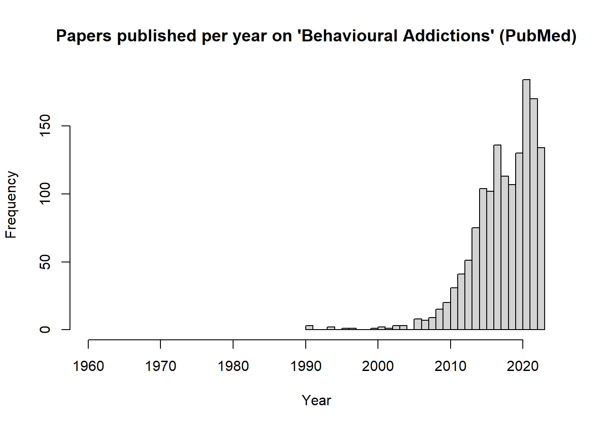

The article must be registered/stored on the PubMed database (a list of journals indexed on PubMed can be found here).
The article must focus on a behaviour which has been studied within the context of addiction (e.g., gambling, exercise, video gaming); the behaviour can be the primary focus or a sub-component of a larger paper (e.g., a study on alcohol use which also measures symptoms of gambling disorder)
The article must use language in the title and/or abstract that indicate that the behaviour is discussed in the context of or as an addiction. This could include, but is not restricted to:
the direct use of the terms “addiction” or “dependence”
the use of accepted (DSM/ICD) or previosuly accepted (e.g., “pathological gambling”) diagnostic terms (e.g., “gambling disorder”)
the use of a term or phrase which is not a clinically/medically accepted diagnostic term (i.e., it is not included in any nosological system), but is used in the research area as such (e.g., “compulsory exercise”, “workaholism”)
the use of measures of “addiction” to the behaviour (e.g., “Exercise Addiction Inventory”) or measures of the symptoms of addiction (e.g., craving, withdrawal) that are then discussed in the context of a disorder or addiction
There are no restrictions on date of publication, study designs, article types (e.g., commentaries, empirical studies etc.)
There are no restrictions on language publication, provided the title and abstract are presented in English as well as the primary language.
The above criteria were used to design of the search terms/strings employed to extract data from the PubMed database (the search string for each behavioural addiction is included before the code used to extract the associated studies). A manual scan of all return studies for relevance according to the above criteria has been made.
https://www.youtube.com/watch?v=yzTuBuRdAyA
Code blocks
Please note that any code chunks presented in this document that, when executed, scrape or pull data from PubMed, are specifically set so that they do not execute when this document renders. Thus, these code chunks, as seen here, simply represent documentation rather than working code. This is because extracting this data (particularly for “addictions” where there are thousands of studies [e.g., gambling]) can take a substantial amount of time and therefore it would take 30-40 minutes every time this document renders if these code chunks executed.
I only note this for anyone wanting to reproduce this analysis who tries to run the entire script by rendering the document. It’s also important as the date at the top of this document may not be the latest date of data extraction (it is only the last date this was rendered).
The latest dates of data extraction for each “behavioural addiction” are below:
# Install and load the groundhog package to ensure consistency of the package versions used here:# install.packages("groundhog") # Installlibrary(groundhog) # Load# List desired packages:packages <-c('rentrez','dplyr','tidyr','purrr','rvest','stringr')# Load desired package with versions specific to project start date:groundhog.library(packages, "2023-06-07")
Behavioural addictions
Extract studies and perform a basic clean of dataset
Notes pre-search: MeSH terms were pretty useless here (unlike the more specific behavioural addiction searches used below) so I relied on my knowledge of the field for terms to use.
Actual search used: ((((“behavioural addiction”[Title/Abstract]) OR (“behavioral addiction”[Title/Abstract])) OR (“non-drug addiction”[Title/Abstract])) OR (“non-substance addiction”[Title/Abstract])) OR (“non-chemical addiction”[Title/Abstract])
Manual search results:link. PubMed format display can be found here
Notes post-search: I manually scanned the results returned on the PubMed site for relevance and all appeared to meet the inclusion criteria. There will certainly be one of overlap between the studies returned from this search and the search is specific to individual behavioural addictions.
```{r}# Clean environment:# rm(list = ls())# Define the search terms/string:search_term_behav_addictions <-'(((("behavioural addiction"[Title/Abstract]) OR ("behavioral addiction"[Title/Abstract])) OR ("non-drug addiction"[Title/Abstract])) OR ("non-substance addiction"[Title/Abstract])) OR ("non-chemical addiction"[Title/Abstract])'# Use entrez_search to get the IDs of the articles:search_results_behav_addictions <-entrez_search(db="pubmed", term=search_term_behav_addictions, retmax=20000)id_list_behav_addictions <- search_results_behav_addictions$ids# Split id list into chunks of 100 for chunk/batches:chunks <-split(id_list_behav_addictions, ceiling(seq_along(id_list_behav_addictions)/100))# Fetch details for each chunk of articles:article_details_behav_addictions <-map_dfr(chunks, function(ids) { articles <-entrez_fetch(db="pubmed", id=ids, rettype="medline", retmode="text")# Split the articles into individual articles: articles <-strsplit(articles, "\n\n")[[1]]# Process each article:map_dfr(articles, function(article) {# Split the article into lines: lines <-strsplit(article, "\n")[[1]]# Get the details we're interested in: details_behav_addictions <-list(PMID =if (any(grepl("^PMID", lines))) lines[grepl("^PMID", lines)] elseNA,DP =if (any(grepl("^DP", lines))) lines[grepl("^DP", lines)] elseNA,TI =if (any(grepl("^TI", lines))) lines[grepl("^TI", lines)] elseNA,LID =if (any(grepl("^LID", lines))) paste(lines[grepl("^LID", lines)], collapse="; ") elseNA,AB =if (any(grepl("^AB", lines))) paste(lines[grepl("^AB", lines)], collapse=" ") elseNA,FAU =if (any(grepl("^FAU", lines))) paste(lines[grepl("^FAU", lines)], collapse="; ") elseNA,AD =if (any(grepl("^AD", lines))) paste(lines[grepl("^AD", lines)], collapse="; ") elseNA,LA =if (any(grepl("^LA", lines))) paste(lines[grepl("^LA", lines)], collapse="; ") elseNA,PT =if (any(grepl("^PT", lines))) paste(lines[grepl("^PT", lines)], collapse="; ") elseNA,TA =if (any(grepl("^TA", lines))) lines[grepl("^TA", lines)] elseNA,COIS =if (any(grepl("^COIS", lines))) paste(lines[grepl("^COIS", lines)], collapse=" ") elseNA,JT =if (any(grepl("^JT", lines))) lines[grepl("^JT", lines)] elseNA )# Convert the list of details into a one-row data frame: details_df_behav_addictions <-bind_rows(details_behav_addictions)return(details_df_behav_addictions) })})# Check the results:article_details_behav_addictions %>%as_tibble() %>%print()# Let's remove the identifiers at the beginning of each data point:rep_str <-c('PMID- '='', 'DP - '='', 'TI - '='', 'LID - '='', 'AB - '='','FAU - '='', 'AD - '='', 'LA - '='', 'PT - '='', 'TA - '='','COIS- '='', 'JT - '='')results_behav_addictions <- article_details_behav_addictions %>%mutate(across(everything(), ~str_replace_all(., rep_str))) %>%# Remove identifiers# Now separate the date year and month/day info:separate(DP, c("Year", "Month"), sep ="\\ ") %>%mutate(Year =as.numeric(Year)) %>%# Convert Year to numericrename( # Let's also provide more descriptive names for each of the columns"Title"="TI", "DOI"="LID", "Abstract"="AB", "Full_Author_Name"="FAU", "Author_Address"="AD", "Language"="LA", "Publication_Type"="PT", "Journal_name_short"="TA","Conflict_of_Interest_Statement"="COIS","Journal_Title"="JT") %>%print()# Now save the initial results before proceeding so we can't lose them!write.csv(results_behav_addictions, "Data extraction/behav_addictions_data.csv", row.names=FALSE)```
Extract full title using rvest
Okay, so I’m struggling to get the rentrez package to extract the full, non-truncated titles of articles. I want to make sure we have these so we can accurately identify duplicates, so we’re going to use the rvest package to scrape the titles returned from a manual search in PubMed (it uses the URL from this search), then join the two datasets using the PMID, retaining the title from this new dataset.
Using the revest package
It’s important to note that, unlike using the rentrez package X uses data via PubMed’s API, using the rvest package involves scraping the PubMed website for information, and there are many important ethical and legal considerations surrounding web scraping (some of which vary from country to country) that you may need to consider before proceeding. See, for example, this useful paper.
```{r}# Add search URL:url_behav_addictions_rvest <-"https://pubmed.ncbi.nlm.nih.gov/?term=%28%28%28%28%22behavioural+addiction%22%5BTitle%2FAbstract%5D%29+OR+%28%22behavioral+addiction%22%5BTitle%2FAbstract%5D%29%29+OR+%28%22non-drug+addiction%22%5BTitle%2FAbstract%5D%29%29+OR+%28%22non-substance+addiction%22%5BTitle%2FAbstract%5D%29%29+OR+%28%22non-chemical+addiction%22%5BTitle%2FAbstract%5D%29&size=200"# 856 results on 11/07/2023. # Read and parse the webpage:webpage_behav_addictions_rvest <-read_html(url_behav_addictions_rvest)# Get the total number of search results:results_count_behav_addictions <- webpage_behav_addictions_rvest %>%html_node(".results-amount .value") %>%html_text() %>%str_replace(",", "") %>%as.numeric()# Calculate the number of pages:results_per_page_behav_addictions <-100total_pages_behav_addictions <-ceiling(results_count_behav_addictions[1] / results_per_page_behav_addictions)# Print results_count_behav_addictions and total_pages_behav_addictions:print(results_count_behav_addictions)print(total_pages_behav_addictions)# Initialize an empty data frame:results_behav_addictions_rvest <-data.frame()# Loop through each page and scrape the data:for (page in0:(total_pages_behav_addictions -1)) {# Update the page parameter in the URL for the current page current_url <-paste0(url_behav_addictions_rvest, "&page=", page +1)# Read and parse the current webpage: current_page <-read_html(current_url)# Extract title: Title <-tryCatch({ current_page %>%html_nodes(".docsum-title") %>%html_text(trim =TRUE) }, error =function(e) {print(paste("Error extracting title", page +1))rep(NA, length(Title)) # Return a vector of NAs with the same length as Title })# Extract the PMID: pmid <- current_page %>%html_nodes(".docsum-pmid") %>%html_text(trim =TRUE)# Create a data frame with the extracted data: current_results_behav_addictions <-data.frame(Title = Title,PMID = pmid)# Combine the current results with the previous results: results_behav_addictions_rvest <-rbind(results_behav_addictions_rvest, current_results_behav_addictions)# Introduce a delay to avoid overloading the server: sleep_time <-runif(1, min =5, max =15)Sys.sleep(sleep_time)}# Print the extracted data:print(as_tibble(results_behav_addictions_rvest))# Now save the titles results before proceeding so we can't lose them!write.csv(results_behav_addictions_rvest, "Data extraction/behav_addictions_titles.csv", row.names=FALSE)```
Refine dataset
Now we need to identify and remove any duplicates, irrelevant studies, or entries with any other issues (e.g., those that turn out to be books)
# Load in first dataset in case environment clean on knit (above sections not executed for render):results_behav_addictions<-read.csv("Data extraction/behav_addictions_data.csv") %>%as_tibble()# Load in second dataset in case environment clean on knit (above sections not executed for render):results_behav_addictions_rvest<-read.csv("Data extraction/behav_addictions_titles.csv") %>%as_tibble()# Merge the two datasets:results_behav_addictions2 <- results_behav_addictions %>%rename("Title_trunc"="Title") %>%# Designate the truncated title from the primary datasetmerge(results_behav_addictions_rvest, by ="PMID") %>%relocate(Title) %>%# Place full title first for easeas_tibble() %>%print()
# A tibble: 865 × 14
Title PMID Year Month Title_trunc DOI Abstract Full_Author_Name
<chr> <int> <int> <chr> <chr> <chr> <chr> <chr>
1 "[Alternating… 9.04e6 1996 Jul-… "[Alternat… <NA> "The co… Bayle, F J; Chi…
2 "Psychology o… 9.12e6 1997 Feb "Psycholog… <NA> "This p… Griffiths, M
3 "Subtype-sele… 1.09e7 2000 Jul "Subtype-s… <NA> "Neuron… Francis, M M; V…
4 "The neurobio… 1.14e7 2001 Jul "The neuro… <NA> "Despit… Potenza, M N
5 "A factor-ana… 1.22e7 2002 Aug "A factor-… <NA> "Eviden… Charlton, John P
6 "Genetics of … 1.26e7 2003 Spri… "Genetics … <NA> "Pathol… Ibanez, Angela;…
7 "Benzodiazepi… 1.27e7 2003 May "Benzodiaz… <NA> "AIMS: … de las Cuevas, …
8 "[Excessive c… 1.51e7 2004 Mar "[Excessiv… <NA> "Compul… Grusser, Sabine…
9 "The behavior… 1.58e7 2004 Dec "The behav… <NA> "From t… Rachlin, Howard
10 "Substance ab… 1.70e7 2006 Sep "Substance… <NA> "BACKGR… Kertesz, Stefan…
# ℹ 855 more rows
# ℹ 6 more variables: Author_Address <chr>, Language <chr>,
# Publication_Type <chr>, Journal_name_short <chr>,
# Conflict_of_Interest_Statement <chr>, Journal_Title <chr>
# Check results:# View(results_behav_addictions2)# Check dupliactes based on PMIDs:results_behav_addictions2 %>%group_by(PMID) %>%filter(n()>1) %>%print(n =100)
# A tibble: 0 × 14
# Groups: PMID [0]
# ℹ 14 variables: Title <chr>, PMID <int>, Year <int>, Month <chr>,
# Title_trunc <chr>, DOI <chr>, Abstract <chr>, Full_Author_Name <chr>,
# Author_Address <chr>, Language <chr>, Publication_Type <chr>,
# Journal_name_short <chr>, Conflict_of_Interest_Statement <chr>,
# Journal_Title <chr>
# There is no evidence of clear PMID duplicates# Show duplicate titles:results_behav_addictions2 %>%group_by(Title) %>%filter(n()>1)
# A tibble: 2 × 14
# Groups: Title [1]
Title PMID Year Month Title_trunc DOI Abstract Full_Author_Name
<chr> <int> <int> <chr> <chr> <chr> <chr> <chr>
1 Commentary on:… 2.66e7 2015 Sep "Commentar… 10.1… "This c… Spada, Marcanto…
2 Commentary on:… 2.66e7 2015 Sep "Commentar… 10.1… "This c… Blaszczynski, A…
# ℹ 6 more variables: Author_Address <chr>, Language <chr>,
# Publication_Type <chr>, Journal_name_short <chr>,
# Conflict_of_Interest_Statement <chr>, Journal_Title <chr>
# **This is actually two seperate commentaries on the same article**# Okay, now we are confident that we have a clean dataset, let's explore!# Summary of the Year variable:summary(results_behav_addictions2$Year)
Min. 1st Qu. Median Mean 3rd Qu. Max.
1994 2016 2018 2018 2021 2023
# Number of publications per year:hist(results_behav_addictions2$Year,xlim =c(1960,2023),breaks =30,main ="Papers published per year on 'Behavioural Addictions' (PubMed)",xlab ="Year") # Even though the earliest year an article was published is 1994, I've set the range to started 1960 as this is where the starting point is across all other behavioural addiction searches.
# Number of separate journals:results_behav_addictions2 %>%distinct(Journal_name_short) %>%arrange(Journal_name_short) %>%print(n =50)
# A tibble: 275 × 1
Journal_name_short
<chr>
1 Acta Biomed
2 Acta Derm Venereol
3 Acta Med Port
4 Acta Psychol (Amst)
5 Addict Behav
6 Addict Behav Rep
7 Addict Biol
8 Addiction
9 Adicciones
10 Adv Exp Med Biol
11 Alcohol Clin Exp Res
12 Am J Addict
13 Am J Clin Nutr
14 Am J Drug Alcohol Abuse
15 Am J Mens Health
16 Am J Orthopsychiatry
17 Ann Agric Environ Med
18 Ann Gen Psychiatry
19 Ann N Y Acad Sci
20 Annu Rev Nutr
21 Appetite
22 Arch Iran Med
23 Arch Sex Behav
24 Arch Womens Ment Health
25 Asian J Gambl Issues Public Health
26 Asian J Psychiatr
27 Aust N Z J Psychiatry
28 BMC Psychiatry
29 BMC Psychol
30 BMC Public Health
31 BMJ Open
32 Behav Brain Funct
33 Behav Brain Res
34 Behav Brain Sci
35 Behav Neurosci
36 Behav Sci (Basel)
37 Biol Psychiatry
38 Biol Psychiatry Cogn Neurosci Neuroimaging
39 Biomed Res Int
40 Biotechnol Biotechnol Equip
41 Br J Dermatol
42 Br J Gen Pract
43 Br J Health Psychol
44 Br J Nutr
45 Br J Psychiatry
46 Br J Psychol
47 Brain Behav
48 Brain Behav Immun
49 Brain Res
50 Brain Sci
# ℹ 225 more rows
# Most popular journals:results_behav_addictions2 %>%group_by(Journal_name_short) %>%summarise(n =n() ) %>%arrange(desc(n)) %>%print(n =50)
# A tibble: 275 × 2
Journal_name_short n
<chr> <int>
1 J Behav Addict 106
2 Front Psychiatry 56
3 Addict Behav 39
4 Int J Environ Res Public Health 37
5 Addiction 28
6 Front Psychol 27
7 PLoS One 17
8 J Gambl Stud 16
9 Psychiatry Res 16
10 Addict Biol 14
11 Adv Exp Med Biol 12
12 Cyberpsychol Behav Soc Netw 10
13 CNS Spectr 9
14 Neurosci Biobehav Rev 8
15 Clin Psychol Rev 7
16 Front Behav Neurosci 7
17 Addict Behav Rep 6
18 Am J Drug Alcohol Abuse 6
19 Compr Psychiatry 6
20 Int J Ment Health Addict 6
21 J Addict Dis 6
22 J Clin Med 6
23 Aust N Z J Psychiatry 5
24 Cureus 5
25 Drug Alcohol Depend 5
26 Eur Addict Res 5
27 Eur Neuropsychopharmacol 5
28 Neuropsychopharmacology 5
29 Psychol Med 5
30 Sci Rep 5
31 BMC Psychiatry 4
32 Curr Addict Rep 4
33 Curr Psychol 4
34 Ir J Psychol Med 4
35 Nervenarzt 4
36 Prog Neuropsychopharmacol Biol Psychiatry 4
37 Psychiatr Danub 4
38 Psychiatr Hung 4
39 Psychol Addict Behav 4
40 Psychol Rep 4
41 Psychopharmacology (Berl) 4
42 Transl Psychiatry 4
43 Z Kinder Jugendpsychiatr Psychother 4
44 BMC Psychol 3
45 BMC Public Health 3
46 Behav Brain Res 3
47 Behav Sci (Basel) 3
48 Brain Behav 3
49 Bundesgesundheitsblatt Gesundheitsforschung Gesundheitsschutz 3
50 Child Adolesc Psychiatr Clin N Am 3
# ℹ 225 more rows
# View(results_behav_addictions_sans_duplicates) # Visually inspect results# Now I need to add a label to all of these studies to signify that they Were returned from the behav_addictions search so that we can distinguish them from other studies when we later joined the datasets together:Label_Behavioural_addictions <-rep("behavioural_addictions", times =count(results_behav_addictions2))results_behav_addictions_final <- results_behav_addictions2 %>%bind_cols(Label_Behavioural_addictions) %>%rename(Label =14) %>%print()
New names:
• `` -> `...15`
# A tibble: 865 × 15
Title PMID Year Month Title_trunc DOI Abstract Full_Author_Name
<chr> <int> <int> <chr> <chr> <chr> <chr> <chr>
1 "[Alternating… 9.04e6 1996 Jul-… "[Alternat… <NA> "The co… Bayle, F J; Chi…
2 "Psychology o… 9.12e6 1997 Feb "Psycholog… <NA> "This p… Griffiths, M
3 "Subtype-sele… 1.09e7 2000 Jul "Subtype-s… <NA> "Neuron… Francis, M M; V…
4 "The neurobio… 1.14e7 2001 Jul "The neuro… <NA> "Despit… Potenza, M N
5 "A factor-ana… 1.22e7 2002 Aug "A factor-… <NA> "Eviden… Charlton, John P
6 "Genetics of … 1.26e7 2003 Spri… "Genetics … <NA> "Pathol… Ibanez, Angela;…
7 "Benzodiazepi… 1.27e7 2003 May "Benzodiaz… <NA> "AIMS: … de las Cuevas, …
8 "[Excessive c… 1.51e7 2004 Mar "[Excessiv… <NA> "Compul… Grusser, Sabine…
9 "The behavior… 1.58e7 2004 Dec "The behav… <NA> "From t… Rachlin, Howard
10 "Substance ab… 1.70e7 2006 Sep "Substance… <NA> "BACKGR… Kertesz, Stefan…
# ℹ 855 more rows
# ℹ 7 more variables: Author_Address <chr>, Language <chr>,
# Publication_Type <chr>, Journal_name_short <chr>,
# Conflict_of_Interest_Statement <chr>, Label <chr>, ...15 <chr>
# View(results_behav_addictions_final)# Now save the cleaned results:write.csv(results_behav_addictions_final, "Data extraction/behav_addictions_data_cleaned.csv", row.names=FALSE)
Gambling addiction
Extract studies and perform a basic clean of dataset
Notes pre-search: Mesh terms can be found here. I tried adding “problem gambling” and it adds around 1,200 more studies, but the overall distribution over time remains very similar.
One unavoidable issue with the gambling search is 2 of the 3 gambling-specific journals (International Gambling Studies & Journal of Gambling Issues) are not indexed by PubMed. That said, most behavioural addiction and addiction-focused journals are, fortunately.
Add gambling journals?
A simple reminder to look into this.
Actual search used: (“gambling disorder”[Title/Abstract]) OR (“disordered gambling”[Title/Abstract] OR “gambling addiction”[Title/Abstract]) OR (“addicted gambler*”[Title/Abstract]) OR (“pathological gambl*”[Title/Abstract]) OR (“compulsive gambl*”[Title/Abstract]
Notes post-search: I manually inspected the results directly in the PubMed site. Many duplicates that require removal (performed below), but all studies appeared relevant (July 2023).
```{r}# Clean environment:rm(list =ls())# Define the search terms/string:search_term_gambling <-'("gambling disorder"[Title/Abstract]) OR ("disordered gambling"[Title/Abstract] OR "gambling addiction"[Title/Abstract]) OR ("addicted gambler*"[Title/Abstract]) OR ("pathological gambl*"[Title/Abstract]) OR ("compulsive gambl*"[Title/Abstract])'# Use entrez_search to get the IDs of the articles:search_results_gambling <-entrez_search(db="pubmed", term=search_term_gambling, retmax=20000)id_list_gambling <- search_results_gambling$ids# Split id list into chunks of 100 for chunk/batches:chunks <-split(id_list_gambling, ceiling(seq_along(id_list_gambling)/100))# Fetch details for each chunk of articles:article_details_gambling <-map_dfr(chunks, function(ids) { articles <-entrez_fetch(db="pubmed", id=ids, rettype="medline", retmode="text")# Split the articles into individual articles: articles <-strsplit(articles, "\n\n")[[1]]# Process each article:map_dfr(articles, function(article) {# Split the article into lines: lines <-strsplit(article, "\n")[[1]]# Get the details we're interested in: details_gambling <-list(PMID =if (any(grepl("^PMID", lines))) lines[grepl("^PMID", lines)] elseNA,DP =if (any(grepl("^DP", lines))) lines[grepl("^DP", lines)] elseNA,TI =if (any(grepl("^TI", lines))) lines[grepl("^TI", lines)] elseNA,LID =if (any(grepl("^LID", lines))) paste(lines[grepl("^LID", lines)], collapse="; ") elseNA,AB =if (any(grepl("^AB", lines))) paste(lines[grepl("^AB", lines)], collapse=" ") elseNA,FAU =if (any(grepl("^FAU", lines))) paste(lines[grepl("^FAU", lines)], collapse="; ") elseNA,AD =if (any(grepl("^AD", lines))) paste(lines[grepl("^AD", lines)], collapse="; ") elseNA,LA =if (any(grepl("^LA", lines))) paste(lines[grepl("^LA", lines)], collapse="; ") elseNA,PT =if (any(grepl("^PT", lines))) paste(lines[grepl("^PT", lines)], collapse="; ") elseNA,TA =if (any(grepl("^TA", lines))) lines[grepl("^TA", lines)] elseNA,COIS =if (any(grepl("^COIS", lines))) paste(lines[grepl("^COIS", lines)], collapse=" ") elseNA,JT =if (any(grepl("^JT", lines))) lines[grepl("^JT", lines)] elseNA )# Convert the list of details into a one-row data frame: details_df_gambling <-bind_rows(details_gambling)return(details_df_gambling) })})# Check the results:article_details_gambling %>%as_tibble() %>%print()# Let's remove the identifiers at the beginning of each data point:rep_str <-c('PMID- '='', 'DP - '='', 'TI - '='', 'LID - '='', 'AB - '='','FAU - '='', 'AD - '='', 'LA - '='', 'PT - '='', 'TA - '='','COIS- '='', 'JT - '='')results_gambling <- article_details_gambling %>%mutate(across(everything(), ~str_replace_all(., rep_str))) %>%# Remove identifiers# Now separate the date year and month/day info:separate(DP, c("Year", "Month"), sep ="\\ ") %>%mutate(Year =as.numeric(Year)) %>%# Convert Year to numericrename( # Let's also provide more descriptive names for each of the columns"Title"="TI", "DOI"="LID", "Abstract"="AB", "Full_Author_Name"="FAU", "Author_Address"="AD", "Language"="LA", "Publication_Type"="PT", "Journal_name_short"="TA","Conflict_of_Interest_Statement"="COIS","Journal_Title"="JT") %>%print()# Now save the initial results before proceeding so we can't lose them!write.csv(results_gambling, "Data extraction/gambling_data.csv", row.names=FALSE)```
Extract full title using rvest
As above, we’re going to use the rvest package to scrape the titles of gambling papers, then join the two datasets using the PMID, retaining the title from this new dataset.
```{r}# Add search URL:url_gambling_rvest <-"https://pubmed.ncbi.nlm.nih.gov/?term=%28%22gambling+disorder%22%5BTitle%2FAbstract%5D%29+OR+%28%22disordered+gambling%22%5BTitle%2FAbstract%5D+OR+%22gambling+addiction%22%5BTitle%2FAbstract%5D%29+OR+%28%22addicted+gambler*%22%5BTitle%2FAbstract%5D%29+OR+%28%22pathological+gambl*%22%5BTitle%2FAbstract%5D%29+OR+%28%22compulsive+gambl*%22%5BTitle%2FAbstract%5D%29&size=200"# 3502 results on 10/07/2023# Read and parse the webpage:webpage_gambling_rvest <-read_html(url_gambling_rvest)# Get the total number of search results:results_count_gambling <- webpage_gambling_rvest %>%html_node(".results-amount .value") %>%html_text() %>%str_replace(",", "") %>%as.numeric()# Calculate the number of pages:results_per_page_gambling <-100total_pages_gambling <-ceiling(results_count_gambling[1] / results_per_page_gambling)# Print results_count_gambling and total_pages_gambling:print(results_count_gambling)print(total_pages_gambling)# Initialize an empty data frame:results_gambling_rvest <-data.frame()# Loop through each page and scrape the data:for (page in0:(total_pages_gambling -1)) {# Update the page parameter in the URL for the current page current_url <-paste0(url_gambling_rvest, "&page=", page +1)# Read and parse the current webpage: current_page <-read_html(current_url)# Extract title: Title <-tryCatch({ current_page %>%html_nodes(".docsum-title") %>%html_text(trim =TRUE) }, error =function(e) {print(paste("Error extracting title", page +1))rep(NA, length(Title)) # Return a vector of NAs with the same length as Title })# Extract the PMID: pmid <- current_page %>%html_nodes(".docsum-pmid") %>%html_text(trim =TRUE)# Create a data frame with the extracted data: current_results_gambling <-data.frame(Title = Title,PMID = pmid)# Combine the current results with the previous results: results_gambling_rvest <-rbind(results_gambling_rvest, current_results_gambling)# Introduce a delay to avoid overloading the server: sleep_time <-runif(1, min =5, max =15)Sys.sleep(sleep_time)}# Print the extracted data:print(as_tibble(results_gambling_rvest))# Now save the titles results before proceeding so we can't lose them!write.csv(results_gambling_rvest, "Data extraction/gambling_titles.csv", row.names=FALSE)```
Refine dataset
Now we need to identify and remove any duplicates, irrelevant studies, or entries with any other issues (e.g., those that turn out to be books)
# Load in first dataset in case environment clean on knit (above sections not executed for render):results_gambling<-read.csv("Data extraction/gambling_data.csv") %>%as_tibble()# Load in second dataset in case environment clean on knit (above sections not executed for render):results_gambling_rvest<-read.csv("Data extraction/gambling_titles.csv") %>%as_tibble()# Merge the two datasets:results_gambling2 <- results_gambling %>%rename("Title_trunc"="Title") %>%# Designate the truncated title from the primary datasetmerge(results_gambling_rvest, by ="PMID") %>%relocate(Title) %>%# Place full title first for easeas_tibble() %>%print()
# A tibble: 3,502 × 14
Title PMID Year Month Title_trunc DOI Abstract Full_Author_Name
<chr> <int> <int> <chr> <chr> <chr> <chr> <chr>
1 "Pathological… 3.18e5 1979 Oct "Pathologi… <NA> <NA> Allcock, C C
2 "Pathological… 3.18e5 1979 Oct "Pathologi… <NA> <NA> Allcock, C C
3 "Games, goods… 3.91e5 1979 Jun "Games, go… <NA> "This s… Salter, M A
4 "Games, goods… 3.91e5 1979 Jun "Games, go… <NA> "This s… Salter, M A
5 "Compulsive g… 6.84e5 1978 May "Compulsiv… <NA> <NA> Oldman, D
6 "\"Compulsive… 7.21e5 1978 Oct "\"Compuls… <NA> "A mode… Kusyszyn, I
7 "The compulsi… 7.60e5 1979 Feb "The compu… <NA> "The ma… Lesieur, H R
8 "The compulsi… 7.60e5 1979 Feb "The compu… <NA> "The ma… Lesieur, H R
9 "'Compulsive'… 9.29e5 1977 Oct "'Compulsi… <NA> <NA> Dickerson, M
10 "Pathological… 1.10e6 1975 <NA> "Pathologi… <NA> <NA> Moran, E
# ℹ 3,492 more rows
# ℹ 6 more variables: Author_Address <chr>, Language <chr>,
# Publication_Type <chr>, Journal_name_short <chr>,
# Conflict_of_Interest_Statement <chr>, Journal_Title <chr>
# Check results:# View(results_gambling2)# Check duplicates based on PMIDs:Simple_duplicate_removal_n <- results_gambling2 %>%distinct(PMID) %>%count() %>%print() # there's a lot here
# A tibble: 1,012 × 14
# Groups: PMID [463]
Title PMID Year Month Title_trunc DOI Abstract Full_Author_Name
<chr> <int> <int> <chr> <chr> <chr> <chr> <chr>
1 Pathological… 3.18e5 1979 Oct "Pathologi… <NA> <NA> Allcock, C C
2 Pathological… 3.18e5 1979 Oct "Pathologi… <NA> <NA> Allcock, C C
3 Games, goods… 3.91e5 1979 Jun "Games, go… <NA> "This s… Salter, M A
4 Games, goods… 3.91e5 1979 Jun "Games, go… <NA> "This s… Salter, M A
5 The compulsi… 7.60e5 1979 Feb "The compu… <NA> "The ma… Lesieur, H R
6 The compulsi… 7.60e5 1979 Feb "The compu… <NA> "The ma… Lesieur, H R
7 Pathological… 1.10e6 1975 <NA> "Pathologi… <NA> <NA> Moran, E
8 Pathological… 1.10e6 1975 <NA> "Pathologi… <NA> <NA> Moran, E
9 The patholog… 1.41e6 1992 Sep "The patho… <NA> "Over t… Rosenthal, R J;…
10 The patholog… 1.41e6 1992 Sep "The patho… <NA> "Over t… Rosenthal, R J;…
11 [Pathologica… 1.51e6 1992 Jun "[Patholog… <NA> "The ca… Krag, N J
12 [Pathologica… 1.51e6 1992 Jun "[Patholog… <NA> "The ca… Krag, N J
13 Comparison o… 1.68e6 1991 Sep "Compariso… <NA> "Of 120… McConaghy, N; B…
14 Comparison o… 1.68e6 1991 Sep "Compariso… <NA> "Of 120… McConaghy, N; B…
15 [Nosological… 1.76e6 1991 May "[Nosologi… <NA> "Obsess… Hantouche, E; M…
16 [Nosological… 1.76e6 1991 May "[Nosologi… <NA> "Obsess… Hantouche, E; M…
17 Gambling and… 1.80e6 1991 <NA> "Gambling … <NA> "Studen… Lesieur, H R; C…
18 Gambling and… 1.80e6 1991 <NA> "Gambling … <NA> "Studen… Lesieur, H R; C…
19 Casino-relat… 2.34e6 1990 Jun "Casino-re… <NA> "The fi… Jason, D R; Taf…
20 Casino-relat… 2.34e6 1990 Jun "Casino-re… <NA> "The fi… Jason, D R; Taf…
21 CSF studies … 2.47e6 1989 <NA> "CSF studi… <NA> "1. A d… Roy, A; Linnoil…
22 CSF studies … 2.47e6 1989 <NA> "CSF studi… <NA> "1. A d… Roy, A; Linnoil…
23 Gamblers' se… 2.61e6 1989 Dec "Gamblers'… <NA> "Impair… Corless, T; Dic…
24 Gamblers' se… 2.61e6 1989 Dec "Gamblers'… <NA> "Impair… Corless, T; Dic…
25 CSF GABA and… 2.62e6 1989 Nov "CSF GABA … <NA> "We pre… Roy, A; DeJong,…
26 CSF GABA and… 2.62e6 1989 Nov "CSF GABA … <NA> "We pre… Roy, A; DeJong,…
27 Extraversion… 2.75e6 1989 Aug "Extravers… <NA> "Pathol… Roy, A; De Jong…
28 Extraversion… 2.75e6 1989 Aug "Extravers… <NA> "Pathol… Roy, A; De Jong…
29 Personality … 2.76e6 1989 Jul "Personali… <NA> "Pathol… Roy, A; Custer,…
30 Personality … 2.76e6 1989 Jul "Personali… <NA> "Pathol… Roy, A; Custer,…
31 Behavior com… 2.91e6 1988 Jul "Behavior … <NA> <NA> McConaghy, N; A…
32 Behavior com… 2.91e6 1988 Jul "Behavior … <NA> <NA> McConaghy, N; A…
33 Pathological… 3.21e6 1988 Jul "Pathologi… <NA> <NA> Lesieur, H R; H…
34 Pathological… 3.21e6 1988 Jul "Pathologi… <NA> <NA> Lesieur, H R; H…
35 Studies in R… 3.39e6 1988 <NA> "Studies i… <NA> "Recent… Adams, H B
36 Studies in R… 3.39e6 1988 <NA> "Studies i… <NA> "Recent… Adams, H B
37 Sensation se… 3.46e6 1986 Feb "Sensation… <NA> <NA> Blaszczynski, A…
38 Sensation se… 3.46e6 1986 Feb "Sensation… <NA> <NA> Blaszczynski, A…
39 Personality … 3.67e6 1987 Sep "Personali… <NA> "Studie… McCormick, R A;…
40 Personality … 3.67e6 1987 Sep "Personali… <NA> "Studie… McCormick, R A;…
41 Arousal and … 3.79e6 1986 Sep-… "Arousal a… <NA> "Follow… Brown, R I
42 Arousal and … 3.79e6 1986 Sep-… "Arousal a… <NA> "Follow… Brown, R I
43 Impotence as… 3.82e6 1987 Mar "Impotence… <NA> "A 49-y… Daghestani, A N
44 Impotence as… 3.82e6 1987 Mar "Impotence… <NA> "A 49-y… Daghestani, A N
45 Pathological… 3.86e6 1985 Sep "Pathologi… <NA> <NA> Blaszczynski, A…
46 Pathological… 3.86e6 1985 Sep "Pathologi… <NA> <NA> Blaszczynski, A…
47 Compulsive g… 6.60e6 1984 Dec "Compulsiv… <NA> <NA> Hardwick, C
48 Compulsive g… 6.60e6 1984 Dec "Compulsiv… <NA> <NA> Hardwick, C
49 New Jersey c… 6.60e6 1984 Dec "New Jerse… <NA> <NA> Klein, R M
50 New Jersey c… 6.60e6 1984 Dec "New Jerse… <NA> <NA> Klein, R M
51 Patterns of … 6.68e6 1983 <NA> "Patterns … <NA> "Increa… Ramirez, L F; M…
52 Patterns of … 6.68e6 1983 <NA> "Patterns … <NA> "Increa… Ramirez, L F; M…
53 Atypical min… 6.87e6 1983 May-… "Atypical … <NA> <NA> Jarvik, L; Kulb…
54 Atypical min… 6.87e6 1983 May-… "Atypical … <NA> <NA> Jarvik, L; Kulb…
55 Compulsive g… 7.09e6 1982 Apr "Compulsiv… <NA> "Twenty… Greenberg, D; R…
56 Compulsive g… 7.09e6 1982 Apr "Compulsiv… <NA> "Twenty… Greenberg, D; R…
57 Treatment of… 7.14e6 1982 Sep "Treatment… <NA> <NA> Salzmann, M M
58 Treatment of… 7.14e6 1982 Sep "Treatment… <NA> <NA> Salzmann, M M
59 Cognitive-be… 8.00e6 1994 Apr "Cognitive… <NA> "This s… Ladouceur, R; B…
60 Cognitive-be… 8.00e6 1994 Apr "Cognitive… <NA> "This s… Ladouceur, R; B…
61 Pathological… 8.25e6 1993 <NA> "Pathologi… <NA> "Both p… Lesieur, H R; B…
62 Pathological… 8.25e6 1993 <NA> "Pathologi… <NA> "Both p… Lesieur, H R; B…
63 Correlates o… 8.31e6 1993 Sep-… "Correlate… <NA> "The So… Templer, D I; K…
64 Correlates o… 8.31e6 1993 Sep-… "Correlate… <NA> "The So… Templer, D I; K…
65 Epidemiology… 8.47e6 1993 Mar "Epidemiol… <NA> "Thirty… Bland, R C; New…
66 Epidemiology… 8.47e6 1993 Mar "Epidemiol… <NA> "Thirty… Bland, R C; New…
67 Pathological… 1.17e7 2001 Oct "Pathologi… <NA> <NA> Bondolfi, G; La…
68 Pathological… 1.17e7 2001 Oct "Pathologi… <NA> <NA> Bondolfi, G; La…
69 Cognitive tr… 1.18e7 2001 Nov "Cognitive… <NA> "This s… Ladouceur, R; S…
70 Cognitive tr… 1.18e7 2001 Nov "Cognitive… <NA> "This s… Ladouceur, R; S…
71 Frontal lobe… 1.20e7 2002 Feb "Frontal l… <NA> "BACKGR… Cavedini, Paolo…
72 Frontal lobe… 1.20e7 2002 Feb "Frontal l… <NA> "BACKGR… Cavedini, Paolo…
73 Drugs can tr… 1.20e7 2002 Feb "Drugs can… <NA> "Dopami… <NA>
74 Drugs can tr… 1.20e7 2002 Feb "Drugs can… <NA> "Dopami… <NA>
75 Pathological… 1.21e7 2002 Jun "Pathologi… <NA> "OBJECT… Maccallum, Fion…
76 Pathological… 1.21e7 2002 Jun "Pathologi… <NA> "OBJECT… Maccallum, Fion…
77 Pathological… 1.21e7 2002 May-… "Pathologi… <NA> "Accumu… Toneatto, Tony;…
78 Pathological… 1.21e7 2002 May-… "Pathologi… <NA> "Accumu… Toneatto, Tony;…
79 Suicidal ide… 1.21e7 2002 Jul "Suicidal … <NA> "This s… Petry, Nancy M;…
80 Suicidal ide… 1.21e7 2002 Jul "Suicidal … <NA> "This s… Petry, Nancy M;…
81 A factor-ana… 1.22e7 2002 Aug "A factor-… <NA> "Eviden… Charlton, John P
82 A factor-ana… 1.22e7 2002 Aug "A factor-… <NA> "Eviden… Charlton, John P
83 Gender diffe… 1.22e7 2002 Aug "Gender di… <NA> "This s… Ladd, George T;…
84 Gender diffe… 1.22e7 2002 Aug "Gender di… <NA> "This s… Ladd, George T;…
85 The South Oa… 1.24e7 2002 Fall "The South… <NA> "The So… Battersby, Malc…
86 The South Oa… 1.24e7 2002 Fall "The South… <NA> "The So… Battersby, Malc…
87 Pathological… 1.24e7 2002 Sep-… "Pathologi… <NA> "Pathol… Martins, Silvia…
88 Pathological… 1.24e7 2002 Sep-… "Pathologi… <NA> "Pathol… Martins, Silvia…
89 Reliability,… 1.25e7 2003 Jan "Reliabili… <NA> "OBJECT… Stinchfield, Ra…
90 Reliability,… 1.25e7 2003 Jan "Reliabili… <NA> "OBJECT… Stinchfield, Ra…
91 Characterist… 1.25e7 2003 Jan-… "Character… <NA> "The ga… Gotestam, K Gun…
92 Characterist… 1.25e7 2003 Jan-… "Character… <NA> "The ga… Gotestam, K Gun…
93 Gambling par… 1.25e7 2002 Wint… "Gambling … <NA> "Demogr… Welte, John W; …
94 Gambling par… 1.25e7 2002 Wint… "Gambling … <NA> "Demogr… Welte, John W; …
95 Pathological… 1.25e7 2002 Nov-… "Pathologi… <NA> <NA> Dineen, E
96 Pathological… 1.25e7 2002 Nov-… "Pathologi… <NA> <NA> Dineen, E
97 Are there co… 1.26e7 2003 Feb "Are there… <NA> "OBJECT… Tavares, Herman…
98 Are there co… 1.26e7 2003 Feb "Are there… <NA> "OBJECT… Tavares, Herman…
99 A population… 1.27e7 2003 Spri… "A populat… <NA> "The as… Newman, Stephen…
100 A population… 1.27e7 2003 Spri… "A populat… <NA> "The as… Newman, Stephen…
# ℹ 912 more rows
# ℹ 6 more variables: Author_Address <chr>, Language <chr>,
# Publication_Type <chr>, Journal_name_short <chr>,
# Conflict_of_Interest_Statement <chr>, Journal_Title <chr>
# Remove these asap as they're clear duplicates:results_gambling_sans_duplicates<- results_gambling2 %>%distinct(PMID, .keep_all =TRUE) %>%print()
# A tibble: 2,953 × 14
Title PMID Year Month Title_trunc DOI Abstract Full_Author_Name
<chr> <int> <int> <chr> <chr> <chr> <chr> <chr>
1 "Pathological… 3.18e5 1979 Oct "Pathologi… <NA> <NA> Allcock, C C
2 "Games, goods… 3.91e5 1979 Jun "Games, go… <NA> "This s… Salter, M A
3 "Compulsive g… 6.84e5 1978 May "Compulsiv… <NA> <NA> Oldman, D
4 "\"Compulsive… 7.21e5 1978 Oct "\"Compuls… <NA> "A mode… Kusyszyn, I
5 "The compulsi… 7.60e5 1979 Feb "The compu… <NA> "The ma… Lesieur, H R
6 "'Compulsive'… 9.29e5 1977 Oct "'Compulsi… <NA> <NA> Dickerson, M
7 "Pathological… 1.10e6 1975 <NA> "Pathologi… <NA> <NA> Moran, E
8 "The patholog… 1.41e6 1992 Sep "The patho… <NA> "Over t… Rosenthal, R J;…
9 "Borderline o… 1.42e6 1992 Aug "Borderlin… <NA> "Border… Selzer, J
10 "Diagnoses ar… 1.42e6 1992 Nov "Diagnoses… <NA> "The ps… Mindham, R H; S…
# ℹ 2,943 more rows
# ℹ 6 more variables: Author_Address <chr>, Language <chr>,
# Publication_Type <chr>, Journal_name_short <chr>,
# Conflict_of_Interest_Statement <chr>, Journal_Title <chr>
# Total number with basic duplication removal based on title (there are some distinct papers with the same title like "gambling disorder", so this is too simplified, but it'll do for a quick check):Simple_duplicate_removal_n <- results_gambling2 %>%distinct(Title) %>%count() %>%print()
# A tibble: 1 × 1
n
<int>
1 2931
# How many duplicates (based on title alone) does this remove?count(results_gambling_sans_duplicates) - Simple_duplicate_removal_n
n
1 22
# Have a look at duplicates where the title, year, and authors are all the same:results_gambling_sans_duplicates %>%group_by(Title, Journal_name_short, Full_Author_Name) %>%filter(n()>1) %>%print()
# A tibble: 0 × 14
# Groups: Title, Journal_name_short, Full_Author_Name [0]
# ℹ 14 variables: Title <chr>, PMID <int>, Year <int>, Month <chr>,
# Title_trunc <chr>, DOI <chr>, Abstract <chr>, Full_Author_Name <chr>,
# Author_Address <chr>, Language <chr>, Publication_Type <chr>,
# Journal_name_short <chr>, Conflict_of_Interest_Statement <chr>,
# Journal_Title <chr>
# Have a look at duplicates were just the title, journal and year are the same:results_gambling_sans_duplicates %>%group_by(Title, Journal_name_short, Year) %>%filter(n()>1) %>%# View()print()
# A tibble: 4 × 14
# Groups: Title, Journal_name_short, Year [2]
Title PMID Year Month Title_trunc DOI Abstract Full_Author_Name
<chr> <int> <int> <chr> <chr> <chr> <chr> <chr>
1 Gambling disor… 3.13e7 2019 Jul Gambling d… 10.1… "Gambli… Potenza, Marc N…
2 Gambling disor… 3.13e7 2019 Jul Gambling d… 10.1… <NA> <NA>
3 Gambling disor… 3.56e7 2022 Jun Gambling d… S221… <NA> van Schalkwyk, …
4 Gambling disor… 3.56e7 2022 Jun Gambling d… S221… <NA> Suanes, Patrici…
# ℹ 6 more variables: Author_Address <chr>, Language <chr>,
# Publication_Type <chr>, Journal_name_short <chr>,
# Conflict_of_Interest_Statement <chr>, Journal_Title <chr>
# There are a few more of these, suggesting there are some papers with the same title, journal and date but different authors. # The only one of concern is this one (PMID: 31346181) which is garaphical abstract for another paper by the looks. # Remove duplicates based on above observation:results_gambling_sans_duplicates2<- results_gambling_sans_duplicates %>%filter(PMID !="31346181") %>%print()
# A tibble: 2,952 × 14
Title PMID Year Month Title_trunc DOI Abstract Full_Author_Name
<chr> <int> <int> <chr> <chr> <chr> <chr> <chr>
1 "Pathological… 3.18e5 1979 Oct "Pathologi… <NA> <NA> Allcock, C C
2 "Games, goods… 3.91e5 1979 Jun "Games, go… <NA> "This s… Salter, M A
3 "Compulsive g… 6.84e5 1978 May "Compulsiv… <NA> <NA> Oldman, D
4 "\"Compulsive… 7.21e5 1978 Oct "\"Compuls… <NA> "A mode… Kusyszyn, I
5 "The compulsi… 7.60e5 1979 Feb "The compu… <NA> "The ma… Lesieur, H R
6 "'Compulsive'… 9.29e5 1977 Oct "'Compulsi… <NA> <NA> Dickerson, M
7 "Pathological… 1.10e6 1975 <NA> "Pathologi… <NA> <NA> Moran, E
8 "The patholog… 1.41e6 1992 Sep "The patho… <NA> "Over t… Rosenthal, R J;…
9 "Borderline o… 1.42e6 1992 Aug "Borderlin… <NA> "Border… Selzer, J
10 "Diagnoses ar… 1.42e6 1992 Nov "Diagnoses… <NA> "The ps… Mindham, R H; S…
# ℹ 2,942 more rows
# ℹ 6 more variables: Author_Address <chr>, Language <chr>,
# Publication_Type <chr>, Journal_name_short <chr>,
# Conflict_of_Interest_Statement <chr>, Journal_Title <chr>
# Check this has removed the duplicate:count(results_gambling_sans_duplicates) -count(results_gambling_sans_duplicates2)
n
1 1
# Okay, now we have a clean dataset, let's explore!# Summary of the Year variable:summary(results_gambling_sans_duplicates2$Year)
Min. 1st Qu. Median Mean 3rd Qu. Max.
1961 2008 2015 2013 2019 2023
# Number of publications per year:Gambling_hist<-hist(results_gambling_sans_duplicates2$Year,xlim =c(1960,2023),breaks =60,main ="Papers published per year on Gambling Disorder (PubMed)",xlab ="Year")
# Number of separate journals:results_gambling_sans_duplicates2 %>%distinct(Journal_name_short) %>%arrange(Journal_name_short) %>%print(n =50)
# A tibble: 603 × 1
Journal_name_short
<chr>
1 ACS Chem Neurosci
2 AIDS Care
3 Acta Med Port
4 Acta Neurol Belg
5 Acta Neuropsychiatr
6 Acta Psychiatr Scand
7 Acta Psychother Psychosom
8 Actas Esp Psiquiatr
9 Actas Luso Esp Neurol Psiquiatr Cienc Afines
10 Addict Behav
11 Addict Behav Rep
12 Addict Biol
13 Addict Health
14 Addiction
15 Adicciones
16 Adolesc Health Med Ther
17 Adv Exp Med Biol
18 Adv Pharmacol
19 Aging Ment Health
20 Alcohol Alcohol
21 Alcohol Clin Exp Res
22 Am Indian Alsk Native Ment Health Res
23 Am J Addict
24 Am J Drug Alcohol Abuse
25 Am J Epidemiol
26 Am J Forensic Med Pathol
27 Am J Geriatr Psychiatry
28 Am J Health Behav
29 Am J Ind Med
30 Am J Orthopsychiatry
31 Am J Pharm Educ
32 Am J Psychiatry
33 Am J Psychoanal
34 Am J Psychother
35 Am J Public Health
36 Am J Ther
37 Am Psychol
38 An Sist Sanit Navar
39 Anal Gambl Behav
40 Ann Acad Med Singap
41 Ann Agric Environ Med
42 Ann Clin Psychiatry
43 Ann Gen Psychiatry
44 Ann Ig
45 Ann Indian Acad Neurol
46 Ann Ist Super Sanita
47 Ann Med Psychol (Paris)
48 Ann N Y Acad Sci
49 Ann Neurol
50 Ann Pharmacother
# ℹ 553 more rows
# Most popular journals:results_gambling_sans_duplicates2 %>%group_by(Journal_name_short) %>%summarise(n =n() ) %>%arrange(desc(n)) %>%print(n =50)
# A tibble: 603 × 2
Journal_name_short n
<chr> <int>
1 J Gambl Stud 487
2 J Behav Addict 139
3 Addict Behav 121
4 Addiction 78
5 Psychiatry Res 71
6 Front Psychiatry 63
7 Psychol Addict Behav 51
8 Front Psychol 46
9 Int J Environ Res Public Health 39
10 PLoS One 30
11 Compr Psychiatry 29
12 Am J Addict 27
13 Mov Disord 27
14 Can J Psychiatry 23
15 CNS Spectr 21
16 J Clin Psychiatry 20
17 J Psychiatr Res 20
18 Parkinsonism Relat Disord 19
19 Addict Biol 18
20 Am J Psychiatry 18
21 Ann Clin Psychiatry 18
22 Neuropsychopharmacology 18
23 J Addict Med 17
24 Neurosci Biobehav Rev 17
25 Psychol Rep 17
26 Prog Neuropsychopharmacol Biol Psychiatry 16
27 BMC Psychiatry 15
28 Br J Psychiatry 15
29 J Addict Dis 15
30 Front Behav Neurosci 14
31 J Neurosci 14
32 Psychol Med 14
33 Sci Rep 14
34 Adicciones 13
35 Drug Alcohol Depend 13
36 Psychopharmacology (Berl) 13
37 Subst Use Misuse 13
38 Biol Psychiatry 12
39 Braz J Psychiatry 12
40 Encephale 12
41 Eur Neuropsychopharmacol 12
42 J Clin Med 12
43 J Nerv Ment Dis 12
44 Zh Nevrol Psikhiatr Im S S Korsakova 12
45 Acta Psychiatr Scand 11
46 Clin Neuropharmacol 11
47 Curr Addict Rep 11
48 J Affect Disord 11
49 Behav Brain Res 10
50 Eur Addict Res 10
# ℹ 553 more rows
# View(results_gambling_sans_duplicates) # Visually inspect results# Now I need to add a label to all of these studies to signify that they Were returned from the gambling search so that we can distinguish them from other studies when we later joined the datasets together:count(results_gambling_sans_duplicates2)
# A tibble: 1 × 1
n
<int>
1 2952
Label_Gambling <-rep("gambling", times =count(results_gambling_sans_duplicates2))results_gambling_final <- results_gambling_sans_duplicates2 %>%bind_cols(Label_Gambling) %>%rename(Label =14) %>%print()
New names:
• `` -> `...15`
# A tibble: 2,952 × 15
Title PMID Year Month Title_trunc DOI Abstract Full_Author_Name
<chr> <int> <int> <chr> <chr> <chr> <chr> <chr>
1 "Pathological… 3.18e5 1979 Oct "Pathologi… <NA> <NA> Allcock, C C
2 "Games, goods… 3.91e5 1979 Jun "Games, go… <NA> "This s… Salter, M A
3 "Compulsive g… 6.84e5 1978 May "Compulsiv… <NA> <NA> Oldman, D
4 "\"Compulsive… 7.21e5 1978 Oct "\"Compuls… <NA> "A mode… Kusyszyn, I
5 "The compulsi… 7.60e5 1979 Feb "The compu… <NA> "The ma… Lesieur, H R
6 "'Compulsive'… 9.29e5 1977 Oct "'Compulsi… <NA> <NA> Dickerson, M
7 "Pathological… 1.10e6 1975 <NA> "Pathologi… <NA> <NA> Moran, E
8 "The patholog… 1.41e6 1992 Sep "The patho… <NA> "Over t… Rosenthal, R J;…
9 "Borderline o… 1.42e6 1992 Aug "Borderlin… <NA> "Border… Selzer, J
10 "Diagnoses ar… 1.42e6 1992 Nov "Diagnoses… <NA> "The ps… Mindham, R H; S…
# ℹ 2,942 more rows
# ℹ 7 more variables: Author_Address <chr>, Language <chr>,
# Publication_Type <chr>, Journal_name_short <chr>,
# Conflict_of_Interest_Statement <chr>, Label <chr>, ...15 <chr>
# View(results_gambling_final)# Now save the cleaned results:write.csv(results_gambling_final, "Data extraction/gambling_data_cleaned.csv", row.names=FALSE)
Gaming addiction
Extract studies and perform a basic clean of dataset
Notes pre-search: Mesh terms can be found here. Didn’t use all of these terms as some relate to other behavioural addictions
Actual search used: (((((“gaming disorder”[Title/Abstract]) OR (“internet gaming disorder”[Title/Abstract])) OR (“gaming addiction”[Title/Abstract])) OR (“video game addiction”[Title/Abstract])) OR (“video game disorder”[Title/Abstract])) OR (“gaming dependence”)
Notes post-search: “video game dependence” returned no results and so was removed. I manually inspected the results directly in the PubMed site and all appeared relevant (July 2023).
```{r}# Clean environment:# rm(list = ls())# Define the search terms/string:search_term_gaming <-'((((("gaming disorder"[Title/Abstract]) OR ("internet gaming disorder"[Title/Abstract])) OR ("gaming addiction"[Title/Abstract])) OR ("video game addiction"[Title/Abstract])) OR ("video game disorder"[Title/Abstract])) OR ("gaming dependence")'# Use entrez_search to get the IDs of the articles:search_results_gaming <-entrez_search(db="pubmed", term=search_term_gaming, retmax=20000)id_list_gaming <- search_results_gaming$ids# Split id list into chunks of 100 for chunk/batches:chunks <-split(id_list_gaming, ceiling(seq_along(id_list_gaming)/100))# Fetch details for each chunk of articles:article_details_gaming <-map_dfr(chunks, function(ids) {# Fetch details of the articles: articles <-entrez_fetch(db="pubmed", id=ids, rettype="medline", retmode="text")# Split the articles into individual articles: articles <-strsplit(articles, "\n\n")[[1]]# Process each article:map_dfr(articles, function(article) {# Split the article into lines: lines <-strsplit(article, "\n")[[1]]# Get the details we're interested in: details_gaming <-list(PMID =if (any(grepl("^PMID", lines))) lines[grepl("^PMID", lines)] elseNA,DP =if (any(grepl("^DP", lines))) lines[grepl("^DP", lines)] elseNA,TI =if (any(grepl("^TI", lines))) lines[grepl("^TI", lines)] elseNA,LID =if (any(grepl("^LID", lines))) paste(lines[grepl("^LID", lines)], collapse="; ") elseNA,AB =if (any(grepl("^AB", lines))) paste(lines[grepl("^AB", lines)], collapse=" ") elseNA,FAU =if (any(grepl("^FAU", lines))) paste(lines[grepl("^FAU", lines)], collapse="; ") elseNA,AD =if (any(grepl("^AD", lines))) paste(lines[grepl("^AD", lines)], collapse="; ") elseNA,LA =if (any(grepl("^LA", lines))) paste(lines[grepl("^LA", lines)], collapse="; ") elseNA,PT =if (any(grepl("^PT", lines))) paste(lines[grepl("^PT", lines)], collapse="; ") elseNA,TA =if (any(grepl("^TA", lines))) lines[grepl("^TA", lines)] elseNA,COIS =if (any(grepl("^COIS", lines))) paste(lines[grepl("^COIS", lines)], collapse=" ") elseNA,JT =if (any(grepl("^JT", lines))) lines[grepl("^JT", lines)] elseNA )# Convert the list of details into a one-row data frame: details_df_gaming <-bind_rows(details_gaming)return(details_df_gaming) })})# Check the results:article_details_gaming %>%as_tibble() %>%print()# Let's remove the identifiers at the beginning of each data point:rep_str <-c('PMID- '='', 'DP - '='', 'TI - '='', 'LID - '='', 'AB - '='','FAU - '='', 'AD - '='', 'LA - '='', 'PT - '='', 'TA - '='','COIS- '='', 'JT - '='')results_gaming <- article_details_gaming %>%mutate(across(everything(), ~str_replace_all(., rep_str))) %>%# Remove identifiers# Now separate the date year and month/day info:separate(DP, c("Year", "Month"), sep ="\\ ") %>%mutate(Year =as.numeric(Year)) %>%# Convert Year to numericrename(# Let's also provide more descriptive names for each of the columns"Title"="TI", "DOI"="LID", "Abstract"="AB", "Full_Author_Name"="FAU", "Author_Address"="AD", "Language"="LA", "Publication_Type"="PT", "Journal_name_short"="TA","Conflict_of_Interest_Statement"="COIS","Journal_Title"="JT") %>%print()# Now save the initial results before proceeding so we can't lose them!write.csv(results_gaming, "Data extraction/gaming_data.csv", row.names=FALSE)```
Extract full title using rvest
As with the gambling study extraction, we’re going to use the rvest package to scrape the titles returned from the manual search in PubMed, then join the two datasets using the PMID, retaining the title from this new dataset.
```{r}# Add search URL:url_gaming_rvest <-"https://pubmed.ncbi.nlm.nih.gov/?term=%28%28%28%28%28%22gaming+disorder%22%5BTitle%2FAbstract%5D%29+OR+%28%22internet+gaming+disorder%22%5BTitle%2FAbstract%5D%29%29+OR+%28%22gaming+addiction%22%5BTitle%2FAbstract%5D%29%29+OR+%28%22video+game+addiction%22%5BTitle%2FAbstract%5D%29%29+OR+%28%22video+game+disorder%22%5BTitle%2FAbstract%5D%29%29+OR+%28%22gaming+dependence%22%29&size=200"# Read and parse the webpagewebpage_gaming_rvest <-read_html(url_gaming_rvest)# Get the total number of search resultsresults_count_gaming <- webpage_gaming_rvest %>%html_node(".results-amount .value") %>%html_text() %>%str_replace(",", "") %>%as.numeric()# Calculate the number of pagesresults_per_page_gaming <-50total_pages_gaming <-ceiling(results_count_gaming[1] / results_per_page_gaming)# Print results_count_gaming and total_pages_gamingprint(results_count_gaming)print(total_pages_gaming)# Initialize an empty data frameresults_gaming_rvest <-data.frame()# Loop through each page and scrape the datafor (page in0:(total_pages_gaming -1)) {# Update the page parameter in the URL for the current page current_url <-paste0(url_gaming_rvest, "&page=", page +1)# Read and parse the current webpage current_page <-read_html(current_url)# Extract title Title <-tryCatch({ current_page %>%html_nodes(".docsum-title") %>%html_text(trim =TRUE) }, error =function(e) {print(paste("Error extracting title info on page", page +1))rep(NA, length(Title)) # Return a vector of NAs with the same length as Title })# Extract the PMID: pmid <- current_page %>%html_nodes(".docsum-pmid") %>%html_text(trim =TRUE)# Create a data frame with the extracted data: current_results_gaming <-data.frame(Title = Title,PMID = pmid)# Combine the current results with the previous results: results_gaming_rvest <-rbind(results_gaming_rvest, current_results_gaming)# Introduce a delay to avoid overloading the server: sleep_time <-runif(1, min =5, max =15)Sys.sleep(sleep_time)}# Print the extracted data:print(as_tibble(results_gaming_rvest))# Now save the titles before proceeding so we can't lose them!write.csv(results_gaming_rvest, "Data extraction/gaming_titles.csv", row.names=FALSE)```
Refine dataset
Now we need to identify and remove any duplicates, irrelevant studies, or entries with any other issues (e.g., those that turn out to be books)
# Load in first dataset in case environment clean on knit (above sections not executed for render):results_gaming<-read.csv("Data extraction/gaming_data.csv") %>%as_tibble()# Load in second dataset in case environment clean on knit (above sections not executed for render):results_gaming_rvest<-read.csv("Data extraction/gaming_titles.csv") %>%as_tibble()# Merge our two datasets:results_gaming2 <- results_gaming %>%as_tibble() %>%rename("Title_trunc"="Title") %>%# Designate the truncated title from our primary dataset so we can remove it once we get the full titlefull_join(results_gaming_rvest, by ="PMID") %>%select(-Title_trunc) %>%# Bye truncated titlerelocate(Title) %>%# Place full title first for easeprint()
# A tibble: 1,569 × 13
Title PMID Year Month DOI Abstract Full_Author_Name Author_Address
<chr> <int> <int> <chr> <chr> <chr> <chr> <chr>
1 Letter to … 3.74e7 2023 Jun S002… <NA> Montag, Christi… "Department o…
2 Positive y… 3.74e7 2023 <NA> 10.1… "As an … Gan, Xiong; Wan… "Department o…
3 Social sup… 3.74e7 2023 Jun S002… "BACKGR… Malak, Malakeh … "Community He…
4 The serial… 3.74e7 2023 Jun 10.1… "Gaming… Servidio, Rocco… "Department o…
5 The Big Fi… 3.74e7 2023 May 10.3… "Relati… Wartberg, Lutz;… "Department o…
6 Commentary… 3.74e7 2023 Jun 10.1… <NA> Luquiens, Amand… "Department o…
7 Problemati… 3.74e7 2023 Jun 10.1… "As res… Ghazi, Farah Ra… "Department o…
8 Relationsh… 3.74e7 2023 Apr 10.1… "Resear… Li, Li; Niu, Zh… "Ganzhou, Chi…
9 Examining … 3.74e7 2023 May 10.1… "This s… Yildiz Durak, H… "Konya, Turke…
10 Cross-Cult… 3.74e7 2023 May 10.1… "Empiri… Kochuchakkalack… "Manila, Phil…
# ℹ 1,559 more rows
# ℹ 5 more variables: Language <chr>, Publication_Type <chr>,
# Journal_name_short <chr>, Conflict_of_Interest_Statement <chr>,
# Journal_Title <chr>
# Check results:# View(results_gaming2)# Total number with basic duplication removal based on PMID:Simple_duplicate_removal_n <- results_gaming2 %>%distinct(PMID) %>%count() %>%print() # None
# A tibble: 1 × 1
n
<int>
1 1569
# Total number with basic duplication removal based on title:Simple_duplicate_removal_n <- results_gaming2 %>%distinct(Title) %>%count() %>%print()
# A tibble: 1 × 1
n
<int>
1 1568
# Show duplicate:results_gaming2 %>%group_by(Title) %>%filter(n()>1) # **This is actually two seperate studies**
# A tibble: 2 × 13
# Groups: Title [1]
Title PMID Year Month DOI Abstract Full_Author_Name Author_Address
<chr> <int> <int> <chr> <chr> <chr> <chr> <chr>
1 Technologic… 3.61e7 2022 Sep S019… "Modern… Sherer, James; … "New York Uni…
2 Technologic… 3.58e7 2022 Sep 10.1… "PURPOS… Sherer, James; … "New York Uni…
# ℹ 5 more variables: Language <chr>, Publication_Type <chr>,
# Journal_name_short <chr>, Conflict_of_Interest_Statement <chr>,
# Journal_Title <chr>
# I know from manual searching that there is a genuine duplicate that is a corrigendum to one study. The PMID for the corrigendum is 35543161 (Remove later)# Have a look at duplicates where the title, year, and authors are all the same:results_gaming2 %>%group_by(Title, Journal_name_short, Full_Author_Name) %>%filter(n()>1)
# A tibble: 0 × 13
# Groups: Title, Journal_name_short, Full_Author_Name [0]
# ℹ 13 variables: Title <chr>, PMID <int>, Year <int>, Month <chr>, DOI <chr>,
# Abstract <chr>, Full_Author_Name <chr>, Author_Address <chr>,
# Language <chr>, Publication_Type <chr>, Journal_name_short <chr>,
# Conflict_of_Interest_Statement <chr>, Journal_Title <chr>
# Have a look at duplicates were just the title, journal and year are the same:results_gaming2 %>%group_by(Title, Journal_name_short, Year) %>%filter(n()>1)
# A tibble: 0 × 13
# Groups: Title, Journal_name_short, Year [0]
# ℹ 13 variables: Title <chr>, PMID <int>, Year <int>, Month <chr>, DOI <chr>,
# Abstract <chr>, Full_Author_Name <chr>, Author_Address <chr>,
# Language <chr>, Publication_Type <chr>, Journal_name_short <chr>,
# Conflict_of_Interest_Statement <chr>, Journal_Title <chr>
# Remove the duplicate study:results_gaming_sans_duplicates<- results_gaming2 %>%filter(PMID !="35543161") %>%print()
# A tibble: 1,568 × 13
Title PMID Year Month DOI Abstract Full_Author_Name Author_Address
<chr> <int> <int> <chr> <chr> <chr> <chr> <chr>
1 Letter to … 3.74e7 2023 Jun S002… <NA> Montag, Christi… "Department o…
2 Positive y… 3.74e7 2023 <NA> 10.1… "As an … Gan, Xiong; Wan… "Department o…
3 Social sup… 3.74e7 2023 Jun S002… "BACKGR… Malak, Malakeh … "Community He…
4 The serial… 3.74e7 2023 Jun 10.1… "Gaming… Servidio, Rocco… "Department o…
5 The Big Fi… 3.74e7 2023 May 10.3… "Relati… Wartberg, Lutz;… "Department o…
6 Commentary… 3.74e7 2023 Jun 10.1… <NA> Luquiens, Amand… "Department o…
7 Problemati… 3.74e7 2023 Jun 10.1… "As res… Ghazi, Farah Ra… "Department o…
8 Relationsh… 3.74e7 2023 Apr 10.1… "Resear… Li, Li; Niu, Zh… "Ganzhou, Chi…
9 Examining … 3.74e7 2023 May 10.1… "This s… Yildiz Durak, H… "Konya, Turke…
10 Cross-Cult… 3.74e7 2023 May 10.1… "Empiri… Kochuchakkalack… "Manila, Phil…
# ℹ 1,558 more rows
# ℹ 5 more variables: Language <chr>, Publication_Type <chr>,
# Journal_name_short <chr>, Conflict_of_Interest_Statement <chr>,
# Journal_Title <chr>
# Check this has just remove one studycount(results_gaming2) -count(results_gaming_sans_duplicates) # Yep
n
1 1
# Okay, now we have a clean dataset, let's explore!# Summary of the Year variable:summary(results_gaming_sans_duplicates$Year)
Min. 1st Qu. Median Mean 3rd Qu. Max.
1994 2017 2020 2019 2022 2023
# Number of publications per year:gaming_hist<-hist(results_gaming_sans_duplicates$Year,xlim =c(1960,2023),breaks =40,main ="Papers published per year on Gaming Disorder (PubMed)",xlab ="Year")

# Number of separate journals:results_gaming_sans_duplicates %>%distinct(Journal_name_short) %>%arrange(Journal_name_short) %>%print(n =20)
# A tibble: 335 × 1
Journal_name_short
<chr>
1 Acta Paediatr
2 Acta Psychol (Amst)
3 Addict Behav
4 Addict Behav Rep
5 Addict Biol
6 Addiction
7 Adicciones
8 Adolescence
9 Adv Exp Med Biol
10 Aggress Behav
11 Am J Addict
12 Am J Drug Alcohol Abuse
13 Am J Health Behav
14 Am J Hum Biol
15 Am J Mens Health
16 Am J Nurs
17 Am J Play
18 Am J Psychiatry
19 Ann Acad Med Singap
20 Ann Gen Psychiatry
# ℹ 315 more rows
# Most popular journals:results_gaming_sans_duplicates %>%group_by(Journal_name_short) %>%summarise(n =n() ) %>%arrange(desc(n)) %>%print(n =20)
# A tibble: 335 × 2
Journal_name_short n
<chr> <int>
1 J Behav Addict 185
2 Front Psychiatry 95
3 Int J Environ Res Public Health 91
4 Addict Behav 83
5 Cyberpsychol Behav Soc Netw 51
6 Front Psychol 49
7 Addiction 36
8 Addict Behav Rep 35
9 Addict Biol 31
10 PLoS One 27
11 J Psychiatr Res 25
12 Psychiatry Res 23
13 Int J Ment Health Addict 19
14 Prog Neuropsychopharmacol Biol Psychiatry 19
15 BMC Psychiatry 18
16 J Clin Med 18
17 Front Public Health 14
18 Psychiatry Investig 14
19 Sci Rep 14
20 J Affect Disord 13
# ℹ 315 more rows
# View(results_gaming_sans_duplicates) # Visually inspect results# Now I need to add a label to all of these studies to signify that they Were returned from the gaming search so that we can distinguish them from other studies when we later joined the datasets together:count(results_gaming_sans_duplicates)
# A tibble: 1 × 1
n
<int>
1 1568
Label_Gaming <-rep("gaming", times =count(results_gaming_sans_duplicates))results_gaming_final <- results_gaming_sans_duplicates %>%bind_cols(Label_Gaming) %>%rename(Label =14) %>%print()
New names:
• `` -> `...14`
# A tibble: 1,568 × 14
Title PMID Year Month DOI Abstract Full_Author_Name Author_Address
<chr> <int> <int> <chr> <chr> <chr> <chr> <chr>
1 Letter to … 3.74e7 2023 Jun S002… <NA> Montag, Christi… "Department o…
2 Positive y… 3.74e7 2023 <NA> 10.1… "As an … Gan, Xiong; Wan… "Department o…
3 Social sup… 3.74e7 2023 Jun S002… "BACKGR… Malak, Malakeh … "Community He…
4 The serial… 3.74e7 2023 Jun 10.1… "Gaming… Servidio, Rocco… "Department o…
5 The Big Fi… 3.74e7 2023 May 10.3… "Relati… Wartberg, Lutz;… "Department o…
6 Commentary… 3.74e7 2023 Jun 10.1… <NA> Luquiens, Amand… "Department o…
7 Problemati… 3.74e7 2023 Jun 10.1… "As res… Ghazi, Farah Ra… "Department o…
8 Relationsh… 3.74e7 2023 Apr 10.1… "Resear… Li, Li; Niu, Zh… "Ganzhou, Chi…
9 Examining … 3.74e7 2023 May 10.1… "This s… Yildiz Durak, H… "Konya, Turke…
10 Cross-Cult… 3.74e7 2023 May 10.1… "Empiri… Kochuchakkalack… "Manila, Phil…
# ℹ 1,558 more rows
# ℹ 6 more variables: Language <chr>, Publication_Type <chr>,
# Journal_name_short <chr>, Conflict_of_Interest_Statement <chr>,
# Journal_Title <chr>, Label <chr>
# View(results_gaming_final)# Now save the cleaned results:write.csv(results_gaming_final, "Data extraction/gaming_data_cleaned.csv", row.names=FALSE)
Work addiction
Extract studies and perform a basic clean of dataset
Notes pre-search: Some key terms I have found in the literature are “work addiction” and “workaholism”
Workaholism
Griffiths et al. (2018) argue that while work addiction and “workaholism” are similar and used interchangeably, the latter can refer more broadly to excessive work and can sometimes be used positively. After reviewing the studies on workaholism, it seems they often use addiction terminology and/or focus on the negative effects on people's lives in a way that resembles addiction research so I decided to retain this search term here.
Actual search used: ((“work addiction”[Title/Abstract]) OR (“addiction to work”[Title/Abstract])) OR (“workaholism”[Title/Abstract])
Notes post-search: Again, I manually inspected all of the results directly in the PubMed site. All appeared relevant.
```{r}# Clean environment:rm(list =ls())# Define the search term:search_term_work <-'("work addiction"[Title/Abstract]) OR ("addiction to work"[Title/Abstract]) OR ("workaholism"[Title/Abstract])'# Use entrez_search to get the IDs of the articles:search_results_work <-entrez_search(db="pubmed", term=search_term_work, retmax=20000)id_list_work <- search_results_work$ids# Split id list into chunks of 100 for chunk/batches:chunks <-split(id_list_work, ceiling(seq_along(id_list_work)/500))# Fetch details for each chunk of articles:article_details_work <-map_dfr(chunks, function(ids) {# Fetch details of the articles: articles <-entrez_fetch(db="pubmed", id=ids, rettype="medline", retmode="text")# Split the articles into individual articles: articles <-strsplit(articles, "\n\n")[[1]]# Process each article:map_dfr(articles, function(article) {# Split the article into lines: lines <-strsplit(article, "\n")[[1]]# Get the details we're interested in: details_work <-list(PMID =if (any(grepl("^PMID", lines))) lines[grepl("^PMID", lines)] elseNA,DP =if (any(grepl("^DP", lines))) lines[grepl("^DP", lines)] elseNA,TI =if (any(grepl("^TI", lines))) lines[grepl("^TI", lines)] elseNA,LID =if (any(grepl("^LID", lines))) paste(lines[grepl("^LID", lines)], collapse="; ") elseNA,AB =if (any(grepl("^AB", lines))) paste(lines[grepl("^AB", lines)], collapse=" ") elseNA,FAU =if (any(grepl("^FAU", lines))) paste(lines[grepl("^FAU", lines)], collapse="; ") elseNA,AD =if (any(grepl("^AD", lines))) paste(lines[grepl("^AD", lines)], collapse="; ") elseNA,LA =if (any(grepl("^LA", lines))) paste(lines[grepl("^LA", lines)], collapse="; ") elseNA,PT =if (any(grepl("^PT", lines))) paste(lines[grepl("^PT", lines)], collapse="; ") elseNA,TA =if (any(grepl("^TA", lines))) lines[grepl("^TA", lines)] elseNA,COIS =if (any(grepl("^COIS", lines))) paste(lines[grepl("^COIS", lines)], collapse=" ") elseNA,JT =if (any(grepl("^JT", lines))) lines[grepl("^JT", lines)] elseNA )# Convert the list of details into a one-row data frame: details_df_work <-bind_rows(details_work)return(details_df_work) })})# Check the results:article_details_work %>%as_tibble() %>%print()# Let's remove the identifiers at the beginning of each data point:rep_str <-c('PMID- '='', 'DP - '='', 'TI - '='', 'LID - '='', 'AB - '='','FAU - '='', 'AD - '='', 'LA - '='', 'PT - '='', 'TA - '='','COIS- '='', 'JT - '='')results_work <- article_details_work %>%mutate(across(everything(), ~str_replace_all(., rep_str))) %>%# Remove identifiers# Now separate the date year and month/day info:separate(DP, c("Year", "Month"), sep ="\\ ") %>%mutate(Year =as.numeric(Year)) %>%# Convert Year to numericrename(# Let's also provide more descriptive names for each of the columns"Title"="TI", "DOI"="LID", "Abstract"="AB", "Full_Author_Name"="FAU", "Author_Address"="AD", "Language"="LA", "Publication_Type"="PT", "Journal_name_short"="TA","Conflict_of_Interest_Statement"="COIS","Journal_Title"="JT") %>%print()# Now save the initial results before proceeding so we can't lose them!write.csv(results_work, "Data extraction/work_data.csv", row.names=FALSE)```
Extract full title using rvest
Again, we’re going to use the rvest package to scrape the titles returned from the manual search in PubMed, then join the two datasets using the PMID, retaining the title from this new dataset.
```{r}# Define the URLurl_work_rvest <-"https://pubmed.ncbi.nlm.nih.gov/?term=%28%28%22work+addiction%22%5BTitle%2FAbstract%5D%29+OR+%28%22addiction+to+work%22%5BTitle%2FAbstract%5D%29%29+OR+%28%22workaholism%22%5BTitle%2FAbstract%5D%29&size=200"# 275 results on 20/07/2023# Read and parse the webpagewebpage_work_rvest <-read_html(url_work_rvest)# Get the total number of search resultsresults_count_work <- webpage_work_rvest %>%html_node(".results-amount .value") %>%html_text() %>%str_replace(",", "") %>%as.numeric()# Calculate the number of pagesresults_per_page_work <-50total_pages_work <-ceiling(results_count_work[1] / results_per_page_work)# Print results_count_work and total_pages_workprint(results_count_work)print(total_pages_work)# Initialize an empty data frameresults_work_rvest <-data.frame()# Loop through each page and scrape the datafor (page in0:(total_pages_work -1)) {# Update the page parameter in the URL for the current page current_url <-paste0(url_work_rvest, "&page=", page +1)# Read and parse the current webpage current_page <-read_html(current_url)# Extract title Title <-tryCatch({ current_page %>%html_nodes(".docsum-title") %>%html_text(trim =TRUE) }, error =function(e) {print(paste("Error extracting title info on page", page +1))rep(NA, length(Title)) # Return a vector of NAs with the same length as Title })# Extract the PMID pmid <- current_page %>%html_nodes(".docsum-pmid") %>%html_text(trim =TRUE)# Create a data frame with the extracted data current_results_work <-data.frame(Title = Title,PMID = pmid)# Combine the current results with the previous results results_work_rvest <-rbind(results_work_rvest, current_results_work)# Introduce a delay to avoid overloading the server sleep_time <-runif(1, min =5, max =15)Sys.sleep(sleep_time)}# Print the extracted dataprint(as_tibble(results_work_rvest))```
Refine dataset
Now we need to identify and remove any duplicates, irrelevant studies, or entries with any other issues (e.g., those that turn out to be books)
# Load in first dataset in case environment clean on knit (above sections not executed for render):results_work<-read.csv("Data extraction/work_data.csv") %>%as_tibble()# Load in second dataset in case environment clean on knit (above sections not executed for render):results_work_rvest<-read.csv("Data extraction/work_titles.csv") %>%as_tibble()# Merge our two datasets:results_work2 <- results_work %>%as_tibble() %>%rename("Title_trunc"="Title") %>%# Designate the truncated title from our primary dataset so we can remove it once we get the full titlefull_join(results_work_rvest, by ="PMID") %>%select(-Title_trunc) %>%# Bye truncated titlerelocate(Title) %>%# Place full title first for easeprint()
# A tibble: 275 × 13
Title PMID Year Month DOI Abstract Full_Author_Name Author_Address
<chr> <int> <int> <chr> <chr> <chr> <chr> <chr>
1 The social… 3.74e7 2023 Jun 10.1… "Workah… Negura, Lilian;… "University o…
2 Validity a… 3.72e7 2023 <NA> 10.3… "BACKGR… Liu, Yuanyuan; … "Department o…
3 Effects of… 3.72e7 2023 May bmjq… "OBJECT… Maisonneuve, Fr… "Human Resour…
4 Work addic… 3.71e7 2023 <NA> 10.3… "INTROD… Bereznowski, Pi… "Faculty of S…
5 Severity o… 3.69e7 2023 Jun 10.1… "INTROD… Peter, Lea; Pak… "Department o…
6 The Role o… 3.69e7 2023 Mar 10.3… "The cu… Morkeviciute, M… "Department o…
7 How and Wh… 3.67e7 2023 Jan 10.3… "Althou… Sommovigo, Vale… "Department o…
8 Associatio… 3.66e7 2022 <NA> 10.3… "INTROD… Wettstein, Alex… "Department o…
9 Effect of … 3.66e7 2023 May 10.1… "AIM: T… Xie, Lin-Li; Ji… "University o…
10 Validity o… 3.65e7 2022 Dec 10.1… "There … Seretis, Dionys… "Department o…
# ℹ 265 more rows
# ℹ 5 more variables: Language <chr>, Publication_Type <chr>,
# Journal_name_short <chr>, Conflict_of_Interest_Statement <chr>,
# Journal_Title <chr>
# Total number with basic duplication removal based on title:Simple_duplicate_removal_n <- results_work2 %>%distinct(Title) %>%count() %>%print() # None
# A tibble: 1 × 1
n
<int>
1 275
# Total number with basic duplication removal based on PMID:Simple_duplicate_removal_n <- results_work2 %>%distinct(PMID) %>%count() %>%print() # None
# A tibble: 1 × 1
n
<int>
1 275
# Have a look at duplicates where the title, year, and authors are all the same:results_work2 %>%group_by(Title, Journal_name_short, Full_Author_Name) %>%filter(n()>1) # None
# A tibble: 0 × 13
# Groups: Title, Journal_name_short, Full_Author_Name [0]
# ℹ 13 variables: Title <chr>, PMID <int>, Year <int>, Month <chr>, DOI <chr>,
# Abstract <chr>, Full_Author_Name <chr>, Author_Address <chr>,
# Language <chr>, Publication_Type <chr>, Journal_name_short <chr>,
# Conflict_of_Interest_Statement <chr>, Journal_Title <chr>
# Have a look at duplicates were just the title, journal and year are the same:results_work2 %>%group_by(Title, Journal_name_short, Year) %>%filter(n()>1)# None
# A tibble: 0 × 13
# Groups: Title, Journal_name_short, Year [0]
# ℹ 13 variables: Title <chr>, PMID <int>, Year <int>, Month <chr>, DOI <chr>,
# Abstract <chr>, Full_Author_Name <chr>, Author_Address <chr>,
# Language <chr>, Publication_Type <chr>, Journal_name_short <chr>,
# Conflict_of_Interest_Statement <chr>, Journal_Title <chr>
# Upon manual inspection of the dataset, there appears to be one study with the title "Overearning" which doesn't seem to meet my criteria for inclusion. Therefore, let's remove this here:# Visually inspect for duplicates/Check results:# View(results_work2)# Confirming that I have checked this reduces the number of studies by 1.# Okay, now we are confident that we have a clean dataset, let's explore!# Summary of the Year variable:summary(results_work2$Year)
Min. 1st Qu. Median Mean 3rd Qu. Max.
1979 2014 2018 2015 2021 2023
# Number of publications per year:work_hist<-hist(results_work2$Year,xlim =c(1960,2023),breaks =40,main ="Papers published per year on Work Addiction (PubMed)",xlab ="Year")
# Number of separate journals:results_work2 %>%distinct(Journal_name_short) %>%arrange(Journal_name_short) %>%print(n =20)
# A tibble: 120 × 1
Journal_name_short
<chr>
1 AORN J
2 Acta Psychol (Amst)
3 Addict Behav Rep
4 Adicciones
5 Am J Med
6 Anxiety Stress Coping
7 Assessment
8 Aust N Z J Psychiatry
9 BMJ Open
10 BMJ Qual Saf
11 Behav Sci (Basel)
12 CNS Spectr
13 Chronobiol Int
14 Cien Saude Colet
15 Cienc Trab
16 Einstein (Sao Paulo)
17 Electron Physician
18 Encephale
19 Eur Addict Res
20 Eur J Psychol
# ℹ 100 more rows
# Most popular journals:results_work2 %>%group_by(Journal_name_short) %>%summarise(n =n() ) %>%arrange(desc(n)) %>%print(n =20)
# A tibble: 120 × 2
Journal_name_short n
<chr> <int>
1 Int J Environ Res Public Health 31
2 Front Psychol 20
3 J Behav Addict 20
4 Psychol Rep 15
5 Ind Health 9
6 J Occup Health Psychol 6
7 Work 6
8 Med Pr 5
9 PLoS One 5
10 Encephale 4
11 Eur J Psychol 4
12 Front Public Health 4
13 Int J Behav Med 4
14 J Occup Environ Med 4
15 J Pers Assess 4
16 Soc Sci Med 4
17 Stress Health 4
18 Int J Occup Med Environ Health 3
19 J Psychol 3
20 Occup Med (Lond) 3
# ℹ 100 more rows
# Now I need to add a label to all of these studies to signify that they Were returned from the work search so that we can distinguish them from other studies results_work2 we later joined the datasets together:Label_work <-rep("work", times =count(results_work2))results_work_final <- results_work2 %>%bind_cols(Label_work) %>%rename(Label =14) %>%print()
New names:
• `` -> `...14`
# A tibble: 275 × 14
Title PMID Year Month DOI Abstract Full_Author_Name Author_Address
<chr> <int> <int> <chr> <chr> <chr> <chr> <chr>
1 The social… 3.74e7 2023 Jun 10.1… "Workah… Negura, Lilian;… "University o…
2 Validity a… 3.72e7 2023 <NA> 10.3… "BACKGR… Liu, Yuanyuan; … "Department o…
3 Effects of… 3.72e7 2023 May bmjq… "OBJECT… Maisonneuve, Fr… "Human Resour…
4 Work addic… 3.71e7 2023 <NA> 10.3… "INTROD… Bereznowski, Pi… "Faculty of S…
5 Severity o… 3.69e7 2023 Jun 10.1… "INTROD… Peter, Lea; Pak… "Department o…
6 The Role o… 3.69e7 2023 Mar 10.3… "The cu… Morkeviciute, M… "Department o…
7 How and Wh… 3.67e7 2023 Jan 10.3… "Althou… Sommovigo, Vale… "Department o…
8 Associatio… 3.66e7 2022 <NA> 10.3… "INTROD… Wettstein, Alex… "Department o…
9 Effect of … 3.66e7 2023 May 10.1… "AIM: T… Xie, Lin-Li; Ji… "University o…
10 Validity o… 3.65e7 2022 Dec 10.1… "There … Seretis, Dionys… "Department o…
# ℹ 265 more rows
# ℹ 6 more variables: Language <chr>, Publication_Type <chr>,
# Journal_name_short <chr>, Conflict_of_Interest_Statement <chr>,
# Journal_Title <chr>, Label <chr>
# View(results_work_final)# Now save the cleaned resultswrite.csv(results_work_final, "Data extraction/work_data_cleaned.csv", row.names=FALSE)
Study addiction
Extract studies and perform a basic clean of dataset
Notes pre-search: No MeSH terms available.
Actual search used: “Study addiction”[Title/Abstract]
Notes post-search: Had to be careful with the specific terms used here not to pick up phrases that relate to the study of addiction. Despite only including one search phrase, this issue still occurred where the phrase ” study addiction” is included in a sentence like: ” behavioural models used to study addiction…“. The following studies are irrelevant and need to be removed as a result of this issue:
Oxytocin and Rodent Models of Addiction.
Experimental Models on Effects of Psychostimulants.
Self-administration of drugs in animals and humans as a model and an investigative tool.
Substance abuse and white matter: Findings, limitations, and future of diffusion tensor imaging research.
Quantifying reinforcement value and demand for psychoactive substances in humans.
Quantifying reinforcement value and demand for psychoactive substances in humans.
How can sociological theory help our understanding of addictions?
Kappa-Opioid Antagonists for Psychiatric Disorders: From Bench to Clinical Trials.
Virus-delivered RNA interference in mouse brain to study addiction-related behaviors.
Prenatal ethanol exposure increases risk of psychostimulant addiction.
Prevalence and practice of opioid prescription at a Swiss emergency department: 2013-2017.
Operant sensation seeking in the mouse.
Place conditioning to apomorphine in rat models of Parkinson’s disease: differences by dose and side-effect expression.
Conditioned locomotion is not correlated with behavioral sensitization to cocaine: an intra-laboratory multi-sample analysis.
Development of a mouse model of ethanol addiction: naltrexone efficacy in reducing consumption but not craving.
```{r}# Clean environment:rm(list =ls())# Define the search term:search_term_study <-'"Study addiction"[Title/Abstract]'# Use entrez_search to get the IDs of the articles:search_results_study <-entrez_search(db="pubmed", term=search_term_study, retmax=20000)id_list_study <- search_results_study$ids# Split id list into chunks of 100 for chunk/batches:chunks <-split(id_list_study, ceiling(seq_along(id_list_study)/100))# Fetch details for each chunk of articles:article_details_study <-map_dfr(chunks, function(ids) {# Fetch details of the articles: articles <-entrez_fetch(db="pubmed", id=ids, rettype="medline", retmode="text")# Split the articles into individual articles: articles <-strsplit(articles, "\n\n")[[1]]# Process each article:map_dfr(articles, function(article) {# Split the article into lines: lines <-strsplit(article, "\n")[[1]]# Get the details we're interested in: details_study <-list(PMID =if (any(grepl("^PMID", lines))) lines[grepl("^PMID", lines)] elseNA,DP =if (any(grepl("^DP", lines))) lines[grepl("^DP", lines)] elseNA,TI =if (any(grepl("^TI", lines))) lines[grepl("^TI", lines)] elseNA,LID =if (any(grepl("^LID", lines))) paste(lines[grepl("^LID", lines)], collapse="; ") elseNA,AB =if (any(grepl("^AB", lines))) paste(lines[grepl("^AB", lines)], collapse=" ") elseNA,FAU =if (any(grepl("^FAU", lines))) paste(lines[grepl("^FAU", lines)], collapse="; ") elseNA,AD =if (any(grepl("^AD", lines))) paste(lines[grepl("^AD", lines)], collapse="; ") elseNA,LA =if (any(grepl("^LA", lines))) paste(lines[grepl("^LA", lines)], collapse="; ") elseNA,PT =if (any(grepl("^PT", lines))) paste(lines[grepl("^PT", lines)], collapse="; ") elseNA,TA =if (any(grepl("^TA", lines))) lines[grepl("^TA", lines)] elseNA,COIS =if (any(grepl("^COIS", lines))) paste(lines[grepl("^COIS", lines)], collapse=" ") elseNA,JT =if (any(grepl("^JT", lines))) lines[grepl("^JT", lines)] elseNA )# Convert the list of details into a one-row data frame: details_df_study <-bind_rows(details_study)return(details_df_study) })})# Check the results:article_details_study %>%as_tibble() %>%print()# Let's remove the identifiers at the beginning of each data point:rep_str <-c('PMID- '='', 'DP - '='', 'TI - '='', 'LID - '='', 'AB - '='','FAU - '='', 'AD - '='', 'LA - '='', 'PT - '='', 'TA - '='','COIS- '='', 'JT - '='')results_study <- article_details_study %>%mutate(across(everything(), ~str_replace_all(., rep_str))) %>%# Remove identifiers# Now separate the date year and month/day info:separate(DP, c("Year", "Month"), sep ="\\ ") %>%mutate(Year =as.numeric(Year)) %>%# Convert Year to numericrename(# Let's also provide more descriptive names for each of the columns"Title"="TI", "DOI"="LID", "Abstract"="AB", "Full_Author_Name"="FAU", "Author_Address"="AD", "Language"="LA", "Publication_Type"="PT", "Journal_name_short"="TA","Conflict_of_Interest_Statement"="COIS","Journal_Title"="JT") %>%print()# Now save the initial results before proceeding so we can't lose them!write.csv(results_study, "Data extraction/study_data.csv", row.names=FALSE)```
Extract full title using rvest
Again, we’re going to use the rvest package to scrape the titles returned from the manual search in PubMed, then join the two datasets using the PMID, retaining the title from this new dataset.
```{r}# Add search URL:url_study_rvest <-"https://pubmed.ncbi.nlm.nih.gov/?term=%22Study+addiction%22%5BTitle%2FAbstract%5D&size=200"# 33 results returned on 19/08/2023# Read and parse the webpagewebpage_study_rvest <-read_html(url_study_rvest)# Get the total number of search resultsresults_count_study <- webpage_study_rvest %>%html_node(".results-amount .value") %>%html_text() %>%str_replace(",", "") %>%as.numeric()# Calculate the number of pagesresults_per_page_study <-50total_pages_study <-ceiling(results_count_study[1] / results_per_page_study)# Print results_count_study and total_pages_studyprint(results_count_study)print(total_pages_study)# Initialize an empty data frameresults_study_rvest <-data.frame()# Loop through each page and scrape the datafor (page in0:(total_pages_study -1)) {# Update the page parameter in the URL for the current page current_url <-paste0(url_study_rvest, "&page=", page +1)# Read and parse the current webpage current_page <-read_html(current_url)# Extract title Title <-tryCatch({ current_page %>%html_nodes(".docsum-title") %>%html_text(trim =TRUE) }, error =function(e) {print(paste("Error extracting title info on page", page +1))rep(NA, length(Title)) # Return a vector of NAs with the same length as Title })# Extract the PMID pmid <- current_page %>%html_nodes(".docsum-pmid") %>%html_text(trim =TRUE)# Create a data frame with the extracted data current_results_study <-data.frame(Title = Title,PMID = pmid)# Combine the current results with the previous results results_study_rvest <-rbind(results_study_rvest, current_results_study)# Introduce a delay to avoid overloading the server sleep_time <-runif(1, min =5, max =15)Sys.sleep(sleep_time)}# Print the extracted dataprint(as_tibble(results_study_rvest))# Now save the titles before proceeding so we can't lose them!write.csv(results_study_rvest, "Data extraction/study_titles.csv", row.names=FALSE)```
Refine dataset
Now we need to identify and remove any duplicates, irrelevant studies, or entries with any other issues (e.g., those that turn out to be books)
# Load in first dataset in case environment clean on knit (above sections not executed for render):results_study<-read.csv("Data extraction/study_data.csv") %>%as_tibble()# Load in second dataset in case environment clean on knit (above sections not executed for render):results_study_rvest<-read.csv("Data extraction/study_titles.csv") %>%as_tibble()# Merge our two datasetsresults_study2 <- results_study %>%as_tibble() %>%rename("Title_trunc"="Title") %>%# Designate the truncated title from our primary dataset so we can remove it once we get the full titlefull_join(results_study_rvest, by ="PMID") %>%select(-Title_trunc) %>%# Bye truncated titlerelocate(Title) %>%# Place full title first for easeprint()
# A tibble: 33 × 13
Title PMID Year Month DOI Abstract Full_Author_Name Author_Address
<chr> <int> <int> <chr> <chr> <chr> <chr> <chr>
1 Heavy Stud… 3.60e7 2022 Aug 10.3… "Defens… Loscalzo, Yura;… "Department o…
2 Studyholis… 3.56e7 2022 Apr 10.3… "Studyh… Loscalzo, Yura;… "Department o…
3 Editorial:… 3.52e7 2022 <NA> 10.3… <NA> Loscalzo, Yura;… "Department o…
4 Studyholis… 3.51e7 2021 <NA> 10.3… "Studyh… Loscalzo, Yura;… "Department o…
5 Studyholis… 3.37e7 2020 Nov 10.5… "Loscal… Loscalzo, Yura;… "Department o…
6 Study addi… 3.35e7 2021 Jul-… 10.1… "Backgr… Kircaburun, Kag… "Internationa…
7 Studyholis… 3.35e7 2021 Jan 10.3… "This s… Loscalzo, Yura "Department o…
8 Prevalence… 3.22e7 2020 Apr Swis… "AIMS O… Gaertner, Katha… "Department o…
9 Heavy Stud… 3.14e7 2019 <NA> 10.3… "Loscal… Loscalzo, Yura;… "Department o…
10 The Dark S… 3.36e7 2019 Jun 10.5… "This s… Loscalzo, Yura;… "Department o…
# ℹ 23 more rows
# ℹ 5 more variables: Language <chr>, Publication_Type <chr>,
# Journal_name_short <chr>, Conflict_of_Interest_Statement <chr>,
# Journal_Title <chr>
# Check results:# View(results_study2)# Total number with basic duplication removal based on title:results_study2 %>%distinct(Title) %>%count() %>%print() # n = 0 dupes (August 2023)
# A tibble: 1 × 1
n
<int>
1 33
# Total number with basic duplication removal based on PMID:results_study2 %>%distinct(PMID) %>%count() %>%print() # None
# A tibble: 1 × 1
n
<int>
1 33
# Remove the irrelevant studies identified manually:results_study3 <- results_study2 %>%filter(!(Title %in%c("Oxytocin and Rodent Models of Addiction.","Experimental Models on Effects of Psychostimulants.","Self-administration of drugs in animals and humans as a model and an investigative tool.","Substance abuse and white matter: Findings, limitations, and future of diffusion tensor imaging research.","Quantifying reinforcement value and demand for psychoactive substances in humans.","How can sociological theory help our understanding of addictions?","Kappa-Opioid Antagonists for Psychiatric Disorders: From Bench to Clinical Trials.","Virus-delivered RNA interference in mouse brain to study addiction-related behaviors.","Prenatal ethanol exposure increases risk of psychostimulant addiction.","Prevalence and practice of opioid prescription at a Swiss emergency department: 2013-2017.","Operant sensation seeking in the mouse.","Place conditioning to apomorphine in rat models of Parkinson's disease: differences by dose and side-effect expression.","Conditioned locomotion is not correlated with behavioral sensitization to cocaine: an intra-laboratory multi-sample analysis.","Development of a mouse model of ethanol addiction: naltrexone efficacy in reducing consumption but not craving."))) # Summary of the year variable:summary(results_study3$Year)
Min. 1st Qu. Median Mean 3rd Qu. Max.
2005 2016 2018 2017 2021 2022
# Number of publications per year:study_hist<-hist(results_study3$Year,xlim =c(1960,2023),breaks =10,main ="Papers published per year on Study Addiction (PubMed)",xlab ="Year")
# Number of separate journals:results_study3 %>%distinct(Journal_name_short) %>%arrange(Journal_name_short) %>%print(n =20)
# A tibble: 10 × 1
Journal_name_short
<chr>
1 Ann N Y Acad Sci
2 Curr Pharm Des
3 Eur J Psychol
4 Front Psychiatry
5 Front Psychol
6 Int J Environ Res Public Health
7 J Addict Dis
8 J Behav Addict
9 Pharmacol Ther
10 Prog Brain Res
# Most popular journals:results_study3 %>%group_by(Journal_name_short) %>%summarise(n =n() ) %>%arrange(desc(n)) %>%print(n =20)
# A tibble: 10 × 2
Journal_name_short n
<chr> <int>
1 J Behav Addict 6
2 Int J Environ Res Public Health 3
3 Eur J Psychol 2
4 Front Psychol 2
5 Ann N Y Acad Sci 1
6 Curr Pharm Des 1
7 Front Psychiatry 1
8 J Addict Dis 1
9 Pharmacol Ther 1
10 Prog Brain Res 1
# View(results_study2) # Visually inspect results# Now I need to add a label to all of these studies to signify that they Were returned from the study search so that we can distinguish them from other studies when we later joined the datasets together:Label_Study <-rep("study", times =count(results_study2))results_study_final <- results_study2 %>%bind_cols(Label_Study) %>%rename(Label =14) %>%print()
New names:
• `` -> `...14`
# A tibble: 33 × 14
Title PMID Year Month DOI Abstract Full_Author_Name Author_Address
<chr> <int> <int> <chr> <chr> <chr> <chr> <chr>
1 Heavy Stud… 3.60e7 2022 Aug 10.3… "Defens… Loscalzo, Yura;… "Department o…
2 Studyholis… 3.56e7 2022 Apr 10.3… "Studyh… Loscalzo, Yura;… "Department o…
3 Editorial:… 3.52e7 2022 <NA> 10.3… <NA> Loscalzo, Yura;… "Department o…
4 Studyholis… 3.51e7 2021 <NA> 10.3… "Studyh… Loscalzo, Yura;… "Department o…
5 Studyholis… 3.37e7 2020 Nov 10.5… "Loscal… Loscalzo, Yura;… "Department o…
6 Study addi… 3.35e7 2021 Jul-… 10.1… "Backgr… Kircaburun, Kag… "Internationa…
7 Studyholis… 3.35e7 2021 Jan 10.3… "This s… Loscalzo, Yura "Department o…
8 Prevalence… 3.22e7 2020 Apr Swis… "AIMS O… Gaertner, Katha… "Department o…
9 Heavy Stud… 3.14e7 2019 <NA> 10.3… "Loscal… Loscalzo, Yura;… "Department o…
10 The Dark S… 3.36e7 2019 Jun 10.5… "This s… Loscalzo, Yura;… "Department o…
# ℹ 23 more rows
# ℹ 6 more variables: Language <chr>, Publication_Type <chr>,
# Journal_name_short <chr>, Conflict_of_Interest_Statement <chr>,
# Journal_Title <chr>, Label <chr>
# View(results_study_final)# Now save the cleaned resultswrite.csv(results_study_final, "Data extraction/study_data_cleaned.csv", row.names=FALSE)
Exercise addiction
Extract studies and perform a basic clean of dataset
Notes pre-search: No MeSH terms for this, so I looked up the most recent systematic review on the topic that I could find (https://doi.org/10.1007/s11469-021-00568-1) and then examine their search strategy. They use the following terms: exercise addiction, exercise dependence, compulsory exercise, obligatory exercise.
Actual search used: ((((“Exercise addiction”[Title/Abstract]) OR (“exercise dependence”[Title/Abstract])) OR (“compulsory exercise”[Title/Abstract])) OR (“obligatory exercise”[Title/Abstract])) OR (“Addiction to exercise”[Title/Abstract])
Notes post-search: I manually inspected all of the results returned on PubMed. The search term ” compulsory exercise” is slightly problematic for this search as it sometimes used in the context of exercise rehabilitation/animal studies. The following studies were found to be not relevant:
“[Doping in sports].”
“Psychoeducation: a basic psychotherapeutic intervention for patients with schizophrenia and their families.”
“Metabolic response to fasting in experimental intrauterine growth retardation induced by surgical and nonsurgical maternal stress.”
“[Arguments in favor of Integrated Health Care as regular health care provision in cardiology].”
“[What can a chair on alternatives to animal experimentation effectuate?].”
“Mandatory Physical Education Classes of Two Hours per Week Can Be Comparable to Losing More than Five Kilograms for Chinese College Students.”
“Degeneration of dystrophic or injured skeletal muscles induces high expression of Galectin-1.”
“A Pilot Study of a 12-Week Leg Exercise and a 6- and 12-Month Follow-Up in Community-Dwelling Diabetic Elders: Effect on Dynamic Standing Balance.”
“Opposite effects of catalase and MnSOD ectopic expression on stress induced defects and mortality in the desmin deficient cardiomyopathy model.”
“Beef extract supplementation increases leg muscle mass and modifies skeletal muscle fiber types in rats.”
“Does exercise deprivation increase the tendency towards morphine dependence in rats?.”
“A Polymeric Bilayer Multi-Legged Soft Millirobot with Dual Actuation and Humidity Sensing.”
```{r}# Clean environment:rm(list =ls())# Define the search term:search_term_exercise <-'(((("Exercise addiction"[Title/Abstract]) OR ("exercise dependence"[Title/Abstract])) OR ("compulsory exercise"[Title/Abstract])) OR ("obligatory exercise"[Title/Abstract])) OR ("Addiction to exercise"[Title/Abstract])'# Use entrez_search to get the IDs of the articles:search_results_exercise <-entrez_search(db="pubmed", term=search_term_exercise, retmax=20000)id_list_exercise <- search_results_exercise$ids# Split id list into chunks of 100 for chunk/batches:chunks <-split(id_list_exercise, ceiling(seq_along(id_list_exercise)/100))# Fetch details for each chunk of articles:article_details_exercise <-map_dfr(chunks, function(ids) {# Fetch details of the articles: articles <-entrez_fetch(db="pubmed", id=ids, rettype="medline", retmode="text")# Split the articles into individual articles: articles <-strsplit(articles, "\n\n")[[1]]# Process each article:map_dfr(articles, function(article) {# Split the article into lines: lines <-strsplit(article, "\n")[[1]]# Get the details we're interested in: details_exercise <-list(PMID =if (any(grepl("^PMID", lines))) lines[grepl("^PMID", lines)] elseNA,DP =if (any(grepl("^DP", lines))) lines[grepl("^DP", lines)] elseNA,TI =if (any(grepl("^TI", lines))) lines[grepl("^TI", lines)] elseNA,LID =if (any(grepl("^LID", lines))) paste(lines[grepl("^LID", lines)], collapse="; ") elseNA,AB =if (any(grepl("^AB", lines))) paste(lines[grepl("^AB", lines)], collapse=" ") elseNA,FAU =if (any(grepl("^FAU", lines))) paste(lines[grepl("^FAU", lines)], collapse="; ") elseNA,AD =if (any(grepl("^AD", lines))) paste(lines[grepl("^AD", lines)], collapse="; ") elseNA,LA =if (any(grepl("^LA", lines))) paste(lines[grepl("^LA", lines)], collapse="; ") elseNA,PT =if (any(grepl("^PT", lines))) paste(lines[grepl("^PT", lines)], collapse="; ") elseNA,TA =if (any(grepl("^TA", lines))) lines[grepl("^TA", lines)] elseNA,COIS =if (any(grepl("^COIS", lines))) paste(lines[grepl("^COIS", lines)], collapse=" ") elseNA,JT =if (any(grepl("^JT", lines))) lines[grepl("^JT", lines)] elseNA )# Convert the list of details into a one-row data frame: details_df_exercise <-bind_rows(details_exercise)return(details_df_exercise) })})# Check the results:article_details_exercise %>%as_tibble() %>%print()# Let's remove the identifiers at the beginning of each data point:rep_str <-c('PMID- '='', 'DP - '='', 'TI - '='', 'LID - '='', 'AB - '='','FAU - '='', 'AD - '='', 'LA - '='', 'PT - '='', 'TA - '='','COIS- '='', 'JT - '='')results_exercise <- article_details_exercise %>%mutate(across(everything(), ~str_replace_all(., rep_str))) %>%# Remove identifiers# Now separate the date year and month/day info:separate(DP, c("Year", "Month"), sep ="\\ ") %>%mutate(Year =as.numeric(Year)) %>%# Convert Year to numericrename(# Let's also provide more descriptive names for each of the columns"Title"="TI", "DOI"="LID", "Abstract"="AB", "Full_Author_Name"="FAU", "Author_Address"="AD", "Language"="LA", "Publication_Type"="PT", "Journal_name_short"="TA","Conflict_of_Interest_Statement"="COIS","Journal_Title"="JT") %>%print()# Now save the initial results before proceeding so we can't lose them!write.csv(results_exercise, "Data extraction/exercise_data.csv", row.names=FALSE)```
Extract full title using rvest
Again, we’re going to use the rvest package to scrape the titles returned from the manual search in PubMed, then join the two datasets using the PMID, retaining the title from this new dataset.
```{r}# Add search URL:url_exercise_rvest <-"https://pubmed.ncbi.nlm.nih.gov/?term=%28%28%28%28%22Exercise+addiction%22%5BTitle%2FAbstract%5D%29+OR+%28%22exercise+dependence%22%5BTitle%2FAbstract%5D%29%29+OR+%28%22compulsory+exercise%22%5BTitle%2FAbstract%5D%29%29+OR+%28%22obligatory+exercise%22%5BTitle%2FAbstract%5D%29%29+OR+%28%22Addiction+to+exercise%22%5BTitle%2FAbstract%5D%29&size=200"# 386 results returned on 10/07/2023# Read and parse the webpagewebpage_exercise_rvest <-read_html(url_exercise_rvest)# Get the total number of search resultsresults_count_exercise <- webpage_exercise_rvest %>%html_node(".results-amount .value") %>%html_text() %>%str_replace(",", "") %>%as.numeric()# Calculate the number of pagesresults_per_page_exercise <-50total_pages_exercise <-ceiling(results_count_exercise[1] / results_per_page_exercise)# Print results_count_exercise and total_pages_exerciseprint(results_count_exercise)print(total_pages_exercise)# Initialize an empty data frameresults_exercise_rvest <-data.frame()# Loop through each page and scrape the datafor (page in0:(total_pages_exercise -1)) {# Update the page parameter in the URL for the current page current_url <-paste0(url_exercise_rvest, "&page=", page +1)# Read and parse the current webpage current_page <-read_html(current_url)# Extract title Title <-tryCatch({ current_page %>%html_nodes(".docsum-title") %>%html_text(trim =TRUE) }, error =function(e) {print(paste("Error extracting title info on page", page +1))rep(NA, length(Title)) # Return a vector of NAs with the same length as Title })# Extract the PMID pmid <- current_page %>%html_nodes(".docsum-pmid") %>%html_text(trim =TRUE)# Create a data frame with the extracted data current_results_exercise <-data.frame(Title = Title,PMID = pmid)# Combine the current results with the previous results results_exercise_rvest <-rbind(results_exercise_rvest, current_results_exercise)# Introduce a delay to avoid overloading the server sleep_time <-runif(1, min =5, max =15)Sys.sleep(sleep_time)}# Print the extracted dataprint(as_tibble(results_exercise_rvest))# Now save the titles before proceeding so we can't lose them!write.csv(results_exercise_rvest, "Data extraction/exercise_titles.csv", row.names=FALSE)```
Refine dataset
Now we need to identify and remove any duplicates, irrelevant studies, or entries with any other issues (e.g., those that turn out to be books)
# Load in first dataset in case environment clean on knit (above sections not executed for render):results_exercise<-read.csv("Data extraction/exercise_data.csv") %>%as_tibble()# Load in second dataset in case environment clean on knit (above sections not executed for render):results_exercise_rvest<-read.csv("Data extraction/exercise_titles.csv") %>%as_tibble()# Merge our two datasetsresults_exercise2 <- results_exercise %>%as_tibble() %>%rename("Title_trunc"="Title") %>%# Designate the truncated title from our primary dataset so we can remove it once we get the full titlefull_join(results_exercise_rvest, by ="PMID") %>%select(-Title_trunc) %>%# Bye truncated titlerelocate(Title) %>%# Place full title first for easeprint()
# A tibble: 386 × 13
Title PMID Year Month DOI Abstract Full_Author_Name Author_Address
<chr> <int> <int> <chr> <chr> <chr> <chr> <chr>
1 The Expand… 3.74e7 2023 May 10.1… "Exerci… Granziol, Umber… "Via Venezia …
2 Classifyin… 3.74e7 2023 Jun 10.1… "OBJECT… Cosh, Suzanne M… "School of Ps…
3 Effects of… 3.73e7 2023 <NA> 10.2… "PURPOS… Wu, Ruoshan; Ji… "School of Ph…
4 Ready, set… 3.73e7 2023 Jul S000… "Alexit… Sweetnam, Taylo… "Behavioural …
5 Compulsive… 3.73e7 2023 May S144… "OBJECT… Cosh, S M; McNe… "School of Ps…
6 Embodying … 3.72e7 2023 Jun S027… "Exerci… Moreau, Nicolas… "University o…
7 Investigat… 3.72e7 2023 May 10.1… "BACKGR… Scarth, Morgan;… "Anabolic And…
8 Understand… 3.72e7 2023 Feb 10.1… "Irrati… Miller, Anthony… "Department o…
9 Sociocultu… 3.71e7 2023 <NA> 10.3… "BACKGR… Guo, Shuai; Izy… "Faculty of S…
10 The mediat… 3.71e7 2023 Apr 10.1… "BACKGR… Rahme, Deema; D… "Pharmacy Pra…
# ℹ 376 more rows
# ℹ 5 more variables: Language <chr>, Publication_Type <chr>,
# Journal_name_short <chr>, Conflict_of_Interest_Statement <chr>,
# Journal_Title <chr>
# Check results:# View(results_exercise2)# Total number with basic duplication removal based on PMID:Simple_duplicate_removal_n <- results_exercise2 %>%distinct(PMID) %>%count() %>%print() # None
# A tibble: 1 × 1
n
<int>
1 386
# Total number with basic duplication removal based on title:Simple_duplicate_removal_n <- results_exercise2 %>%distinct(Title) %>%count() %>%print() # n = 2 dupes (jUly 2023)
# A tibble: 1 × 1
n
<int>
1 384
# Show duplicate:results_exercise2 %>%group_by(Title) %>%filter(n()>1) %>%# View()print() # These all have different PMIDs, DOIs, authors, and years
# A tibble: 4 × 13
# Groups: Title [2]
Title PMID Year Month DOI Abstract Full_Author_Name Author_Address
<chr> <int> <int> <chr> <chr> <chr> <chr> <chr>
1 Exercise ad… 2.33e7 2013 Feb 10.1… "This a… Landolfi, Emilio "Department o…
2 Exercise ad… 2.33e7 2004 Jul virt… <NA> Shangold, Mona … "Center for W…
3 Exercise de… 3.40e6 1988 Apr <NA> <NA> Dewsnap, P A <NA>
4 Exercise de… 3.31e6 1987 Jul <NA> <NA> de Coverley Vea… <NA>
# ℹ 5 more variables: Language <chr>, Publication_Type <chr>,
# Journal_name_short <chr>, Conflict_of_Interest_Statement <chr>,
# Journal_Title <chr>
# Have a look at duplicates where the title, year, and authors are all the same:results_exercise2 %>%group_by(Title, Journal_name_short, Full_Author_Name) %>%filter(n()>1)
# A tibble: 0 × 13
# Groups: Title, Journal_name_short, Full_Author_Name [0]
# ℹ 13 variables: Title <chr>, PMID <int>, Year <int>, Month <chr>, DOI <chr>,
# Abstract <chr>, Full_Author_Name <chr>, Author_Address <chr>,
# Language <chr>, Publication_Type <chr>, Journal_name_short <chr>,
# Conflict_of_Interest_Statement <chr>, Journal_Title <chr>
# print() #None# Have a look at duplicates were just the title, journal and year are the same:results_exercise2 %>%group_by(Title, Journal_name_short, Year) %>%filter(n()>1) %>%print() # None
# A tibble: 0 × 13
# Groups: Title, Journal_name_short, Year [0]
# ℹ 13 variables: Title <chr>, PMID <int>, Year <int>, Month <chr>, DOI <chr>,
# Abstract <chr>, Full_Author_Name <chr>, Author_Address <chr>,
# Language <chr>, Publication_Type <chr>, Journal_name_short <chr>,
# Conflict_of_Interest_Statement <chr>, Journal_Title <chr>
# We still have lots of irrelevant studies identified in the manual search that need to be removed. Let's do that now:exerise_irrelevant_studies <-c( # List of irrelevant studies"[Doping in sports].","Psychoeducation: a basic psychotherapeutic intervention for patients with schizophrenia and their families.","Metabolic response to fasting in experimental intrauterine growth retardation induced by surgical and nonsurgical maternal stress.","[Arguments in favor of Integrated Health Care as regular health care provision in cardiology].","[What can a chair on alternatives to animal experimentation effectuate?].","Mandatory Physical Education Classes of Two Hours per Week Can Be Comparable to Losing More than Five Kilograms for Chinese College Students.","Degeneration of dystrophic or injured skeletal muscles induces high expression of Galectin-1.","A Pilot Study of a 12-Week Leg Exercise and a 6- and 12-Month Follow-Up in Community-Dwelling Diabetic Elders: Effect on Dynamic Standing Balance.","Opposite effects of catalase and MnSOD ectopic expression on stress induced defects and mortality in the desmin deficient cardiomyopathy model.","Beef extract supplementation increases leg muscle mass and modifies skeletal muscle fiber types in rats.","Does exercise deprivation increase the tendency towards morphine dependence in rats?","A Polymeric Bilayer Multi-Legged Soft Millirobot with Dual Actuation and Humidity Sensing.")results_exercise3 <- results_exercise2 %>%filter(!Title %in% exerise_irrelevant_studies) # Filter out irrelevant studies# Okay, now we're confident we have a clean dataset, let's explore!# Summary of the Year variable:summary(results_exercise3$Year)
Min. 1st Qu. Median Mean 3rd Qu. Max.
1987 2011 2017 2015 2021 2023
# Number of publications per year:exercise_hist<-hist(results_exercise3$Year,xlim =c(1960,2023),breaks =40,main ="Papers published per year on Exercise Addiction (PubMed)",xlab ="Year")
# Number of separate journals:results_exercise3 %>%distinct(Journal_name_short) %>%arrange(Journal_name_short) %>%print(n =20)
# A tibble: 150 × 1
Journal_name_short
<chr>
1 Acta Psychol (Amst)
2 Addict Behav
3 Addict Behav Rep
4 Adicciones
5 Adolescence
6 Aging Male
7 Am J Addict
8 Am J Health Behav
9 Aust J Physiother
10 Aust N Z J Psychiatry
11 BMC Psychiatry
12 BMC Public Health
13 BMJ
14 BMJ Open Sport Exerc Med
15 Behav Sci (Basel)
16 Body Image
17 Br J Addict
18 Br J Health Psychol
19 Br J Sports Med
20 Brain Behav
# ℹ 130 more rows
# Most popular journals:results_exercise3 %>%group_by(Journal_name_short) %>%summarise(n =n() ) %>%arrange(desc(n)) %>%print(n =20)
# A tibble: 150 × 2
Journal_name_short n
<chr> <int>
1 J Behav Addict 36
2 Int J Environ Res Public Health 15
3 Front Psychol 13
4 Int J Eat Disord 12
5 Eat Weight Disord 11
6 Percept Mot Skills 11
7 Eat Behav 10
8 J Sports Med Phys Fitness 9
9 Addict Behav Rep 8
10 Br J Sports Med 8
11 Eur Eat Disord Rev 8
12 Front Psychiatry 7
13 Front Sports Act Living 7
14 J Eat Disord 7
15 Body Image 5
16 J Sports Sci 5
17 Nutrients 5
18 Psychiatry Res 5
19 Compr Psychiatry 4
20 J Sport Exerc Psychol 4
# ℹ 130 more rows
# View(results_exercise2) # Visually inspect results# Now I need to add a label to all of these studies to signify that they Were returned from the exercise search so that we can distinguish them from other studies when we later joined the datasets together:Label_Exercise <-rep("exercise", times =count(results_exercise3))results_exercise_final <- results_exercise3 %>%bind_cols(Label_Exercise) %>%rename(Label =14) %>%print()
New names:
• `` -> `...14`
# A tibble: 374 × 14
Title PMID Year Month DOI Abstract Full_Author_Name Author_Address
<chr> <int> <int> <chr> <chr> <chr> <chr> <chr>
1 The Expand… 3.74e7 2023 May 10.1… "Exerci… Granziol, Umber… "Via Venezia …
2 Classifyin… 3.74e7 2023 Jun 10.1… "OBJECT… Cosh, Suzanne M… "School of Ps…
3 Effects of… 3.73e7 2023 <NA> 10.2… "PURPOS… Wu, Ruoshan; Ji… "School of Ph…
4 Ready, set… 3.73e7 2023 Jul S000… "Alexit… Sweetnam, Taylo… "Behavioural …
5 Compulsive… 3.73e7 2023 May S144… "OBJECT… Cosh, S M; McNe… "School of Ps…
6 Embodying … 3.72e7 2023 Jun S027… "Exerci… Moreau, Nicolas… "University o…
7 Investigat… 3.72e7 2023 May 10.1… "BACKGR… Scarth, Morgan;… "Anabolic And…
8 Understand… 3.72e7 2023 Feb 10.1… "Irrati… Miller, Anthony… "Department o…
9 Sociocultu… 3.71e7 2023 <NA> 10.3… "BACKGR… Guo, Shuai; Izy… "Faculty of S…
10 The mediat… 3.71e7 2023 Apr 10.1… "BACKGR… Rahme, Deema; D… "Pharmacy Pra…
# ℹ 364 more rows
# ℹ 6 more variables: Language <chr>, Publication_Type <chr>,
# Journal_name_short <chr>, Conflict_of_Interest_Statement <chr>,
# Journal_Title <chr>, Label <chr>
# View(results_exercise_final)# Now save the cleaned resultswrite.csv(results_exercise_final, "Data extraction/exercise_data_cleaned.csv", row.names=FALSE)
Shopping addiction
Extract studies and perform a basic clean of dataset
Notes pre-search: No relevant MeShterms. Looked to literature on the subject to find relevant terms:
“Buying-shopping disorder” is the term used in: https://doi.org/10.1556/2006.2020.00035
“Pathological buying” used here: https://pubmed.ncbi.nlm.nih.gov/25393125/
Actual search used: “buying-shopping disorder”[Title/Abstract] OR “shopping addiction”[Title/Abstract] OR “buying addiction”[Title/Abstract]
None of these returned any results: “pathological shopping”, “addiction to shopping”, “addiction to buying”, “shopping dependence”, “buying dependence”
Notes post-search: I manually inspected all of the results returned on PubMed. All studies appeared relevant as of latest search date (see top of document).
```{r}# Clean environment:rm(list =ls())# Define the search term:search_term_shopping <-'"buying-shopping disorder"[Title/Abstract] OR "shopping addiction"[Title/Abstract] OR "buying addiction"[Title/Abstract]'# Use entrez_search to get the IDs of the articles:search_results_shopping <-entrez_search(db="pubmed", term=search_term_shopping, retmax=20000)id_list_shopping <- search_results_shopping$ids# Split id list into chunks of 100 for chunk/batches:chunks <-split(id_list_shopping, ceiling(seq_along(id_list_shopping)/100))# Fetch details for each chunk of articles:article_details_shopping <-map_dfr(chunks, function(ids) {# Fetch details of the articles: articles <-entrez_fetch(db="pubmed", id=ids, rettype="medline", retmode="text")# Split the articles into individual articles: articles <-strsplit(articles, "\n\n")[[1]]# Process each article:map_dfr(articles, function(article) {# Split the article into lines: lines <-strsplit(article, "\n")[[1]]# Get the details we're interested in: details_shopping <-list(PMID =if (any(grepl("^PMID", lines))) lines[grepl("^PMID", lines)] elseNA,DP =if (any(grepl("^DP", lines))) lines[grepl("^DP", lines)] elseNA,TI =if (any(grepl("^TI", lines))) lines[grepl("^TI", lines)] elseNA,LID =if (any(grepl("^LID", lines))) paste(lines[grepl("^LID", lines)], collapse="; ") elseNA,AB =if (any(grepl("^AB", lines))) paste(lines[grepl("^AB", lines)], collapse=" ") elseNA,FAU =if (any(grepl("^FAU", lines))) paste(lines[grepl("^FAU", lines)], collapse="; ") elseNA,AD =if (any(grepl("^AD", lines))) paste(lines[grepl("^AD", lines)], collapse="; ") elseNA,LA =if (any(grepl("^LA", lines))) paste(lines[grepl("^LA", lines)], collapse="; ") elseNA,PT =if (any(grepl("^PT", lines))) paste(lines[grepl("^PT", lines)], collapse="; ") elseNA,TA =if (any(grepl("^TA", lines))) lines[grepl("^TA", lines)] elseNA,COIS =if (any(grepl("^COIS", lines))) paste(lines[grepl("^COIS", lines)], collapse=" ") elseNA,JT =if (any(grepl("^JT", lines))) lines[grepl("^JT", lines)] elseNA )# Convert the list of details into a one-row data frame: details_df_shopping <-bind_rows(details_shopping)return(details_df_shopping) })})# Check the results:article_details_shopping %>%as_tibble() %>%print()# Let's remove the identifiers at the beginning of each data point:rep_str <-c('PMID- '='', 'DP - '='', 'TI - '='', 'LID - '='', 'AB - '='','FAU - '='', 'AD - '='', 'LA - '='', 'PT - '='', 'TA - '='','COIS- '='', 'JT - '='')results_shopping <- article_details_shopping %>%mutate(across(everything(), ~str_replace_all(., rep_str))) %>%# Remove identifiers# Now separate the date year and month/day info:separate(DP, c("Year", "Month"), sep ="\\ ") %>%mutate(Year =as.numeric(Year)) %>%# Convert Year to numericrename(# Let's also provide more descriptive names for each of the columns"Title"="TI", "DOI"="LID", "Abstract"="AB", "Full_Author_Name"="FAU", "Author_Address"="AD", "Language"="LA", "Publication_Type"="PT", "Journal_name_short"="TA","Conflict_of_Interest_Statement"="COIS","Journal_Title"="JT") %>%print()# Now save the initial results before proceeding so we can't lose them!write.csv(results_shopping, "Data extraction/shopping_data.csv", row.names=FALSE)```
Extract full title using rvest
Again, we’re going to use the rvest package to scrape the titles returned from the manual search in PubMed, then join the two datasets using the PMID, retaining the title from this new dataset.
```{r}# Add search URL:url_shopping_rvest <-"https://pubmed.ncbi.nlm.nih.gov/?term=%28%28%22buying-shopping+disorder%22%5BTitle%2FAbstract%5D%29+OR+%28%22shopping+addiction%22%5BTitle%2FAbstract%5D%29%29+OR+%28%22buying+addiction%22%5BTitle%2FAbstract%5D%29&size=200"# 74 results returned on 19/08/2023# Read and parse the webpage:webpage_shopping_rvest <-read_html(url_shopping_rvest)# Get the total number of search results:results_count_shopping <- webpage_shopping_rvest %>%html_node(".results-amount .value") %>%html_text() %>%str_replace(",", "") %>%as.numeric()# Calculate the number of pages:results_per_page_shopping <-50total_pages_shopping <-ceiling(results_count_shopping[1] / results_per_page_shopping)# Print results_count_shopping and total_pages_shoppingprint(results_count_shopping)print(total_pages_shopping)# Create a empty data frame:results_shopping_rvest <-data.frame()# Loop through each page and scrape the data:for (page in0:(total_pages_shopping -1)) {# Update the page parameter in the URL for the current page current_url <-paste0(url_shopping_rvest, "&page=", page +1)# Read and parse the current webpage current_page <-read_html(current_url)# Extract title Title <-tryCatch({ current_page %>%html_nodes(".docsum-title") %>%html_text(trim =TRUE) }, error =function(e) {print(paste("Error extracting title info on page", page +1))rep(NA, length(Title)) # Return a vector of NAs with the same length as Title })# Extract the PMID pmid <- current_page %>%html_nodes(".docsum-pmid") %>%html_text(trim =TRUE)# Create a data frame with the extracted data current_results_shopping <-data.frame(Title = Title,PMID = pmid)# Combine the current results with the previous results results_shopping_rvest <-rbind(results_shopping_rvest, current_results_shopping)# Introduce a delay to avoid overloading the server sleep_time <-runif(1, min =5, max =15)Sys.sleep(sleep_time)}# Print the extracted dataprint(as_tibble(results_shopping_rvest))# Now save the titles before proceeding so we can't lose them!write.csv(results_shopping_rvest, "Data extraction/shopping_titles.csv", row.names=FALSE)```
Refine dataset
Now we need to identify and remove any duplicates, irrelevant studies, or entries with any other issues (e.g., those that turn out to be books)
# Load in first dataset in case environment clean on knit (above sections not executed for render):results_shopping<-read.csv("Data extraction/shopping_data.csv") %>%as_tibble()# Load in second dataset in case environment clean on knit (above sections not executed for render):results_shopping_rvest<-read.csv("Data extraction/shopping_titles.csv") %>%as_tibble()# Merge our two datasetsresults_shopping2 <- results_shopping %>%as_tibble() %>%rename("Title_trunc"="Title") %>%# Designate the truncated title from our primary dataset so we can remove it once we get the full titlefull_join(results_shopping_rvest, by ="PMID") %>%select(-Title_trunc) %>%# Bye truncated titlerelocate(Title) %>%# Place full title first for easeprint()
# A tibble: 74 × 13
Title PMID Year Month DOI Abstract Full_Author_Name Author_Address
<chr> <int> <int> <chr> <chr> <chr> <chr> <chr>
1 Exploring … 3.75e7 2023 <NA> 10.3… "The ma… Rocha, Susana; … "Centre for S…
2 Update on … 3.75e7 2023 Jul 10.1… "BACKGR… Muller, Astrid;… "1Department …
3 Online com… 3.72e7 2023 Jul S001… "BACKGR… Wegmann, Elisa;… "Department o…
4 Comparison… 3.70e7 2023 <NA> 10.1… "Diagno… Laskowski, Nora… "Medical Facu…
5 Buying-sho… 3.69e7 2023 Feb 10.1… "In rec… Etxaburu, Nerea… "University o…
6 Student St… 3.66e7 2022 Dec 10.3… "Online… Li, Huimin; Ma,… "School of Hu…
7 Obsessive-… 3.66e7 2023 Apr S030… "BACKGR… Mestre-Bach, Ge… "Universidad …
8 Family Sub… 3.65e7 2023 Feb 10.1… "Online… Fan, Liheng; Li… "Institute of…
9 Therapeuti… 3.64e7 2022 <NA> 10.3… "The pr… Vasiliu, Octavi… "Department o…
10 Estimation… 3.61e7 2022 <NA> 10.1… "PURPOS… Alimoradi, Zain… "Social Deter…
# ℹ 64 more rows
# ℹ 5 more variables: Language <chr>, Publication_Type <chr>,
# Journal_name_short <chr>, Conflict_of_Interest_Statement <chr>,
# Journal_Title <chr>
# Check results:# View(results_shopping2)# Total number with basic duplication removal based on PMID:Simple_duplicate_removal_n <- results_shopping2 %>%distinct(PMID) %>%count() %>%print() # None
# A tibble: 1 × 1
n
<int>
1 74
# Total number with basic duplication removal based on title:Simple_duplicate_removal_n <- results_shopping2 %>%distinct(Title) %>%count() %>%print() # n = 1 dupes (jUly 2023)
# A tibble: 1 × 1
n
<int>
1 73
# Show duplicate:results_shopping2 %>%group_by(Title) %>%filter(n()>1) %>%# View()print() # In July 2023 this returns two studies with the same title (Technological Addictions). Despite having the same title, authors, and been published at the same time of year in 2022, these are actually separate papers... (Determined by manually searching the articles) [Note that this appears more than one addiction search]
# A tibble: 2 × 13
# Groups: Title [1]
Title PMID Year Month DOI Abstract Full_Author_Name Author_Address
<chr> <int> <int> <chr> <chr> <chr> <chr> <chr>
1 Technologic… 3.61e7 2022 Sep S019… "Modern… Sherer, James; … "New York Uni…
2 Technologic… 3.58e7 2022 Sep 10.1… "PURPOS… Sherer, James; … "New York Uni…
# ℹ 5 more variables: Language <chr>, Publication_Type <chr>,
# Journal_name_short <chr>, Conflict_of_Interest_Statement <chr>,
# Journal_Title <chr>
# Have a look at duplicates where the title, year, and authors are all the same:results_shopping2 %>%group_by(Title, Journal_name_short, Full_Author_Name) %>%filter(n()>1)
# A tibble: 0 × 13
# Groups: Title, Journal_name_short, Full_Author_Name [0]
# ℹ 13 variables: Title <chr>, PMID <int>, Year <int>, Month <chr>, DOI <chr>,
# Abstract <chr>, Full_Author_Name <chr>, Author_Address <chr>,
# Language <chr>, Publication_Type <chr>, Journal_name_short <chr>,
# Conflict_of_Interest_Statement <chr>, Journal_Title <chr>
# print() # None# Have a look at duplicates were just the title, journal and year are the same:results_shopping2 %>%group_by(Title, Journal_name_short, Year) %>%filter(n()>1) %>%print() # None
# A tibble: 0 × 13
# Groups: Title, Journal_name_short, Year [0]
# ℹ 13 variables: Title <chr>, PMID <int>, Year <int>, Month <chr>, DOI <chr>,
# Abstract <chr>, Full_Author_Name <chr>, Author_Address <chr>,
# Language <chr>, Publication_Type <chr>, Journal_name_short <chr>,
# Conflict_of_Interest_Statement <chr>, Journal_Title <chr>
# Okay, now we're confident we have a clean dataset, let's explore!# Summary of the Year variable:summary(results_shopping2$Year)
Min. 1st Qu. Median Mean 3rd Qu. Max.
2008 2018 2021 2019 2022 2023
# Number of publications per year:shopping_hist<-hist(results_shopping2$Year,xlim =c(1960,2023),breaks =10,main ="Papers published per year on Shopping Addiction (PubMed)",xlab ="Year")
# Number of separate journals:results_shopping2 %>%distinct(Journal_name_short) %>%arrange(Journal_name_short) %>%print(n =20)
# Most popular journals:results_shopping2 %>%group_by(Journal_name_short) %>%summarise(n =n() ) %>%arrange(desc(n)) %>%print(n =20)
# A tibble: 35 × 2
Journal_name_short n
<chr> <int>
1 J Behav Addict 13
2 Addict Behav 5
3 Int J Environ Res Public Health 5
4 Compr Psychiatry 4
5 Psychiatry Res 4
6 Front Psychiatry 3
7 Front Psychol 3
8 PLoS One 3
9 Addict Behav Rep 2
10 Addict Biol 2
11 CNS Spectr 2
12 Curr Opin Psychol 2
13 Eur Addict Res 2
14 Int J Ment Health Addict 2
15 Psychother Psychosom Med Psychol 2
16 Addiction 1
17 Adicciones 1
18 Appl Neuropsychol Adult 1
19 Asian J Psychiatr 1
20 BMC Psychol 1
# ℹ 15 more rows
# View(results_shopping2) # Visually inspect results# Now I need to add a label to all of these studies to signify that they Were returned from the shopping search so that we can distinguish them from other studies when we later joined the datasets together:Label_Shopping <-rep("shopping", times =count(results_shopping2))results_shopping_final <- results_shopping2 %>%bind_cols(Label_Shopping) %>%rename(Label =14) %>%print()
New names:
• `` -> `...14`
# A tibble: 74 × 14
Title PMID Year Month DOI Abstract Full_Author_Name Author_Address
<chr> <int> <int> <chr> <chr> <chr> <chr> <chr>
1 Exploring … 3.75e7 2023 <NA> 10.3… "The ma… Rocha, Susana; … "Centre for S…
2 Update on … 3.75e7 2023 Jul 10.1… "BACKGR… Muller, Astrid;… "1Department …
3 Online com… 3.72e7 2023 Jul S001… "BACKGR… Wegmann, Elisa;… "Department o…
4 Comparison… 3.70e7 2023 <NA> 10.1… "Diagno… Laskowski, Nora… "Medical Facu…
5 Buying-sho… 3.69e7 2023 Feb 10.1… "In rec… Etxaburu, Nerea… "University o…
6 Student St… 3.66e7 2022 Dec 10.3… "Online… Li, Huimin; Ma,… "School of Hu…
7 Obsessive-… 3.66e7 2023 Apr S030… "BACKGR… Mestre-Bach, Ge… "Universidad …
8 Family Sub… 3.65e7 2023 Feb 10.1… "Online… Fan, Liheng; Li… "Institute of…
9 Therapeuti… 3.64e7 2022 <NA> 10.3… "The pr… Vasiliu, Octavi… "Department o…
10 Estimation… 3.61e7 2022 <NA> 10.1… "PURPOS… Alimoradi, Zain… "Social Deter…
# ℹ 64 more rows
# ℹ 6 more variables: Language <chr>, Publication_Type <chr>,
# Journal_name_short <chr>, Conflict_of_Interest_Statement <chr>,
# Journal_Title <chr>, Label <chr>
# View(results_shopping_final)# Now save the cleaned resultswrite.csv(results_shopping_final, "Data extraction/shopping_data_cleaned.csv", row.names=FALSE)
Social media addiction
Extract studies and perform a basic clean of dataset
Notes pre-search: Comes under “Internet addiction disorder” when searching for MeSH terms. Nothing of relevance beyond the term “social media addictions”. Looked to literature on the subject to find relevant terms:
“disordered online social networking use” used here: https://pubmed.ncbi.nlm.nih.gov/25170590/
“social-network-use disorder” is the term used in: https://doi.org/10.1556/2006.2020.00035
Actual search used: ((((“social_media addiction”[Title/Abstract]) OR (“social_media dependence”[Title/Abstract])) OR (“compulsory social_media”[Title/Abstract])) OR (“obligatory social_media”[Title/Abstract])) OR (“Addiction to social_media”[Title/Abstract])
Not found so removed from search terms: “SnapChat addiction” AND “Twitter addiction”
Notes post-search: I manually inspected all of the results returned on PubMed. There were a few results where the key search terms weren’t in the title or abstract, but they were in the keywords for the studies, which seems perfectly acceptable considering the types of studies we’re trying to detect with this process. All studies appeared relevant as of latest search date (see top of document).
```{r}# Clean environment:rm(list =ls())# Define the search term:search_term_social_media <-'(((("social_media addiction"[Title/Abstract]) OR ("social_media dependence"[Title/Abstract])) OR ("compulsory social_media"[Title/Abstract])) OR ("obligatory social_media"[Title/Abstract])) OR ("Addiction to social_media"[Title/Abstract])'# Use entrez_search to get the IDs of the articles:search_results_social_media <-entrez_search(db="pubmed", term=search_term_social_media, retmax=20000)id_list_social_media <- search_results_social_media$ids# Split id list into chunks of 100 for chunk/batches:chunks <-split(id_list_social_media, ceiling(seq_along(id_list_social_media)/100))# Fetch details for each chunk of articles:article_details_social_media <-map_dfr(chunks, function(ids) {# Fetch details of the articles: articles <-entrez_fetch(db="pubmed", id=ids, rettype="medline", retmode="text")# Split the articles into individual articles: articles <-strsplit(articles, "\n\n")[[1]]# Process each article:map_dfr(articles, function(article) {# Split the article into lines: lines <-strsplit(article, "\n")[[1]]# Get the details we're interested in: details_social_media <-list(PMID =if (any(grepl("^PMID", lines))) lines[grepl("^PMID", lines)] elseNA,DP =if (any(grepl("^DP", lines))) lines[grepl("^DP", lines)] elseNA,TI =if (any(grepl("^TI", lines))) lines[grepl("^TI", lines)] elseNA,LID =if (any(grepl("^LID", lines))) paste(lines[grepl("^LID", lines)], collapse="; ") elseNA,AB =if (any(grepl("^AB", lines))) paste(lines[grepl("^AB", lines)], collapse=" ") elseNA,FAU =if (any(grepl("^FAU", lines))) paste(lines[grepl("^FAU", lines)], collapse="; ") elseNA,AD =if (any(grepl("^AD", lines))) paste(lines[grepl("^AD", lines)], collapse="; ") elseNA,LA =if (any(grepl("^LA", lines))) paste(lines[grepl("^LA", lines)], collapse="; ") elseNA,PT =if (any(grepl("^PT", lines))) paste(lines[grepl("^PT", lines)], collapse="; ") elseNA,TA =if (any(grepl("^TA", lines))) lines[grepl("^TA", lines)] elseNA,COIS =if (any(grepl("^COIS", lines))) paste(lines[grepl("^COIS", lines)], collapse=" ") elseNA,JT =if (any(grepl("^JT", lines))) lines[grepl("^JT", lines)] elseNA )# Convert the list of details into a one-row data frame: details_df_social_media <-bind_rows(details_social_media)return(details_df_social_media) })})# Check the results:article_details_social_media %>%as_tibble() %>%print()# Let's remove the identifiers at the beginning of each data point:rep_str <-c('PMID- '='', 'DP - '='', 'TI - '='', 'LID - '='', 'AB - '='','FAU - '='', 'AD - '='', 'LA - '='', 'PT - '='', 'TA - '='','COIS- '='', 'JT - '='')results_social_media <- article_details_social_media %>%mutate(across(everything(), ~str_replace_all(., rep_str))) %>%# Remove identifiers# Now separate the date year and month/day info:separate(DP, c("Year", "Month"), sep ="\\ ") %>%mutate(Year =as.numeric(Year)) %>%# Convert Year to numericrename(# Let's also provide more descriptive names for each of the columns"Title"="TI", "DOI"="LID", "Abstract"="AB", "Full_Author_Name"="FAU", "Author_Address"="AD", "Language"="LA", "Publication_Type"="PT", "Journal_name_short"="TA","Conflict_of_Interest_Statement"="COIS","Journal_Title"="JT") %>%print()# Now save the initial results before proceeding so we can't lose them!write.csv(results_social_media, "Data extraction/social_media_data.csv", row.names=FALSE)```
Extract full title using rvest
Again, we’re going to use the rvest package to scrape the titles returned from the manual search in PubMed, then join the two datasets using the PMID, retaining the title from this new dataset.
```{r}# Add search URL:url_social_media_rvest <-"https://pubmed.ncbi.nlm.nih.gov/?term=%28%28%28%28%22social_media+addiction%22%5BTitle%2FAbstract%5D%29+OR+%28%22social_media+dependence%22%5BTitle%2FAbstract%5D%29%29+OR+%28%22compulsory+social_media%22%5BTitle%2FAbstract%5D%29%29+OR+%28%22obligatory+social_media%22%5BTitle%2FAbstract%5D%29%29+OR+%28%22Addiction+to+social_media%22%5BTitle%2FAbstract%5D%29&size=200"# 303 results returned on 20/07/2023# Read and parse the webpagewebpage_social_media_rvest <-read_html(url_social_media_rvest)# Get the total number of search resultsresults_count_social_media <- webpage_social_media_rvest %>%html_node(".results-amount .value") %>%html_text() %>%str_replace(",", "") %>%as.numeric()# Calculate the number of pagesresults_per_page_social_media <-50total_pages_social_media <-ceiling(results_count_social_media[1] / results_per_page_social_media)# Print results_count_social_media and total_pages_social_mediaprint(results_count_social_media)print(total_pages_social_media)# Initialize an empty data frameresults_social_media_rvest <-data.frame()# Loop through each page and scrape the datafor (page in0:(total_pages_social_media -1)) {# Update the page parameter in the URL for the current page current_url <-paste0(url_social_media_rvest, "&page=", page +1)# Read and parse the current webpage current_page <-read_html(current_url)# Extract title Title <-tryCatch({ current_page %>%html_nodes(".docsum-title") %>%html_text(trim =TRUE) }, error =function(e) {print(paste("Error extracting title info on page", page +1))rep(NA, length(Title)) # Return a vector of NAs with the same length as Title })# Extract the PMID pmid <- current_page %>%html_nodes(".docsum-pmid") %>%html_text(trim =TRUE)# Create a data frame with the extracted data current_results_social_media <-data.frame(Title = Title,PMID = pmid)# Combine the current results with the previous results results_social_media_rvest <-rbind(results_social_media_rvest, current_results_social_media)# Introduce a delay to avoid overloading the server sleep_time <-runif(1, min =5, max =15)Sys.sleep(sleep_time)}# Print the extracted dataprint(as_tibble(results_social_media_rvest))# Now save the titles before proceeding so we can't lose them!write.csv(results_social_media_rvest, "Data extraction/social_media_titles.csv", row.names=FALSE)```
Refine dataset
Now we need to identify and remove any duplicates, irrelevant studies, or entries with any other issues (e.g., those that turn out to be books)
# Load in first dataset in case environment clean on knit (above sections not executed for render):results_social_media<-read.csv("Data extraction/social_media_data.csv") %>%as_tibble()# Load in second dataset in case environment clean on knit (above sections not executed for render):results_social_media_rvest<-read.csv("Data extraction/social_media_titles.csv") %>%as_tibble()# Merge our two datasetsresults_social_media2 <- results_social_media %>%as_tibble() %>%rename("Title_trunc"="Title") %>%# Designate the truncated title from our primary dataset so we can remove it once we get the full titlefull_join(results_social_media_rvest, by ="PMID") %>%select(-Title_trunc) %>%# Bye truncated titlerelocate(Title) %>%# Place full title first for easeprint()
# A tibble: 303 × 13
Title PMID Year Month DOI Abstract Full_Author_Name Author_Address
<chr> <int> <int> <chr> <chr> <chr> <chr> <chr>
1 Conceptual… 3.74e7 2023 Jul 10.1… "BACKGR… Tullett-Prado, … "Institute fo…
2 Exploring … 3.74e7 2023 Jul S000… "Previo… Yue, Heng; Yue,… "School of Ps…
3 Self-estee… 3.74e7 2023 May 10.4… "BACKGR… Colak, Mehmet; … "Department o…
4 Relationsh… 3.74e7 2023 Jun 10.3… "The pr… Sommantico, Mas… "Dynamic Psyc…
5 The Big Fi… 3.74e7 2023 May 10.3… "Relati… Wartberg, Lutz;… "Department o…
6 Problemati… 3.74e7 2023 Jun 10.1… "As res… Ghazi, Farah Ra… "Department o…
7 Social med… 3.74e7 2023 Oct S016… "BACKGR… Muskens, Lotte;… "Department o…
8 Mediating … 3.74e7 2023 Jun 10.1… "OBJECT… Malik, Lipika; … "Mumbai, Indi…
9 Problemati… 3.74e7 2023 Oct S030… "While … Tsilosani, Akak… "Hartwick Col…
10 Associatio… 3.73e7 2023 Jun 10.1… "BACKGR… Raney, Julia H;… "Department o…
# ℹ 293 more rows
# ℹ 5 more variables: Language <chr>, Publication_Type <chr>,
# Journal_name_short <chr>, Conflict_of_Interest_Statement <chr>,
# Journal_Title <chr>
# Check results:# View(results_social_media2)# Total number with basic duplication removal based on PMID:Simple_duplicate_removal_n <- results_social_media2 %>%distinct(PMID) %>%count() %>%print() # None
# A tibble: 1 × 1
n
<int>
1 303
# Total number with basic duplication removal based on title:Simple_duplicate_removal_n <- results_social_media2 %>%distinct(Title) %>%count() %>%print() # n = 1 dupes (jUly 2023)
# A tibble: 1 × 1
n
<int>
1 302
# Show duplicate:results_social_media2 %>%group_by(Title) %>%filter(n()>1) %>%# View()print() # In July 2023 this returns two studies with the same title (Technological Addictions). Despite having the same title, authors, and been published at the same time of year in 2022, these are actually separate papers... (Determined by manually searching the articles)
# A tibble: 2 × 13
# Groups: Title [1]
Title PMID Year Month DOI Abstract Full_Author_Name Author_Address
<chr> <int> <int> <chr> <chr> <chr> <chr> <chr>
1 Technologic… 3.61e7 2022 Sep S019… "Modern… Sherer, James; … "New York Uni…
2 Technologic… 3.58e7 2022 Sep 10.1… "PURPOS… Sherer, James; … "New York Uni…
# ℹ 5 more variables: Language <chr>, Publication_Type <chr>,
# Journal_name_short <chr>, Conflict_of_Interest_Statement <chr>,
# Journal_Title <chr>
# Have a look at duplicates where the title, year, and authors are all the same:results_social_media2 %>%group_by(Title, Journal_name_short, Full_Author_Name) %>%filter(n()>1)
# A tibble: 0 × 13
# Groups: Title, Journal_name_short, Full_Author_Name [0]
# ℹ 13 variables: Title <chr>, PMID <int>, Year <int>, Month <chr>, DOI <chr>,
# Abstract <chr>, Full_Author_Name <chr>, Author_Address <chr>,
# Language <chr>, Publication_Type <chr>, Journal_name_short <chr>,
# Conflict_of_Interest_Statement <chr>, Journal_Title <chr>
# print() # None# Have a look at duplicates were just the title, journal and year are the same:results_social_media2 %>%group_by(Title, Journal_name_short, Year) %>%filter(n()>1) %>%print() # None
# A tibble: 0 × 13
# Groups: Title, Journal_name_short, Year [0]
# ℹ 13 variables: Title <chr>, PMID <int>, Year <int>, Month <chr>, DOI <chr>,
# Abstract <chr>, Full_Author_Name <chr>, Author_Address <chr>,
# Language <chr>, Publication_Type <chr>, Journal_name_short <chr>,
# Conflict_of_Interest_Statement <chr>, Journal_Title <chr>
# Okay, now we're confident we have a clean dataset, let's explore!# Summary of the Year variable:summary(results_social_media2$Year)
Min. 1st Qu. Median Mean 3rd Qu. Max.
2015 2021 2022 2021 2022 2023
# Number of publications per year:social_media_hist<-hist(results_social_media2$Year,xlim =c(1960,2023),breaks =10,main ="Papers published per year on Social Media Addiction (PubMed)",xlab ="Year")
# Number of separate journals:results_social_media2 %>%distinct(Journal_name_short) %>%arrange(Journal_name_short) %>%print(n =20)
# A tibble: 123 × 1
Journal_name_short
<chr>
1 Acta Med Port
2 Acta Psychol (Amst)
3 Addict Behav
4 Addict Behav Rep
5 Addict Health
6 Addiction
7 Adv Exp Med Biol
8 Adv Rheumatol
9 Aggress Behav
10 Alpha Psychiatry
11 Am J Pharm Educ
12 Appl Res Qual Life
13 Arch Psychiatr Nurs
14 Asian J Psychiatr
15 Assessment
16 BJPsych Open
17 BMC Psychiatry
18 BMC Psychol
19 BMC Public Health
20 BMJ
# ℹ 103 more rows
# Most popular journals:results_social_media2 %>%group_by(Journal_name_short) %>%summarise(n =n() ) %>%arrange(desc(n)) %>%print(n =20)
# A tibble: 123 × 2
Journal_name_short n
<chr> <int>
1 Int J Environ Res Public Health 29
2 Addict Behav 19
3 J Behav Addict 15
4 Front Psychiatry 14
5 Front Psychol 14
6 Front Public Health 12
7 Healthcare (Basel) 8
8 PLoS One 7
9 Cyberpsychol Behav Soc Netw 6
10 Acta Psychol (Amst) 5
11 Addict Behav Rep 5
12 Alpha Psychiatry 5
13 BMC Psychol 5
14 Curr Psychol 5
15 Int J Ment Health Addict 5
16 Perspect Psychiatr Care 5
17 J Affect Disord 4
18 Psychiatr Q 4
19 Psychol Rep 4
20 Psychol Res Behav Manag 4
# ℹ 103 more rows
# View(results_social_media2) # Visually inspect results# Now I need to add a label to all of these studies to signify that they Were returned from the social_media search so that we can distinguish them from other studies when we later joined the datasets together:Label_Social_media <-rep("social_media", times =count(results_social_media2))results_social_media_final <- results_social_media2 %>%bind_cols(Label_Social_media) %>%rename(Label =14) %>%print()
New names:
• `` -> `...14`
# A tibble: 303 × 14
Title PMID Year Month DOI Abstract Full_Author_Name Author_Address
<chr> <int> <int> <chr> <chr> <chr> <chr> <chr>
1 Conceptual… 3.74e7 2023 Jul 10.1… "BACKGR… Tullett-Prado, … "Institute fo…
2 Exploring … 3.74e7 2023 Jul S000… "Previo… Yue, Heng; Yue,… "School of Ps…
3 Self-estee… 3.74e7 2023 May 10.4… "BACKGR… Colak, Mehmet; … "Department o…
4 Relationsh… 3.74e7 2023 Jun 10.3… "The pr… Sommantico, Mas… "Dynamic Psyc…
5 The Big Fi… 3.74e7 2023 May 10.3… "Relati… Wartberg, Lutz;… "Department o…
6 Problemati… 3.74e7 2023 Jun 10.1… "As res… Ghazi, Farah Ra… "Department o…
7 Social med… 3.74e7 2023 Oct S016… "BACKGR… Muskens, Lotte;… "Department o…
8 Mediating … 3.74e7 2023 Jun 10.1… "OBJECT… Malik, Lipika; … "Mumbai, Indi…
9 Problemati… 3.74e7 2023 Oct S030… "While … Tsilosani, Akak… "Hartwick Col…
10 Associatio… 3.73e7 2023 Jun 10.1… "BACKGR… Raney, Julia H;… "Department o…
# ℹ 293 more rows
# ℹ 6 more variables: Language <chr>, Publication_Type <chr>,
# Journal_name_short <chr>, Conflict_of_Interest_Statement <chr>,
# Journal_Title <chr>, Label <chr>
# View(results_social_media_final)# Now save the cleaned resultswrite.csv(results_social_media_final, "Data extraction/social_media_data_cleaned.csv", row.names=FALSE)
Internet addiction
Extract studies and perform a basic clean of dataset
Actual search used: (((“internet addiction”[Title/Abstract]) OR (“addictive internet use”[Title/Abstract])) OR (“internet use disorder”[Title/Abstract])) OR (“addiction to the internet”[Title/Abstract])
Notes post-search: I manually inspected all of the results returned on PubMed. This took quite some time given the number of studies available. As far as I can see, all studies appeared relevant as of latest search date (see top of document).
```{r}# Clean environment:rm(list =ls())# Define the search term:search_term_internet <-'((("internet addiction"[Title/Abstract]) OR ("addictive internet use"[Title/Abstract])) OR ("internet use disorder"[Title/Abstract])) OR ("addiction to the internet"[Title/Abstract])'# Use entrez_search to get the IDs of the articles:search_results_internet <-entrez_search(db="pubmed", term=search_term_internet, retmax=20000)id_list_internet <- search_results_internet$ids# Split id list into chunks of 100 for chunk/batches:chunks <-split(id_list_internet, ceiling(seq_along(id_list_internet)/100))# Fetch details for each chunk of articles:article_details_internet <-map_dfr(chunks, function(ids) {# Fetch details of the articles: articles <-entrez_fetch(db="pubmed", id=ids, rettype="medline", retmode="text")# Split the articles into individual articles: articles <-strsplit(articles, "\n\n")[[1]]# Process each article:map_dfr(articles, function(article) {# Split the article into lines: lines <-strsplit(article, "\n")[[1]]# Get the details we're interested in: details_internet <-list(PMID =if (any(grepl("^PMID", lines))) lines[grepl("^PMID", lines)] elseNA,DP =if (any(grepl("^DP", lines))) lines[grepl("^DP", lines)] elseNA,TI =if (any(grepl("^TI", lines))) lines[grepl("^TI", lines)] elseNA,LID =if (any(grepl("^LID", lines))) paste(lines[grepl("^LID", lines)], collapse="; ") elseNA,AB =if (any(grepl("^AB", lines))) paste(lines[grepl("^AB", lines)], collapse=" ") elseNA,FAU =if (any(grepl("^FAU", lines))) paste(lines[grepl("^FAU", lines)], collapse="; ") elseNA,AD =if (any(grepl("^AD", lines))) paste(lines[grepl("^AD", lines)], collapse="; ") elseNA,LA =if (any(grepl("^LA", lines))) paste(lines[grepl("^LA", lines)], collapse="; ") elseNA,PT =if (any(grepl("^PT", lines))) paste(lines[grepl("^PT", lines)], collapse="; ") elseNA,TA =if (any(grepl("^TA", lines))) lines[grepl("^TA", lines)] elseNA,COIS =if (any(grepl("^COIS", lines))) paste(lines[grepl("^COIS", lines)], collapse=" ") elseNA,JT =if (any(grepl("^JT", lines))) lines[grepl("^JT", lines)] elseNA )# Convert the list of details into a one-row data frame: details_df_internet <-bind_rows(details_internet)return(details_df_internet) })})# Check the results:article_details_internet %>%as_tibble() %>%print()# Let's remove the identifiers at the beginning of each data point:rep_str <-c('PMID- '='', 'DP - '='', 'TI - '='', 'LID - '='', 'AB - '='','FAU - '='', 'AD - '='', 'LA - '='', 'PT - '='', 'TA - '='','COIS- '='', 'JT - '='')results_internet <- article_details_internet %>%mutate(across(everything(), ~str_replace_all(., rep_str))) %>%# Remove identifiers# Now separate the date year and month/day info:separate(DP, c("Year", "Month"), sep ="\\ ") %>%mutate(Year =as.numeric(Year)) %>%# Convert Year to numericrename(# Let's also provide more descriptive names for each of the columns"Title"="TI", "DOI"="LID", "Abstract"="AB", "Full_Author_Name"="FAU", "Author_Address"="AD", "Language"="LA", "Publication_Type"="PT", "Journal_name_short"="TA","Conflict_of_Interest_Statement"="COIS","Journal_Title"="JT") %>%print()# Now save the initial results before proceeding so we can't lose them!write.csv(results_internet, "Data extraction/internet_data.csv", row.names=FALSE)```
Extract full title using rvest
Again, we’re going to use the rvest package to scrape the titles returned from the manual search in PubMed, then join the two datasets using the PMID, retaining the title from this new dataset.
```{r}# Add search URL:url_internet_rvest <-"https://pubmed.ncbi.nlm.nih.gov/?term=(((%22internet%20addiction%22%5BTitle%2FAbstract%5D)%20OR%20(%22addictive%20internet%20use%22%5BTitle%2FAbstract%5D))%20OR%20(%22internet%20use%20disorder%22%5BTitle%2FAbstract%5D))%20OR%20(%22addiction%20to%20the%20internet%22%5BTitle%2FAbstract%5D)&size=200"# 2335 results returned on 20/07/2023# Read and parse the webpagewebpage_internet_rvest <-read_html(url_internet_rvest)# Get the total number of search resultsresults_count_internet <- webpage_internet_rvest %>%html_node(".results-amount .value") %>%html_text() %>%str_replace(",", "") %>%as.numeric()# Calculate the number of pagesresults_per_page_internet <-50total_pages_internet <-ceiling(results_count_internet[1] / results_per_page_internet)# Print results_count_internet and total_pages_internetprint(results_count_internet)print(total_pages_internet)# Initialize an empty data frameresults_internet_rvest <-data.frame()# Loop through each page and scrape the datafor (page in0:(total_pages_internet -1)) {# Update the page parameter in the URL for the current page current_url <-paste0(url_internet_rvest, "&page=", page +1)# Read and parse the current webpage current_page <-read_html(current_url)# Extract title Title <-tryCatch({ current_page %>%html_nodes(".docsum-title") %>%html_text(trim =TRUE) }, error =function(e) {print(paste("Error extracting title info on page", page +1))rep(NA, length(Title)) # Return a vector of NAs with the same length as Title })# Extract the PMID pmid <- current_page %>%html_nodes(".docsum-pmid") %>%html_text(trim =TRUE)# Create a data frame with the extracted data current_results_internet <-data.frame(Title = Title,PMID = pmid)# Combine the current results with the previous results results_internet_rvest <-rbind(results_internet_rvest, current_results_internet)# Introduce a delay to avoid overloading the server sleep_time <-runif(1, min =5, max =15)Sys.sleep(sleep_time)}# Print the extracted dataprint(as_tibble(results_internet_rvest))# Now save the titles before proceeding so we can't lose them!write.csv(results_internet_rvest, "Data extraction/internet_titles.csv", row.names=FALSE)```
Refine dataset
Now we need to identify and remove any duplicates, irrelevant studies, or entries with any other issues (e.g., those that turn out to be books)
# Load in first dataset in case environment clean on knit (above sections not executed for render):results_internet<-read.csv("Data extraction/internet_data.csv") %>%as_tibble()# Load in second dataset in case environment clean on knit (above sections not executed for render):results_internet_rvest<-read.csv("Data extraction/internet_titles.csv") %>%as_tibble()# Merge our two datasetsresults_internet2 <- results_internet %>%as_tibble() %>%rename("Title_trunc"="Title") %>%# Designate the truncated title from our primary dataset so we can remove it once we get the full titlefull_join(results_internet_rvest, by ="PMID") %>%select(-Title_trunc) %>%# Bye truncated titlerelocate(Title) %>%# Place full title first for easeprint()
# Check results:# View(results_internet2)# Total number with basic duplication removal based on PMID:Simple_duplicate_removal_n <- results_internet2 %>%distinct(PMID) %>%count() %>%print() # None
# A tibble: 1 × 1
n
<int>
1 2335
# Total number with basic duplication removal based on title:Simple_duplicate_removal_n <- results_internet2 %>%distinct(Title) %>%count() %>%print() # n = 4 dupes (jUly 2023)
# A tibble: 1 × 1
n
<int>
1 2331
# Show duplicate:results_internet2 %>%group_by(Title) %>%filter(n()>1) %>%# View()print() # In July 2023 this returns 3 studies, 2 which have 2 duplicate titles and one three times. These three identical papers are all called "Internet addiction", and are all separate, distinct papers. One of the two pairs duplicates contains a published erratum so let's remove that (PMID: 32320594). The other pair of duplicates (title: Personality Disorders in Female and Male College Students With Internet Addiction.) are an original study and comment so we will keep those.
# A tibble: 7 × 13
# Groups: Title [3]
Title PMID Year Month DOI Abstract Full_Author_Name Author_Address
<chr> <int> <int> <chr> <chr> <chr> <chr> <chr>
1 The Current… 3.23e7 2020 Apr 10.3… <NA> Wang, Yanqiu; Z… "Department o…
2 The Current… 3.22e7 2020 Mar 10.3… "OBJECT… Wang, Yanqiu; Z… "Department o…
3 Personality… 2.88e7 2017 Sep 10.1… <NA> Ko, Huei-Chen; … "*Department …
4 Personality… 2.67e7 2016 Mar 10.1… "A high… Wu, Jo Yung-Wei… "*Institute o…
5 [Internet a… 2.64e7 2015 Sep <NA> "Intern… Nakayama, Hidek… <NA>
6 [Internet a… 2.26e7 2012 <NA> <NA> "Intern… Korkeila, Jyrki "Turun yliopi…
7 [Internet a… 1.78e7 2007 Jul <NA> "The In… Dannon, Pinhas … "Rehovot Ment…
# ℹ 5 more variables: Language <chr>, Publication_Type <chr>,
# Journal_name_short <chr>, Conflict_of_Interest_Statement <chr>,
# Journal_Title <chr>
# Have a look at duplicates where the title, year, and authors are all the same:results_internet2 %>%group_by(Title, Journal_name_short, Full_Author_Name) %>%filter(n()>1)
# A tibble: 2 × 13
# Groups: Title, Journal_name_short, Full_Author_Name [1]
Title PMID Year Month DOI Abstract Full_Author_Name Author_Address
<chr> <int> <int> <chr> <chr> <chr> <chr> <chr>
1 The Current… 3.23e7 2020 Apr 10.3… <NA> Wang, Yanqiu; Z… "Department o…
2 The Current… 3.22e7 2020 Mar 10.3… "OBJECT… Wang, Yanqiu; Z… "Department o…
# ℹ 5 more variables: Language <chr>, Publication_Type <chr>,
# Journal_name_short <chr>, Conflict_of_Interest_Statement <chr>,
# Journal_Title <chr>
# print() # 1 - the one we're already planning to remove# Have a look at duplicates were just the title, journal and year are the same:results_internet2 %>%group_by(Title, Journal_name_short, Year) %>%filter(n()>1) %>%print() # 1 - the one we're already planning to remove
# A tibble: 2 × 13
# Groups: Title, Journal_name_short, Year [1]
Title PMID Year Month DOI Abstract Full_Author_Name Author_Address
<chr> <int> <int> <chr> <chr> <chr> <chr> <chr>
1 The Current… 3.23e7 2020 Apr 10.3… <NA> Wang, Yanqiu; Z… "Department o…
2 The Current… 3.22e7 2020 Mar 10.3… "OBJECT… Wang, Yanqiu; Z… "Department o…
# ℹ 5 more variables: Language <chr>, Publication_Type <chr>,
# Journal_name_short <chr>, Conflict_of_Interest_Statement <chr>,
# Journal_Title <chr>
# Remove duplicate:results_internet3 <- results_internet2 %>%filter(PMID !=32320594)# Okay, now we're confident we have a clean dataset, let's explore!# Summary of the Year variable:summary(results_internet3$Year)
Min. 1st Qu. Median Mean 3rd Qu. Max.
1996 2015 2018 2018 2021 2023
# Number of publications per year:internet_hist<-hist(results_internet3$Year,xlim =c(1960,2023),breaks =30,main ="Papers published per year on Internet Addiction (PubMed)",xlab ="Year")
# Number of separate journals:results_internet3 %>%distinct(Journal_name_short) %>%arrange(Journal_name_short) %>%print(n =20)
# A tibble: 561 × 1
Journal_name_short
<chr>
1 Acad Psychiatry
2 Acta Inform Med
3 Acta Med Croatica
4 Acta Med Iran
5 Acta Med Port
6 Acta Neuropsychiatr
7 Acta Paediatr
8 Acta Psychol (Amst)
9 Addict Behav
10 Addict Behav Rep
11 Addict Biol
12 Addict Health
13 Addict Sci Clin Pract
14 Addiction
15 Adicciones
16 Adolesc Med State Art Rev
17 Adolescence
18 Adv Exp Med Biol
19 Adv Med Educ Pract
20 Adv Nutr
# ℹ 541 more rows
# Most popular journals:results_internet3 %>%group_by(Journal_name_short) %>%summarise(n =n() ) %>%arrange(desc(n)) %>%print(n =20)
# A tibble: 561 × 2
Journal_name_short n
<chr> <int>
1 Int J Environ Res Public Health 146
2 J Behav Addict 110
3 Front Psychiatry 94
4 Cyberpsychol Behav Soc Netw 88
5 Front Psychol 85
6 Addict Behav 76
7 Psychiatry Res 67
8 PLoS One 53
9 Cyberpsychol Behav 50
10 J Affect Disord 31
11 BMC Psychiatry 28
12 Psychiatry Investig 28
13 Compr Psychiatry 27
14 Psychiatry Clin Neurosci 24
15 Front Public Health 23
16 Addict Behav Rep 16
17 Asian J Psychiatr 16
18 J Psychiatr Res 15
19 Psychol Rep 15
20 BMC Public Health 14
# ℹ 541 more rows
# View(results_internet2) # Visually inspect results# Now I need to add a label to all of these studies to signify that they Were returned from the internet search so that we can distinguish them from other studies when we later joined the datasets together:Label_Internet <-rep("internet", times =count(results_internet3))results_internet_final <- results_internet3 %>%bind_cols(Label_Internet) %>%rename(Label =14) %>%print()
# View(results_internet_final)# Now save the cleaned resultswrite.csv(results_internet_final, "Data extraction/internet_data_cleaned.csv", row.names=FALSE)
Smart phone addiction
Extract studies and perform a basic clean of dataset
Notes pre-search: MeSH terms: There are very few specific terms for smartphone addiction, and instead the general term “Internet addiction” is returned when searching it in the MeSH database (see: here). Looking at the literature, it seems like ” smartphone addiction” is the most commonly used term, but sometimes “mobile phone” is used instead of smartphone.
Actual search used: “Smartphone addiction”[Title/Abstract] OR “Smartphone disorder”[Title/Abstract] OR “Smartphone dependence”[Title/Abstract] OR “Mobile phone addiction”[Title/Abstract] OR “Mobile phone dependence”[Title/Abstract]
Not found so removed from search terms: “Mobile phone disorder”
Notes post-search: I manually inspected all of the results returned on PubMed. As far as I can see, all studies appeared relevant as of latest search date (see top of document).
```{r}# Clean environment:rm(list =ls())# Define the search term:search_term_smart_phone <-'"Smartphone addiction"[Title/Abstract] OR "Smartphone disorder"[Title/Abstract] OR "Smartphone dependence"[Title/Abstract] OR "Mobile phone addiction"[Title/Abstract] OR "Mobile phone dependence"[Title/Abstract]'# Use entrez_search to get the IDs of the articles:search_results_smart_phone <-entrez_search(db="pubmed", term=search_term_smart_phone, retmax=20000)id_list_smart_phone <- search_results_smart_phone$ids# Split id list into chunks of 100 for chunk/batches:chunks <-split(id_list_smart_phone, ceiling(seq_along(id_list_smart_phone)/100))# Fetch details for each chunk of articles:article_details_smart_phone <-map_dfr(chunks, function(ids) {# Fetch details of the articles: articles <-entrez_fetch(db="pubmed", id=ids, rettype="medline", retmode="text")# Split the articles into individual articles: articles <-strsplit(articles, "\n\n")[[1]]# Process each article:map_dfr(articles, function(article) {# Split the article into lines: lines <-strsplit(article, "\n")[[1]]# Get the details we're interested in: details_smart_phone <-list(PMID =if (any(grepl("^PMID", lines))) lines[grepl("^PMID", lines)] elseNA,DP =if (any(grepl("^DP", lines))) lines[grepl("^DP", lines)] elseNA,TI =if (any(grepl("^TI", lines))) lines[grepl("^TI", lines)] elseNA,LID =if (any(grepl("^LID", lines))) paste(lines[grepl("^LID", lines)], collapse="; ") elseNA,AB =if (any(grepl("^AB", lines))) paste(lines[grepl("^AB", lines)], collapse=" ") elseNA,FAU =if (any(grepl("^FAU", lines))) paste(lines[grepl("^FAU", lines)], collapse="; ") elseNA,AD =if (any(grepl("^AD", lines))) paste(lines[grepl("^AD", lines)], collapse="; ") elseNA,LA =if (any(grepl("^LA", lines))) paste(lines[grepl("^LA", lines)], collapse="; ") elseNA,PT =if (any(grepl("^PT", lines))) paste(lines[grepl("^PT", lines)], collapse="; ") elseNA,TA =if (any(grepl("^TA", lines))) lines[grepl("^TA", lines)] elseNA,COIS =if (any(grepl("^COIS", lines))) paste(lines[grepl("^COIS", lines)], collapse=" ") elseNA,JT =if (any(grepl("^JT", lines))) lines[grepl("^JT", lines)] elseNA )# Convert the list of details into a one-row data frame: details_df_smart_phone <-bind_rows(details_smart_phone)return(details_df_smart_phone) })})# Check the results:article_details_smart_phone %>%as_tibble() %>%print()# Let's remove the identifiers at the beginning of each data point:rep_str <-c('PMID- '='', 'DP - '='', 'TI - '='', 'LID - '='', 'AB - '='','FAU - '='', 'AD - '='', 'LA - '='', 'PT - '='', 'TA - '='','COIS- '='', 'JT - '='')results_smart_phone <- article_details_smart_phone %>%mutate(across(everything(), ~str_replace_all(., rep_str))) %>%# Remove identifiers# Now separate the date year and month/day info:separate(DP, c("Year", "Month"), sep ="\\ ") %>%mutate(Year =as.numeric(Year)) %>%# Convert Year to numericrename(# Let's also provide more descriptive names for each of the columns"Title"="TI", "DOI"="LID", "Abstract"="AB", "Full_Author_Name"="FAU", "Author_Address"="AD", "Language"="LA", "Publication_Type"="PT", "Journal_name_short"="TA","Conflict_of_Interest_Statement"="COIS","Journal_Title"="JT") %>%print()# Now save the initial results before proceeding so we can't lose them!write.csv(results_smart_phone, "Data extraction/smart_phone_data.csv", row.names=FALSE)```
Extract full title using rvest
Again, we’re going to use the rvest package to scrape the titles returned from the manual search in PubMed, then join the two datasets using the PMID, retaining the title from this new dataset.
```{r}# Add search URL:url_smart_phone_rvest <-"https://pubmed.ncbi.nlm.nih.gov/?term=%22Smartphone+addiction%22%5BTitle%2FAbstract%5D+OR+%22Smartphone+disorder%22%5BTitle%2FAbstract%5D+OR+%22Smartphone+dependence%22%5BTitle%2FAbstract%5D+OR+%22Mobile+phone+addiction%22%5BTitle%2FAbstract%5D+OR+%22Mobile+phone+dependence%22%5BTitle%2FAbstract%5D&size=200"# 882 results returned on 19/08/2023# Read and parse the webpagewebpage_smart_phone_rvest <-read_html(url_smart_phone_rvest)# Get the total number of search resultsresults_count_smart_phone <- webpage_smart_phone_rvest %>%html_node(".results-amount .value") %>%html_text() %>%str_replace(",", "") %>%as.numeric()# Calculate the number of pagesresults_per_page_smart_phone <-50total_pages_smart_phone <-ceiling(results_count_smart_phone[1] / results_per_page_smart_phone)# Print results_count_smart_phone and total_pages_smart_phoneprint(results_count_smart_phone)print(total_pages_smart_phone)# Initialize an empty data frameresults_smart_phone_rvest <-data.frame()# Loop through each page and scrape the datafor (page in0:(total_pages_smart_phone -1)) {# Update the page parameter in the URL for the current page current_url <-paste0(url_smart_phone_rvest, "&page=", page +1)# Read and parse the current webpage current_page <-read_html(current_url)# Extract title Title <-tryCatch({ current_page %>%html_nodes(".docsum-title") %>%html_text(trim =TRUE) }, error =function(e) {print(paste("Error extracting title info on page", page +1))rep(NA, length(Title)) # Return a vector of NAs with the same length as Title })# Extract the PMID pmid <- current_page %>%html_nodes(".docsum-pmid") %>%html_text(trim =TRUE)# Create a data frame with the extracted data current_results_smart_phone <-data.frame(Title = Title,PMID = pmid)# Combine the current results with the previous results results_smart_phone_rvest <-rbind(results_smart_phone_rvest, current_results_smart_phone)# Introduce a delay to avoid overloading the server sleep_time <-runif(1, min =5, max =15)Sys.sleep(sleep_time)}# Print the extracted dataprint(as_tibble(results_smart_phone_rvest))# Now save the titles before proceeding so we can't lose them!write.csv(results_smart_phone_rvest, "Data extraction/smart_phone_titles.csv", row.names=FALSE)```
Refine dataset
Now we need to identify and remove any duplicates, irrelevant studies, or entries with any other issues (e.g., those that turn out to be books)
# Load in first dataset in case environment clean on knit (above sections not executed for render):results_smart_phone<-read.csv("Data extraction/smart_phone_data.csv") %>%as_tibble()# Load in second dataset in case environment clean on knit (above sections not executed for render):results_smart_phone_rvest<-read.csv("Data extraction/smart_phone_titles.csv") %>%as_tibble()# Merge our two datasetsresults_smart_phone2 <- results_smart_phone %>%as_tibble() %>%rename("Title_trunc"="Title") %>%# Designate the truncated title from our primary dataset so we can remove it once we get the full titlefull_join(results_smart_phone_rvest, by ="PMID") %>%select(-Title_trunc) %>%# Bye truncated titlerelocate(Title) %>%# Place full title first for easeprint()
# A tibble: 275 × 13
Title PMID Year Month DOI Abstract Full_Author_Name Author_Address
<chr> <int> <int> <chr> <chr> <chr> <chr> <chr>
1 Decision m… 3.76e7 2023 <NA> 10.3… "INTROD… Muller, Silke M… "Department o…
2 Mapping th… 3.75e7 2023 Jul S016… "Contem… Hunt, Brian; Za… "Institute fo…
3 The World … 3.75e7 2022 Dec 10.1… "OBJECT… Turner, Daniel;… "Department o…
4 Should pro… 3.75e7 2023 Dec 10.1… "Despit… Pistre, Natasha… "Department o…
5 Measuring … 3.75e7 2023 Jul 10.1… "BACKGR… Miele, Cecile; … "Laboratory Q…
6 Fetal Fant… 3.75e7 2023 Jul 10.1… "This a… Erdman, Andrew L "LCSW, 235 We…
7 Personalit… 3.74e7 2023 Jun 10.1… "BACKGR… Engel, Jannis; … "Department o…
8 How the Ri… 3.73e7 2023 Jun 10.7… "On Jan… Irizarry, Ricar… "Psychiatry, …
9 Childhood … 3.72e7 2023 Jan 10.1… "Object… Zashchirinskaia… "Saint-Peters…
10 Frequency … 3.71e7 2023 <NA> 10.1… "INTROD… Schreck, Benoit… "Nantes Unive…
# ℹ 265 more rows
# ℹ 5 more variables: Language <chr>, Publication_Type <chr>,
# Journal_name_short <chr>, Conflict_of_Interest_Statement <chr>,
# Journal_Title <chr>
# Check results:# View(results_smart_phone2)# Total number with basic duplication removal based on title:Simple_duplicate_removal_n <- results_smart_phone2 %>%distinct(Title) %>%count() %>%print() # n = 0 dupes (August 2023)
# A tibble: 1 × 1
n
<int>
1 273
# Total number with basic duplication removal based on PMID:Simple_duplicate_removal_n <- results_smart_phone2 %>%distinct(PMID) %>%count() %>%print() # None
# A tibble: 1 × 1
n
<int>
1 275
# Summary of the year variable:summary(results_smart_phone2$Year)
Min. 1st Qu. Median Mean 3rd Qu. Max.
1987 2010 2016 2014 2020 2023
# Number of publications per year:smart_phone_hist<-hist(results_smart_phone2$Year,xlim =c(1960,2023),breaks =30,main ="Papers published per year on Smartphone Addiction (PubMed)",xlab ="Year")
# Number of separate journals:results_smart_phone2 %>%distinct(Journal_name_short) %>%arrange(Journal_name_short) %>%print(n =20)
# A tibble: 143 × 1
Journal_name_short
<chr>
1 AIDS Patient Care STDS
2 Acc Chem Res
3 Acta Med Hist Adriat
4 Acta Pharm Sin B
5 Addict Behav
6 Addict Behav Rep
7 Addiction
8 Adicciones
9 Adv Exp Med Biol
10 Am Fam Physician
11 Am J Drug Alcohol Abuse
12 Am J Psychoanal
13 Ann Endocrinol (Paris)
14 Arch Ital Urol Androl
15 Arch Sex Behav
16 Asian J Psychiatr
17 BMC Psychiatry
18 BMJ Case Rep
19 Biochem Pharmacol
20 Brain Nerve
# ℹ 123 more rows
# Most popular journals:results_smart_phone2 %>%group_by(Journal_name_short) %>%summarise(n =n() ) %>%arrange(desc(n)) %>%print(n =20)
# A tibble: 143 × 2
Journal_name_short n
<chr> <int>
1 J Behav Addict 25
2 J Sex Med 17
3 J Sex Marital Ther 13
4 Arch Sex Behav 9
5 Cureus 7
6 Int J Environ Res Public Health 5
7 J Addict Med 5
8 J Sex Res 5
9 Addiction 4
10 Encephale 4
11 Front Psychiatry 4
12 Addict Behav Rep 3
13 BMC Psychiatry 3
14 Braz J Psychiatry 3
15 CNS Spectr 3
16 Clin Psychol Rev 3
17 Front Psychol 3
18 Indian J Psychiatry 3
19 J Clin Med 3
20 J Psychoactive Drugs 3
# ℹ 123 more rows
# View(results_smart_phone2) # Visually inspect results# Now I need to add a label to all of these studies to signify that they Were returned from the smart_phone search so that we can distinguish them from other studies when we later joined the datasets together:Label_Smartphone <-rep("smart_phone", times =count(results_smart_phone2))results_smart_phone_final <- results_smart_phone2 %>%bind_cols(Label_Smartphone) %>%rename(Label =14) %>%print()
New names:
• `` -> `...14`
# A tibble: 275 × 14
Title PMID Year Month DOI Abstract Full_Author_Name Author_Address
<chr> <int> <int> <chr> <chr> <chr> <chr> <chr>
1 Decision m… 3.76e7 2023 <NA> 10.3… "INTROD… Muller, Silke M… "Department o…
2 Mapping th… 3.75e7 2023 Jul S016… "Contem… Hunt, Brian; Za… "Institute fo…
3 The World … 3.75e7 2022 Dec 10.1… "OBJECT… Turner, Daniel;… "Department o…
4 Should pro… 3.75e7 2023 Dec 10.1… "Despit… Pistre, Natasha… "Department o…
5 Measuring … 3.75e7 2023 Jul 10.1… "BACKGR… Miele, Cecile; … "Laboratory Q…
6 Fetal Fant… 3.75e7 2023 Jul 10.1… "This a… Erdman, Andrew L "LCSW, 235 We…
7 Personalit… 3.74e7 2023 Jun 10.1… "BACKGR… Engel, Jannis; … "Department o…
8 How the Ri… 3.73e7 2023 Jun 10.7… "On Jan… Irizarry, Ricar… "Psychiatry, …
9 Childhood … 3.72e7 2023 Jan 10.1… "Object… Zashchirinskaia… "Saint-Peters…
10 Frequency … 3.71e7 2023 <NA> 10.1… "INTROD… Schreck, Benoit… "Nantes Unive…
# ℹ 265 more rows
# ℹ 6 more variables: Language <chr>, Publication_Type <chr>,
# Journal_name_short <chr>, Conflict_of_Interest_Statement <chr>,
# Journal_Title <chr>, Label <chr>
# View(results_smart_phone_final)# Now save the cleaned resultswrite.csv(results_smart_phone_final, "Data extraction/smart_phone_data_cleaned.csv", row.names=FALSE)
Cybersex addiction
Extract studies and perform a basic clean of dataset
Notes pre-search: There are no MeSH terms for this. Searching around the literature it seems like the most commonly Used term is “cybersex addiction”. “compulsive cybersex” It is also commonly used and seems to be consistently used to indicate an addiction (see https://www.ncbi.nlm.nih.gov/pmc/articles/PMC7044618/). “addictive cybersex” is also sometimes included in study abstracts.
Actual search used: “Cybersex addiction”[Title/Abstract] OR “Compulsive Cybersex”[Title/Abstract] OR “Addictive cybersex”[Title/Abstract]
Notes post-search: I manually inspected all of the results returned on PubMed (there aren’t too many this time). As far as I can see, all studies appeared relevant as of latest search date (see top of document).
```{r}# Clean environment:rm(list =ls())# Define the search term:search_term_cybersex <-'"Cybersex addiction"[Title/Abstract] OR "Compulsive Cybersex"[Title/Abstract] OR "Addictive cybersex"[Title/Abstract]'# Use entrez_search to get the IDs of the articles:search_results_cybersex <-entrez_search(db="pubmed", term=search_term_cybersex, retmax=20000)id_list_cybersex <- search_results_cybersex$ids# Split id list into chunks of 100 for chunk/batches:chunks <-split(id_list_cybersex, ceiling(seq_along(id_list_cybersex)/100))# Fetch details for each chunk of articles:article_details_cybersex <-map_dfr(chunks, function(ids) {# Fetch details of the articles: articles <-entrez_fetch(db="pubmed", id=ids, rettype="medline", retmode="text")# Split the articles into individual articles: articles <-strsplit(articles, "\n\n")[[1]]# Process each article:map_dfr(articles, function(article) {# Split the article into lines: lines <-strsplit(article, "\n")[[1]]# Get the details we're interested in: details_cybersex <-list(PMID =if (any(grepl("^PMID", lines))) lines[grepl("^PMID", lines)] elseNA,DP =if (any(grepl("^DP", lines))) lines[grepl("^DP", lines)] elseNA,TI =if (any(grepl("^TI", lines))) lines[grepl("^TI", lines)] elseNA,LID =if (any(grepl("^LID", lines))) paste(lines[grepl("^LID", lines)], collapse="; ") elseNA,AB =if (any(grepl("^AB", lines))) paste(lines[grepl("^AB", lines)], collapse=" ") elseNA,FAU =if (any(grepl("^FAU", lines))) paste(lines[grepl("^FAU", lines)], collapse="; ") elseNA,AD =if (any(grepl("^AD", lines))) paste(lines[grepl("^AD", lines)], collapse="; ") elseNA,LA =if (any(grepl("^LA", lines))) paste(lines[grepl("^LA", lines)], collapse="; ") elseNA,PT =if (any(grepl("^PT", lines))) paste(lines[grepl("^PT", lines)], collapse="; ") elseNA,TA =if (any(grepl("^TA", lines))) lines[grepl("^TA", lines)] elseNA,COIS =if (any(grepl("^COIS", lines))) paste(lines[grepl("^COIS", lines)], collapse=" ") elseNA,JT =if (any(grepl("^JT", lines))) lines[grepl("^JT", lines)] elseNA )# Convert the list of details into a one-row data frame: details_df_cybersex <-bind_rows(details_cybersex)return(details_df_cybersex) })})# Check the results:article_details_cybersex %>%as_tibble() %>%print()# Let's remove the identifiers at the beginning of each data point:rep_str <-c('PMID- '='', 'DP - '='', 'TI - '='', 'LID - '='', 'AB - '='','FAU - '='', 'AD - '='', 'LA - '='', 'PT - '='', 'TA - '='','COIS- '='', 'JT - '='')results_cybersex <- article_details_cybersex %>%mutate(across(everything(), ~str_replace_all(., rep_str))) %>%# Remove identifiers# Now separate the date year and month/day info:separate(DP, c("Year", "Month"), sep ="\\ ") %>%mutate(Year =as.numeric(Year)) %>%# Convert Year to numericrename(# Let's also provide more descriptive names for each of the columns"Title"="TI", "DOI"="LID", "Abstract"="AB", "Full_Author_Name"="FAU", "Author_Address"="AD", "Language"="LA", "Publication_Type"="PT", "Journal_name_short"="TA","Conflict_of_Interest_Statement"="COIS","Journal_Title"="JT") %>%print()# Now save the initial results before proceeding so we can't lose them!write.csv(results_cybersex, "Data extraction/cybersex_data.csv", row.names=FALSE)```
Extract full title using rvest
Again, we’re going to use the rvest package to scrape the titles returned from the manual search in PubMed, then join the two datasets using the PMID, retaining the title from this new dataset.
```{r}# Add search URL:url_cybersex_rvest <-"https://pubmed.ncbi.nlm.nih.gov/?term=%22Cybersex+addiction%22%5BTitle%2FAbstract%5D+OR+%22Compulsive+Cybersex%22%5BTitle%2FAbstract%5D+OR+%22Addictive+cybersex%22%5BTitle%2FAbstract%5D&size=200"# 28 results returned on 19/08/2023# Read and parse the webpagewebpage_cybersex_rvest <-read_html(url_cybersex_rvest)# Get the total number of search resultsresults_count_cybersex <- webpage_cybersex_rvest %>%html_node(".results-amount .value") %>%html_text() %>%str_replace(",", "") %>%as.numeric()# Calculate the number of pagesresults_per_page_cybersex <-50total_pages_cybersex <-ceiling(results_count_cybersex[1] / results_per_page_cybersex)# Print results_count_cybersex and total_pages_cybersexprint(results_count_cybersex)print(total_pages_cybersex)# Initialize an empty data frameresults_cybersex_rvest <-data.frame()# Loop through each page and scrape the datafor (page in0:(total_pages_cybersex -1)) {# Update the page parameter in the URL for the current page current_url <-paste0(url_cybersex_rvest, "&page=", page +1)# Read and parse the current webpage current_page <-read_html(current_url)# Extract title Title <-tryCatch({ current_page %>%html_nodes(".docsum-title") %>%html_text(trim =TRUE) }, error =function(e) {print(paste("Error extracting title info on page", page +1))rep(NA, length(Title)) # Return a vector of NAs with the same length as Title })# Extract the PMID pmid <- current_page %>%html_nodes(".docsum-pmid") %>%html_text(trim =TRUE)# Create a data frame with the extracted data current_results_cybersex <-data.frame(Title = Title,PMID = pmid)# Combine the current results with the previous results results_cybersex_rvest <-rbind(results_cybersex_rvest, current_results_cybersex)# Introduce a delay to avoid overloading the server sleep_time <-runif(1, min =5, max =15)Sys.sleep(sleep_time)}# Print the extracted dataprint(as_tibble(results_cybersex_rvest))# Now save the titles before proceeding so we can't lose them!write.csv(results_cybersex_rvest, "Data extraction/cybersex_titles.csv", row.names=FALSE)```
Refine dataset
Now we need to identify and remove any duplicates, irrelevant studies, or entries with any other issues (e.g., those that turn out to be books)
# Load in first dataset in case environment clean on knit (above sections not executed for render):results_cybersex<-read.csv("Data extraction/cybersex_data.csv") %>%as_tibble()# Load in second dataset in case environment clean on knit (above sections not executed for render):results_cybersex_rvest<-read.csv("Data extraction/cybersex_titles.csv") %>%as_tibble()# Merge our two datasetsresults_cybersex2 <- results_cybersex %>%as_tibble() %>%rename("Title_trunc"="Title") %>%# Designate the truncated title from our primary dataset so we can remove it once we get the full titlefull_join(results_cybersex_rvest, by ="PMID") %>%select(-Title_trunc) %>%# Bye truncated titlerelocate(Title) %>%# Place full title first for easeprint()
# A tibble: 28 × 13
Title PMID Year Month DOI Abstract Full_Author_Name Author_Address
<chr> <int> <int> <chr> <chr> <chr> <chr> <chr>
1 How the Ri… 3.73e7 2023 Jun 10.7… "On Jan… Irizarry, Ricar… "Psychiatry, …
2 [Behaviora… 3.67e7 2023 <NA> 10.1… "The re… Egorov, A Y "Sechenov Ins…
3 Global pre… 3.52e7 2022 Mar S027… "The pr… Meng, Shi-Qiu; … "National Ins…
4 Electrophy… 3.48e7 2021 Nov 10.1… "BACKGR… Wang, Jianfeng;… <NA>
5 Self-Perce… 3.48e7 2022 Feb 10.1… "Online… Mennig, Manuel;… "Department o…
6 The Impact… 3.43e7 2021 <NA> 10.3… "Backgr… Markert, Charlo… "Department o…
7 Cybersex a… 3.34e7 2021 Jul-… 10.1… "BACKGR… Skryabin, Valen… "Moscow Resea…
8 Event-rela… 3.29e7 2020 Oct 10.1… "BACKGR… Wang, Jianfeng;… <NA>
9 Contributi… 3.15e7 2019 Sep 10.1… "BACKGR… Brahim, Farah B… "Department o…
10 Sexual Des… 3.07e7 2019 Jan 10.2… "BACKGR… Varfi, Nektaria… "Geneva Unive…
# ℹ 18 more rows
# ℹ 5 more variables: Language <chr>, Publication_Type <chr>,
# Journal_name_short <chr>, Conflict_of_Interest_Statement <chr>,
# Journal_Title <chr>
# Check results:# View(results_cybersex2)# Total number with basic duplication removal based on title:Simple_duplicate_removal_n <- results_cybersex2 %>%distinct(Title) %>%count() %>%print() # n = 0 dupes (August 2023)
# A tibble: 1 × 1
n
<int>
1 28
# Total number with basic duplication removal based on PMID:Simple_duplicate_removal_n <- results_cybersex2 %>%distinct(PMID) %>%count() %>%print() # None
# A tibble: 1 × 1
n
<int>
1 28
# Summary of the year variable:summary(results_cybersex2$Year)
Min. 1st Qu. Median Mean 3rd Qu. Max.
2007 2015 2018 2017 2020 2023
# Number of publications per year:cybersex_hist<-hist(results_cybersex2$Year,xlim =c(1960,2023),breaks =20,main ="Papers published per year on Cybersex Addiction (PubMed)",xlab ="Year")
# Number of separate journals:results_cybersex2 %>%distinct(Journal_name_short) %>%arrange(Journal_name_short) %>%print(n =20)
# A tibble: 15 × 1
Journal_name_short
<chr>
1 Addict Behav
2 Arch Sex Behav
3 Clin Psychol Rev
4 Cureus
5 Cyberpsychol Behav Soc Netw
6 Front Psychiatry
7 Front Psychol
8 J Addict Dis
9 J Behav Addict
10 J Sex Marital Ther
11 JMIR Ment Health
12 Psychiatr Clin North Am
13 Psychol Addict Behav
14 Taehan Kanho Hakhoe Chi
15 Zh Nevrol Psikhiatr Im S S Korsakova
# Most popular journals:results_cybersex2 %>%group_by(Journal_name_short) %>%summarise(n =n() ) %>%arrange(desc(n)) %>%print(n =20)
# A tibble: 15 × 2
Journal_name_short n
<chr> <int>
1 J Behav Addict 6
2 Addict Behav 3
3 Cyberpsychol Behav Soc Netw 3
4 J Sex Marital Ther 3
5 Front Psychol 2
6 Psychol Addict Behav 2
7 Arch Sex Behav 1
8 Clin Psychol Rev 1
9 Cureus 1
10 Front Psychiatry 1
11 J Addict Dis 1
12 JMIR Ment Health 1
13 Psychiatr Clin North Am 1
14 Taehan Kanho Hakhoe Chi 1
15 Zh Nevrol Psikhiatr Im S S Korsakova 1
# View(results_cybersex2) # Visually inspect results# Now I need to add a label to all of these studies to signify that they Were returned from the cybersex search so that we can distinguish them from other studies when we later joined the datasets together:Label_Cybersex <-rep("cybersex", times =count(results_cybersex2))results_cybersex_final <- results_cybersex2 %>%bind_cols(Label_Cybersex) %>%rename(Label =14) %>%print()
New names:
• `` -> `...14`
# A tibble: 28 × 14
Title PMID Year Month DOI Abstract Full_Author_Name Author_Address
<chr> <int> <int> <chr> <chr> <chr> <chr> <chr>
1 How the Ri… 3.73e7 2023 Jun 10.7… "On Jan… Irizarry, Ricar… "Psychiatry, …
2 [Behaviora… 3.67e7 2023 <NA> 10.1… "The re… Egorov, A Y "Sechenov Ins…
3 Global pre… 3.52e7 2022 Mar S027… "The pr… Meng, Shi-Qiu; … "National Ins…
4 Electrophy… 3.48e7 2021 Nov 10.1… "BACKGR… Wang, Jianfeng;… <NA>
5 Self-Perce… 3.48e7 2022 Feb 10.1… "Online… Mennig, Manuel;… "Department o…
6 The Impact… 3.43e7 2021 <NA> 10.3… "Backgr… Markert, Charlo… "Department o…
7 Cybersex a… 3.34e7 2021 Jul-… 10.1… "BACKGR… Skryabin, Valen… "Moscow Resea…
8 Event-rela… 3.29e7 2020 Oct 10.1… "BACKGR… Wang, Jianfeng;… <NA>
9 Contributi… 3.15e7 2019 Sep 10.1… "BACKGR… Brahim, Farah B… "Department o…
10 Sexual Des… 3.07e7 2019 Jan 10.2… "BACKGR… Varfi, Nektaria… "Geneva Unive…
# ℹ 18 more rows
# ℹ 6 more variables: Language <chr>, Publication_Type <chr>,
# Journal_name_short <chr>, Conflict_of_Interest_Statement <chr>,
# Journal_Title <chr>, Label <chr>
# View(results_cybersex_final)# Now save the cleaned resultswrite.csv(results_cybersex_final, "Data extraction/cybersex_data_cleaned.csv", row.names=FALSE)
Sex addiction
Extract studies and perform a basic clean of dataset
Notes pre-search: MeSH terms: None available.
Actual search used: “sexual addiction”[Title/Abstract] OR “sex addiction”[Title/Abstract]
Originally included “sex dependence” as a search term, but it didn’t return anything related to sexual addiction and returned lots of studies that said the expression/presence of something e.g., a disease) was dependent on sex.
Notes post-search: # The manual search of results revealed that there were multiple irrelevant studies returned here. This is because there were several studies that listed sex and then addiction as variables of interest like “…, sex, addiction, …”. There is also one book called “Drug Addiction”. Here’s the full list of irrelevant studies that will need to be removed:
The SCOPE study: health-care consumption related to patients with chronic obstructive pulmonary disease in France
Correlation of addictive factors, human papilloma virus infection and histopathology of oral submucous fibrosis
Serum malondialdehyde level: Surrogate stress marker in the Sikkimese diabetics
Design in topographical space of peptide and peptidomimetic ligands that affect behavior. A chemist’s glimpse at the mind–body problem
Tricyclic antidepressants intoxication in Tehran, Iran: epidemiology and associated factors
Biochemical aspects of effects of mesenchymal stem cell treatment in chronic wounds progressive healing
Drug Addiction
```{r}# Clean environment:rm(list =ls())# Define the search term:search_term_sex <-'"sexual addiction"[Title/Abstract] OR "sex addiction"[Title/Abstract]'# Use entrez_search to get the IDs of the articles:search_results_sex <-entrez_search(db="pubmed", term=search_term_sex, retmax=20000)id_list_sex <- search_results_sex$ids# Split id list into chunks of 100 for chunk/batches:chunks <-split(id_list_sex, ceiling(seq_along(id_list_sex)/100))# Fetch details for each chunk of articles:article_details_sex <-map_dfr(chunks, function(ids) {# Fetch details of the articles: articles <-entrez_fetch(db="pubmed", id=ids, rettype="medline", retmode="text")# Split the articles into individual articles: articles <-strsplit(articles, "\n\n")[[1]]# Process each article:map_dfr(articles, function(article) {# Split the article into lines: lines <-strsplit(article, "\n")[[1]]# Get the details we're interested in: details_sex <-list(PMID =if (any(grepl("^PMID", lines))) lines[grepl("^PMID", lines)] elseNA,DP =if (any(grepl("^DP", lines))) lines[grepl("^DP", lines)] elseNA,TI =if (any(grepl("^TI", lines))) lines[grepl("^TI", lines)] elseNA,LID =if (any(grepl("^LID", lines))) paste(lines[grepl("^LID", lines)], collapse="; ") elseNA,AB =if (any(grepl("^AB", lines))) paste(lines[grepl("^AB", lines)], collapse=" ") elseNA,FAU =if (any(grepl("^FAU", lines))) paste(lines[grepl("^FAU", lines)], collapse="; ") elseNA,AD =if (any(grepl("^AD", lines))) paste(lines[grepl("^AD", lines)], collapse="; ") elseNA,LA =if (any(grepl("^LA", lines))) paste(lines[grepl("^LA", lines)], collapse="; ") elseNA,PT =if (any(grepl("^PT", lines))) paste(lines[grepl("^PT", lines)], collapse="; ") elseNA,TA =if (any(grepl("^TA", lines))) lines[grepl("^TA", lines)] elseNA,COIS =if (any(grepl("^COIS", lines))) paste(lines[grepl("^COIS", lines)], collapse=" ") elseNA,JT =if (any(grepl("^JT", lines))) lines[grepl("^JT", lines)] elseNA )# Convert the list of details into a one-row data frame: details_df_sex <-bind_rows(details_sex)return(details_df_sex) })})# Check the results:article_details_sex %>%as_tibble() %>%print()# Let's remove the identifiers at the beginning of each data point:rep_str <-c('PMID- '='', 'DP - '='', 'TI - '='', 'LID - '='', 'AB - '='','FAU - '='', 'AD - '='', 'LA - '='', 'PT - '='', 'TA - '='','COIS- '='', 'JT - '='')results_sex <- article_details_sex %>%mutate(across(everything(), ~str_replace_all(., rep_str))) %>%# Remove identifiers# Now separate the date year and month/day info:separate(DP, c("Year", "Month"), sep ="\\ ") %>%mutate(Year =as.numeric(Year)) %>%# Convert Year to numericrename(# Let's also provide more descriptive names for each of the columns"Title"="TI", "DOI"="LID", "Abstract"="AB", "Full_Author_Name"="FAU", "Author_Address"="AD", "Language"="LA", "Publication_Type"="PT", "Journal_name_short"="TA","Conflict_of_Interest_Statement"="COIS","Journal_Title"="JT") %>%print()# Now save the initial results before proceeding so we can't lose them!write.csv(results_sex, "Data extraction/sex_data.csv", row.names=FALSE)```
Extract full title using rvest
Again, we’re going to use the rvest package to scrape the titles returned from the manual search in PubMed, then join the two datasets using the PMID, retaining the title from this new dataset.
```{r}# Add search URL:url_sex_rvest <-"https://pubmed.ncbi.nlm.nih.gov/?term=%22sexual+addiction%22%5BTitle%2FAbstract%5D+OR+%22sex+addiction%22%5BTitle%2FAbstract%5D&size=200"# 275 results returned on 19/08/2023# Read and parse the webpagewebpage_sex_rvest <-read_html(url_sex_rvest)# Get the total number of search resultsresults_count_sex <- webpage_sex_rvest %>%html_node(".results-amount .value") %>%html_text() %>%str_replace(",", "") %>%as.numeric()# Calculate the number of pagesresults_per_page_sex <-50total_pages_sex <-ceiling(results_count_sex[1] / results_per_page_sex)# Print results_count_sex and total_pages_sexprint(results_count_sex)print(total_pages_sex)# Initialize an empty data frameresults_sex_rvest <-data.frame()# Loop through each page and scrape the datafor (page in0:(total_pages_sex -1)) {# Update the page parameter in the URL for the current page current_url <-paste0(url_sex_rvest, "&page=", page +1)# Read and parse the current webpage current_page <-read_html(current_url)# Extract title Title <-tryCatch({ current_page %>%html_nodes(".docsum-title") %>%html_text(trim =TRUE) }, error =function(e) {print(paste("Error extracting title info on page", page +1))rep(NA, length(Title)) # Return a vector of NAs with the same length as Title })# Extract the PMID pmid <- current_page %>%html_nodes(".docsum-pmid") %>%html_text(trim =TRUE)# Create a data frame with the extracted data current_results_sex <-data.frame(Title = Title,PMID = pmid)# Combine the current results with the previous results results_sex_rvest <-rbind(results_sex_rvest, current_results_sex)# Introduce a delay to avoid overloading the server sleep_time <-runif(1, min =5, max =15)Sys.sleep(sleep_time)}# Print the extracted dataprint(as_tibble(results_sex_rvest))# Now save the titles before proceeding so we can't lose them!write.csv(results_sex_rvest, "Data extraction/sex_titles.csv", row.names=FALSE)```
Refine dataset
Now we need to identify and remove any duplicates, irrelevant studies, or entries with any other issues (e.g., those that turn out to be books)
# Load in first dataset in case environment clean on knit (above sections not executed for render):results_sex<-read.csv("Data extraction/sex_data.csv") %>%as_tibble()# Load in second dataset in case environment clean on knit (above sections not executed for render):results_sex_rvest<-read.csv("Data extraction/sex_titles.csv") %>%as_tibble()# Merge our two datasetsresults_sex2 <- results_sex %>%as_tibble() %>%rename("Title_trunc"="Title") %>%# Designate the truncated title from our primary dataset so we can remove it once we get the full titlefull_join(results_sex_rvest, by ="PMID") %>%select(-Title_trunc) %>%# Bye truncated titlerelocate(Title) %>%# Place full title first for easeprint()
# A tibble: 275 × 13
Title PMID Year Month DOI Abstract Full_Author_Name Author_Address
<chr> <int> <int> <chr> <chr> <chr> <chr> <chr>
1 Decision m… 3.76e7 2023 <NA> 10.3… "INTROD… Muller, Silke M… "Department o…
2 Mapping th… 3.75e7 2023 Jul S016… "Contem… Hunt, Brian; Za… "Institute fo…
3 The World … 3.75e7 2022 Dec 10.1… "OBJECT… Turner, Daniel;… "Department o…
4 Should pro… 3.75e7 2023 Dec 10.1… "Despit… Pistre, Natasha… "Department o…
5 Measuring … 3.75e7 2023 Jul 10.1… "BACKGR… Miele, Cecile; … "Laboratory Q…
6 Fetal Fant… 3.75e7 2023 Jul 10.1… "This a… Erdman, Andrew L "LCSW, 235 We…
7 Personalit… 3.74e7 2023 Jun 10.1… "BACKGR… Engel, Jannis; … "Department o…
8 How the Ri… 3.73e7 2023 Jun 10.7… "On Jan… Irizarry, Ricar… "Psychiatry, …
9 Childhood … 3.72e7 2023 Jan 10.1… "Object… Zashchirinskaia… "Saint-Peters…
10 Frequency … 3.71e7 2023 <NA> 10.1… "INTROD… Schreck, Benoit… "Nantes Unive…
# ℹ 265 more rows
# ℹ 5 more variables: Language <chr>, Publication_Type <chr>,
# Journal_name_short <chr>, Conflict_of_Interest_Statement <chr>,
# Journal_Title <chr>
# Check results:# View(results_sex2)# Total number with basic duplication removal based on title:results_sex2 %>%distinct(Title) %>%count() %>%print() # n = 2 dupes (August 2023)
# A tibble: 1 × 1
n
<int>
1 273
# Inspect duplicates:# results_sex2 %>%# group_by(Title) %>% # filter(n()>1) %>% # View() # both duplicates appear to be genuine duplicates. Unsure why they are duplicated in pubmed, but there are some very minor differences in author initials which may explain it.# Total number with basic duplication removal based on PMID:results_sex2 %>%distinct(PMID) %>%count() %>%print() # None
# A tibble: 1 × 1
n
<int>
1 275
# Remove duplicates and irrelevant studies identified manually:results_sex3 <- results_sex2 %>%distinct(Title, .keep_all =TRUE) %>%filter(!(Title %in%c("The SCOPE study: health-care consumption related to patients with chronic obstructive pulmonary disease in France.","Correlation of addictive factors, human papilloma virus infection and histopathology of oral submucous fibrosis.","Serum malondialdehyde level: Surrogate stress marker in the Sikkimese diabetics.","Design in topographical space of peptide and peptidomimetic ligands that affect behavior. A chemist's glimpse at the mind--body problem.","Tricyclic antidepressants intoxication in Tehran, Iran: epidemiology and associated factors.","Biochemical aspects of effects of mesenchymal stem cell treatment in chronic wounds progressive healing.","Drug Addiction." )) )# Summary of the year variable:summary(results_sex3$Year)
Min. 1st Qu. Median Mean 3rd Qu. Max.
1987 2010 2016 2014 2020 2023
# Number of publications per year:sex_hist<-hist(results_sex3$Year,xlim =c(1960,2023),breaks =20,main ="Papers published per year on Sex Addiction (PubMed)",xlab ="Year")
# Number of separate journals:results_sex2 %>%distinct(Journal_name_short) %>%arrange(Journal_name_short) %>%print(n =20)
# A tibble: 143 × 1
Journal_name_short
<chr>
1 AIDS Patient Care STDS
2 Acc Chem Res
3 Acta Med Hist Adriat
4 Acta Pharm Sin B
5 Addict Behav
6 Addict Behav Rep
7 Addiction
8 Adicciones
9 Adv Exp Med Biol
10 Am Fam Physician
11 Am J Drug Alcohol Abuse
12 Am J Psychoanal
13 Ann Endocrinol (Paris)
14 Arch Ital Urol Androl
15 Arch Sex Behav
16 Asian J Psychiatr
17 BMC Psychiatry
18 BMJ Case Rep
19 Biochem Pharmacol
20 Brain Nerve
# ℹ 123 more rows
# Most popular journals:results_sex2 %>%group_by(Journal_name_short) %>%summarise(n =n() ) %>%arrange(desc(n)) %>%print(n =20)
# A tibble: 143 × 2
Journal_name_short n
<chr> <int>
1 J Behav Addict 25
2 J Sex Med 17
3 J Sex Marital Ther 13
4 Arch Sex Behav 9
5 Cureus 7
6 Int J Environ Res Public Health 5
7 J Addict Med 5
8 J Sex Res 5
9 Addiction 4
10 Encephale 4
11 Front Psychiatry 4
12 Addict Behav Rep 3
13 BMC Psychiatry 3
14 Braz J Psychiatry 3
15 CNS Spectr 3
16 Clin Psychol Rev 3
17 Front Psychol 3
18 Indian J Psychiatry 3
19 J Clin Med 3
20 J Psychoactive Drugs 3
# ℹ 123 more rows
# View(results_sex2) # Visually inspect results# Now I need to add a label to all of these studies to signify that they Were returned from the sex search so that we can distinguish them from other studies when we later joined the datasets together:Label_Sex <-rep("sex", times =count(results_sex2))results_sex_final <- results_sex2 %>%bind_cols(Label_Sex) %>%rename(Label =14) %>%print()
New names:
• `` -> `...14`
# A tibble: 275 × 14
Title PMID Year Month DOI Abstract Full_Author_Name Author_Address
<chr> <int> <int> <chr> <chr> <chr> <chr> <chr>
1 Decision m… 3.76e7 2023 <NA> 10.3… "INTROD… Muller, Silke M… "Department o…
2 Mapping th… 3.75e7 2023 Jul S016… "Contem… Hunt, Brian; Za… "Institute fo…
3 The World … 3.75e7 2022 Dec 10.1… "OBJECT… Turner, Daniel;… "Department o…
4 Should pro… 3.75e7 2023 Dec 10.1… "Despit… Pistre, Natasha… "Department o…
5 Measuring … 3.75e7 2023 Jul 10.1… "BACKGR… Miele, Cecile; … "Laboratory Q…
6 Fetal Fant… 3.75e7 2023 Jul 10.1… "This a… Erdman, Andrew L "LCSW, 235 We…
7 Personalit… 3.74e7 2023 Jun 10.1… "BACKGR… Engel, Jannis; … "Department o…
8 How the Ri… 3.73e7 2023 Jun 10.7… "On Jan… Irizarry, Ricar… "Psychiatry, …
9 Childhood … 3.72e7 2023 Jan 10.1… "Object… Zashchirinskaia… "Saint-Peters…
10 Frequency … 3.71e7 2023 <NA> 10.1… "INTROD… Schreck, Benoit… "Nantes Unive…
# ℹ 265 more rows
# ℹ 6 more variables: Language <chr>, Publication_Type <chr>,
# Journal_name_short <chr>, Conflict_of_Interest_Statement <chr>,
# Journal_Title <chr>, Label <chr>
# View(results_sex_final)# Now save the cleaned resultswrite.csv(results_sex_final, "Data extraction/sex_data_cleaned.csv", row.names=FALSE)
Pornography addiction
Extract studies and perform a basic clean of dataset
Notes pre-search: No MeSH terms available. Pornography-use disorder is the term used in https://doi.org/10.1556/2006.2020.00035. Cybersex addiction refers to a more broad focus on internet-related sexual stimulation (E.g., chat rooms and VR), but it seems like there is definitely some overlap between the search returns.
Actual search used: “pornography-use disorder”[Title/Abstract] OR “pornography addiction”[Title/Abstract]
Not found so removed from search terms: “pornography dependence”, “addiction to pornography”, “cybersex dependence”
Notes post-search: I manually inspected all of the results returned on PubMed. As far as I can see, all studies appeared relevant as of latest search date (see top of document).
```{r}# Clean environment:rm(list =ls())# Define the search term:search_term_pornography <-'"pornography-use disorder"[Title/Abstract] OR "pornography addiction"[Title/Abstract]'# Use entrez_search to get the IDs of the articles:search_results_pornography <-entrez_search(db="pubmed", term=search_term_pornography, retmax=20000)id_list_pornography <- search_results_pornography$ids# Split id list into chunks of 100 for chunk/batches:chunks <-split(id_list_pornography, ceiling(seq_along(id_list_pornography)/100))# Fetch details for each chunk of articles:article_details_pornography <-map_dfr(chunks, function(ids) {# Fetch details of the articles: articles <-entrez_fetch(db="pubmed", id=ids, rettype="medline", retmode="text")# Split the articles into individual articles: articles <-strsplit(articles, "\n\n")[[1]]# Process each article:map_dfr(articles, function(article) {# Split the article into lines: lines <-strsplit(article, "\n")[[1]]# Get the details we're interested in: details_pornography <-list(PMID =if (any(grepl("^PMID", lines))) lines[grepl("^PMID", lines)] elseNA,DP =if (any(grepl("^DP", lines))) lines[grepl("^DP", lines)] elseNA,TI =if (any(grepl("^TI", lines))) lines[grepl("^TI", lines)] elseNA,LID =if (any(grepl("^LID", lines))) paste(lines[grepl("^LID", lines)], collapse="; ") elseNA,AB =if (any(grepl("^AB", lines))) paste(lines[grepl("^AB", lines)], collapse=" ") elseNA,FAU =if (any(grepl("^FAU", lines))) paste(lines[grepl("^FAU", lines)], collapse="; ") elseNA,AD =if (any(grepl("^AD", lines))) paste(lines[grepl("^AD", lines)], collapse="; ") elseNA,LA =if (any(grepl("^LA", lines))) paste(lines[grepl("^LA", lines)], collapse="; ") elseNA,PT =if (any(grepl("^PT", lines))) paste(lines[grepl("^PT", lines)], collapse="; ") elseNA,TA =if (any(grepl("^TA", lines))) lines[grepl("^TA", lines)] elseNA,COIS =if (any(grepl("^COIS", lines))) paste(lines[grepl("^COIS", lines)], collapse=" ") elseNA,JT =if (any(grepl("^JT", lines))) lines[grepl("^JT", lines)] elseNA )# Convert the list of details into a one-row data frame: details_df_pornography <-bind_rows(details_pornography)return(details_df_pornography) })})# Check the results:article_details_pornography %>%as_tibble() %>%print()# Let's remove the identifiers at the beginning of each data point:rep_str <-c('PMID- '='', 'DP - '='', 'TI - '='', 'LID - '='', 'AB - '='','FAU - '='', 'AD - '='', 'LA - '='', 'PT - '='', 'TA - '='','COIS- '='', 'JT - '='')results_pornography <- article_details_pornography %>%mutate(across(everything(), ~str_replace_all(., rep_str))) %>%# Remove identifiers# Now separate the date year and month/day info:separate(DP, c("Year", "Month"), sep ="\\ ") %>%mutate(Year =as.numeric(Year)) %>%# Convert Year to numericrename(# Let's also provide more descriptive names for each of the columns"Title"="TI", "DOI"="LID", "Abstract"="AB", "Full_Author_Name"="FAU", "Author_Address"="AD", "Language"="LA", "Publication_Type"="PT", "Journal_name_short"="TA","Conflict_of_Interest_Statement"="COIS","Journal_Title"="JT") %>%print()# Now save the initial results before proceeding so we can't lose them!write.csv(results_pornography, "Data extraction/pornography_data.csv", row.names=FALSE)```
Extract full title using rvest
Again, we’re going to use the rvest package to scrape the titles returned from the manual search in PubMed, then join the two datasets using the PMID, retaining the title from this new dataset.
```{r}# Add search URL:url_pornography_rvest <-"https://pubmed.ncbi.nlm.nih.gov/?term=%22pornography-use+disorder%22%5BTitle%2FAbstract%5D+OR+%22pornography+addiction%22%5BTitle%2FAbstract%5D+&size=200"# 71 results returned on 19/08/2023# Read and parse the webpagewebpage_pornography_rvest <-read_html(url_pornography_rvest)# Get the total number of search resultsresults_count_pornography <- webpage_pornography_rvest %>%html_node(".results-amount .value") %>%html_text() %>%str_replace(",", "") %>%as.numeric()# Calculate the number of pagesresults_per_page_pornography <-50total_pages_pornography <-ceiling(results_count_pornography[1] / results_per_page_pornography)# Print results_count_pornography and total_pages_pornographyprint(results_count_pornography)print(total_pages_pornography)# Initialize an empty data frameresults_pornography_rvest <-data.frame()# Loop through each page and scrape the datafor (page in0:(total_pages_pornography -1)) {# Update the page parameter in the URL for the current page current_url <-paste0(url_pornography_rvest, "&page=", page +1)# Read and parse the current webpage current_page <-read_html(current_url)# Extract title Title <-tryCatch({ current_page %>%html_nodes(".docsum-title") %>%html_text(trim =TRUE) }, error =function(e) {print(paste("Error extracting title info on page", page +1))rep(NA, length(Title)) # Return a vector of NAs with the same length as Title })# Extract the PMID pmid <- current_page %>%html_nodes(".docsum-pmid") %>%html_text(trim =TRUE)# Create a data frame with the extracted data current_results_pornography <-data.frame(Title = Title,PMID = pmid)# Combine the current results with the previous results results_pornography_rvest <-rbind(results_pornography_rvest, current_results_pornography)# Introduce a delay to avoid overloading the server sleep_time <-runif(1, min =5, max =15)Sys.sleep(sleep_time)}# Print the extracted dataprint(as_tibble(results_pornography_rvest))# Now save the titles before proceeding so we can't lose them!write.csv(results_pornography_rvest, "Data extraction/pornography_titles.csv", row.names=FALSE)```
Refine dataset
Now we need to identify and remove any duplicates, irrelevant studies, or entries with any other issues (e.g., those that turn out to be books)
# Load in first dataset in case environment clean on knit (above sections not executed for render):results_pornography<-read.csv("Data extraction/pornography_data.csv") %>%as_tibble()# Load in second dataset in case environment clean on knit (above sections not executed for render):results_pornography_rvest<-read.csv("Data extraction/pornography_titles.csv") %>%as_tibble()# Merge our two datasetsresults_pornography2 <- results_pornography %>%as_tibble() %>%rename("Title_trunc"="Title") %>%# Designate the truncated title from our primary dataset so we can remove it once we get the full titlefull_join(results_pornography_rvest, by ="PMID") %>%select(-Title_trunc) %>%# Bye truncated titlerelocate(Title) %>%# Place full title first for easeprint()
# A tibble: 71 × 13
Title PMID Year Month DOI Abstract Full_Author_Name Author_Address
<chr> <int> <int> <chr> <chr> <chr> <chr> <chr>
1 Decision m… 3.76e7 2023 <NA> 10.3… "INTROD… Muller, Silke M… "Department o…
2 Pornograph… 3.75e7 2023 Aug 10.1… "Accord… Privara, Michal… "Center for N…
3 How the Ri… 3.73e7 2023 Jun 10.7… "On Jan… Irizarry, Ricar… "Psychiatry, …
4 On the cur… 3.71e7 2023 Jun 10.1… "BACKGR… Markert, Charlo… "1Department …
5 Pornograph… 3.70e7 2023 Apr <NA> "OBJECT… Noel, Jonathan … "Department o…
6 Impact of … 3.69e7 2023 Jun 10.1… "A sign… Kostopoulou, Ei… "Department o…
7 Physiologi… 3.68e7 2023 Jan 10.7… "Intern… Mehmood Qadri, … "Surgery, Lah…
8 The Potent… 3.67e7 2022 Dec 10.7… "Pornog… Rasul, Taha F; … "Dr. Phillip …
9 Males' Liv… 3.67e7 2023 Jan 10.3… "The po… Hanseder, Sophi… "Curtin Schoo…
10 Web-Based … 3.66e7 2023 May 10.1… "Resear… Hatch, S Gabe; … "Department o…
# ℹ 61 more rows
# ℹ 5 more variables: Language <chr>, Publication_Type <chr>,
# Journal_name_short <chr>, Conflict_of_Interest_Statement <chr>,
# Journal_Title <chr>
# Check results:# View(results_pornography2)# Total number with basic duplication removal based on title:results_pornography2 %>%distinct(Title) %>%count() %>%print() # n = 1 dupes (August 2023)
# A tibble: 1 × 1
n
<int>
1 70
# Check duplicate:# results_pornography2 %>%# group_by(Title) %>% # filter(n()>1) %>% # View()# **This is a genuine duplicate.The PMID for removal is: 34400111# Total number with basic duplication removal based on PMID:results_pornography2 %>%distinct(PMID) %>%count() %>%print() # None
# A tibble: 1 × 1
n
<int>
1 71
# Filter out duplicate:results_pornography3 <- results_pornography2 %>%filter(PMID !="34400111")# Summary of the year variable:summary(results_pornography3$Year)
Min. 1st Qu. Median Mean 3rd Qu. Max.
2008 2018 2020 2019 2022 2023
# Number of publications per year:pornography_hist<-hist(results_pornography3$Year,xlim =c(1960,2023),breaks =15,main ="Papers published per year on Pornography Addiction (PubMed)",xlab ="Year")
# Number of separate journals:results_pornography3 %>%distinct(Journal_name_short) %>%arrange(Journal_name_short) %>%print(n =20)
# A tibble: 43 × 1
Journal_name_short
<chr>
1 Addict Behav
2 Addict Health
3 Addiction
4 Am J Addict
5 Arch Sex Behav
6 BMJ
7 Behav Sci (Basel)
8 Biol Psychol
9 CNS Spectr
10 Clin Psychol Rev
11 Compr Psychiatry
12 Comput Biol Med
13 Cureus
14 Data Brief
15 Eur J Pediatr
16 Eval Health Prof
17 Front Psychiatry
18 Front Psychol
19 Indian J Psychiatry
20 Indian J Psychol Med
# ℹ 23 more rows
# Most popular journals:results_pornography3 %>%group_by(Journal_name_short) %>%summarise(n =n() ) %>%arrange(desc(n)) %>%print(n =20)
# A tibble: 43 × 2
Journal_name_short n
<chr> <int>
1 J Behav Addict 12
2 J Sex Med 6
3 Arch Sex Behav 3
4 Cureus 3
5 Front Psychiatry 3
6 J Sex Res 3
7 Addict Behav 2
8 Addiction 2
9 Int J Environ Res Public Health 2
10 Addict Health 1
11 Am J Addict 1
12 BMJ 1
13 Behav Sci (Basel) 1
14 Biol Psychol 1
15 CNS Spectr 1
16 Clin Psychol Rev 1
17 Compr Psychiatry 1
18 Comput Biol Med 1
19 Data Brief 1
20 Eur J Pediatr 1
# ℹ 23 more rows
# View(results_pornography2) # Visually inspect results# Now I need to add a label to all of these studies to signify that they Were returned from the pornography search so that we can distinguish them from other studies when we later joined the datasets together:Label_Pornography <-rep("pornography", times =count(results_pornography3))results_pornography_final <- results_pornography3 %>%bind_cols(Label_Pornography) %>%rename(Label =14) %>%print()
New names:
• `` -> `...14`
# A tibble: 70 × 14
Title PMID Year Month DOI Abstract Full_Author_Name Author_Address
<chr> <int> <int> <chr> <chr> <chr> <chr> <chr>
1 Decision m… 3.76e7 2023 <NA> 10.3… "INTROD… Muller, Silke M… "Department o…
2 Pornograph… 3.75e7 2023 Aug 10.1… "Accord… Privara, Michal… "Center for N…
3 How the Ri… 3.73e7 2023 Jun 10.7… "On Jan… Irizarry, Ricar… "Psychiatry, …
4 On the cur… 3.71e7 2023 Jun 10.1… "BACKGR… Markert, Charlo… "1Department …
5 Pornograph… 3.70e7 2023 Apr <NA> "OBJECT… Noel, Jonathan … "Department o…
6 Impact of … 3.69e7 2023 Jun 10.1… "A sign… Kostopoulou, Ei… "Department o…
7 Physiologi… 3.68e7 2023 Jan 10.7… "Intern… Mehmood Qadri, … "Surgery, Lah…
8 The Potent… 3.67e7 2022 Dec 10.7… "Pornog… Rasul, Taha F; … "Dr. Phillip …
9 Males' Liv… 3.67e7 2023 Jan 10.3… "The po… Hanseder, Sophi… "Curtin Schoo…
10 Web-Based … 3.66e7 2023 May 10.1… "Resear… Hatch, S Gabe; … "Department o…
# ℹ 60 more rows
# ℹ 6 more variables: Language <chr>, Publication_Type <chr>,
# Journal_name_short <chr>, Conflict_of_Interest_Statement <chr>,
# Journal_Title <chr>, Label <chr>
# View(results_pornography_final)# Now save the cleaned resultswrite.csv(results_pornography_final, "Data extraction/pornography_data_cleaned.csv", row.names=FALSE)
Tanning addiction
Extract studies and perform a basic clean of dataset
Notes pre-search: There are obviously no MeSH terms for this.The few studies are confined on this scene to either call it “excessive tanning” or, more commonly, “tanning addiction”
Actual search used: “Tanning addiction”[Title/Abstract] - Not found so removed from search terms: “Addicted to tanning”[Title/Abstract] AND “Tanning disorder”[Title/Abstract]
Notes post-search: I manually inspected all of the results returned on PubMed. As far as I can see, all studies appeared relevant as of latest search date (see top of document).
```{r}# Clean environment:rm(list =ls())# Define the search term:search_term_tanning <-'"Tanning addiction"[Title/Abstract]'# Use entrez_search to get the IDs of the articles:search_results_tanning <-entrez_search(db="pubmed", term=search_term_tanning, retmax=20000)id_list_tanning <- search_results_tanning$ids# Split id list into chunks of 100 for chunk/batches:chunks <-split(id_list_tanning, ceiling(seq_along(id_list_tanning)/100))# Fetch details for each chunk of articles:article_details_tanning <-map_dfr(chunks, function(ids) {# Fetch details of the articles: articles <-entrez_fetch(db="pubmed", id=ids, rettype="medline", retmode="text")# Split the articles into individual articles: articles <-strsplit(articles, "\n\n")[[1]]# Process each article:map_dfr(articles, function(article) {# Split the article into lines: lines <-strsplit(article, "\n")[[1]]# Get the details we're interested in: details_tanning <-list(PMID =if (any(grepl("^PMID", lines))) lines[grepl("^PMID", lines)] elseNA,DP =if (any(grepl("^DP", lines))) lines[grepl("^DP", lines)] elseNA,TI =if (any(grepl("^TI", lines))) lines[grepl("^TI", lines)] elseNA,LID =if (any(grepl("^LID", lines))) paste(lines[grepl("^LID", lines)], collapse="; ") elseNA,AB =if (any(grepl("^AB", lines))) paste(lines[grepl("^AB", lines)], collapse=" ") elseNA,FAU =if (any(grepl("^FAU", lines))) paste(lines[grepl("^FAU", lines)], collapse="; ") elseNA,AD =if (any(grepl("^AD", lines))) paste(lines[grepl("^AD", lines)], collapse="; ") elseNA,LA =if (any(grepl("^LA", lines))) paste(lines[grepl("^LA", lines)], collapse="; ") elseNA,PT =if (any(grepl("^PT", lines))) paste(lines[grepl("^PT", lines)], collapse="; ") elseNA,TA =if (any(grepl("^TA", lines))) lines[grepl("^TA", lines)] elseNA,COIS =if (any(grepl("^COIS", lines))) paste(lines[grepl("^COIS", lines)], collapse=" ") elseNA,JT =if (any(grepl("^JT", lines))) lines[grepl("^JT", lines)] elseNA )# Convert the list of details into a one-row data frame: details_df_tanning <-bind_rows(details_tanning)return(details_df_tanning) })})# Check the results:article_details_tanning %>%as_tibble() %>%print()# Let's remove the identifiers at the beginning of each data point:rep_str <-c('PMID- '='', 'DP - '='', 'TI - '='', 'LID - '='', 'AB - '='','FAU - '='', 'AD - '='', 'LA - '='', 'PT - '='', 'TA - '='','COIS- '='', 'JT - '='')results_tanning <- article_details_tanning %>%mutate(across(everything(), ~str_replace_all(., rep_str))) %>%# Remove identifiers# Now separate the date year and month/day info:separate(DP, c("Year", "Month"), sep ="\\ ") %>%mutate(Year =as.numeric(Year)) %>%# Convert Year to numericrename(# Let's also provide more descriptive names for each of the columns"Title"="TI", "DOI"="LID", "Abstract"="AB", "Full_Author_Name"="FAU", "Author_Address"="AD", "Language"="LA", "Publication_Type"="PT", "Journal_name_short"="TA","Conflict_of_Interest_Statement"="COIS","Journal_Title"="JT") %>%print()# Now save the initial results before proceeding so we can't lose them!write.csv(results_tanning, "Data extraction/tanning_data.csv", row.names=FALSE)```
Extract full title using rvest
Again, we’re going to use the rvest package to scrape the titles returned from the manual search in PubMed, then join the two datasets using the PMID, retaining the title from this new dataset.
```{r}# Add search URL:url_tanning_rvest <-"https://pubmed.ncbi.nlm.nih.gov/?term=%22Tanning+addiction%22%5BTitle%2FAbstract%5D&size=200"# 29 results returned on 19/08/2023# Read and parse the webpagewebpage_tanning_rvest <-read_html(url_tanning_rvest)# Get the total number of search resultsresults_count_tanning <- webpage_tanning_rvest %>%html_node(".results-amount .value") %>%html_text() %>%str_replace(",", "") %>%as.numeric()# Calculate the number of pagesresults_per_page_tanning <-50total_pages_tanning <-ceiling(results_count_tanning[1] / results_per_page_tanning)# Print results_count_tanning and total_pages_tanningprint(results_count_tanning)print(total_pages_tanning)# Initialize an empty data frameresults_tanning_rvest <-data.frame()# Loop through each page and scrape the datafor (page in0:(total_pages_tanning -1)) {# Update the page parameter in the URL for the current page current_url <-paste0(url_tanning_rvest, "&page=", page +1)# Read and parse the current webpage current_page <-read_html(current_url)# Extract title Title <-tryCatch({ current_page %>%html_nodes(".docsum-title") %>%html_text(trim =TRUE) }, error =function(e) {print(paste("Error extracting title info on page", page +1))rep(NA, length(Title)) # Return a vector of NAs with the same length as Title })# Extract the PMID pmid <- current_page %>%html_nodes(".docsum-pmid") %>%html_text(trim =TRUE)# Create a data frame with the extracted data current_results_tanning <-data.frame(Title = Title,PMID = pmid)# Combine the current results with the previous results results_tanning_rvest <-rbind(results_tanning_rvest, current_results_tanning)# Introduce a delay to avoid overloading the server sleep_time <-runif(1, min =5, max =15)Sys.sleep(sleep_time)}# Print the extracted dataprint(as_tibble(results_tanning_rvest))# Now save the titles before proceeding so we can't lose them!write.csv(results_tanning_rvest, "Data extraction/tanning_titles.csv", row.names=FALSE)```
Refine dataset
Now we need to identify and remove any duplicates, irrelevant studies, or entries with any other issues (e.g., those that turn out to be books)
# Load in first dataset in case environment clean on knit (above sections not executed for render):results_tanning<-read.csv("Data extraction/tanning_data.csv") %>%as_tibble()# Load in second dataset in case environment clean on knit (above sections not executed for render):results_tanning_rvest<-read.csv("Data extraction/tanning_titles.csv") %>%as_tibble()# Merge our two datasetsresults_tanning2 <- results_tanning %>%as_tibble() %>%rename("Title_trunc"="Title") %>%# Designate the truncated title from our primary dataset so we can remove it once we get the full titlefull_join(results_tanning_rvest, by ="PMID") %>%select(-Title_trunc) %>%# Bye truncated titlerelocate(Title) %>%# Place full title first for easeprint()
# A tibble: 29 × 13
Title PMID Year Month DOI Abstract Full_Author_Name Author_Address
<chr> <int> <int> <chr> <chr> <chr> <chr> <chr>
1 Encouragin… 3.57e7 2022 Jun 10.1… "Childr… Stockfleth, E; … "Klinik fur D…
2 Skin cance… 3.31e7 2020 Oct 10.1… "Since … Phan, Mimi N; K… "College of M…
3 Heritabili… 3.26e7 2020 Nov S019… <NA> Tripathi, Ragha… "Department o…
4 Ultraviole… 3.24e7 2020 Jul/… 10.1… <NA> Ouchene, Lydia;… "1236754473 D…
5 Attitudes … 3.19e7 2020 Nov 10.1… "The ai… Nahar, Vinayak … "Department o…
6 Genetic As… 3.12e7 2020 Jan 10.1… "BACKGR… Mays, Darren; A… "Lombardi Com…
7 Can neuroi… 3.00e7 2018 Oct S088… "High u… Iacopetta, Krys… "Adelaide Cen…
8 Tanning Ad… 2.99e7 2018 Jul S002… "Little… Tripp, Mary K "Department o…
9 Prevalence… 2.95e7 2018 Jul S002… "Eviden… Miller, Kimberl… "Department o…
10 Tanning ad… 2.95e7 2018 Aug 10.1… "BACKGR… Andreassen, C S… "Department o…
# ℹ 19 more rows
# ℹ 5 more variables: Language <chr>, Publication_Type <chr>,
# Journal_name_short <chr>, Conflict_of_Interest_Statement <chr>,
# Journal_Title <chr>
# Check results:# View(results_tanning2)# Total number with basic duplication removal based on title:Simple_duplicate_removal_n <- results_tanning2 %>%distinct(Title) %>%count() %>%print() # n = 0 dupes (August 2023)
# A tibble: 1 × 1
n
<int>
1 29
# Total number with basic duplication removal based on PMID:Simple_duplicate_removal_n <- results_tanning2 %>%distinct(PMID) %>%count() %>%print() # None
# A tibble: 1 × 1
n
<int>
1 29
# Summary of the year variable:summary(results_tanning2$Year)
Min. 1st Qu. Median Mean 3rd Qu. Max.
2009 2014 2016 2016 2018 2022
# Number of publications per year:tanning_hist<-hist(results_tanning2$Year,xlim =c(1960,2023),breaks =15,main ="Papers published per year on Tanning Addiction (PubMed)",xlab ="Year")
# Number of separate journals:results_tanning2 %>%distinct(Journal_name_short) %>%arrange(Journal_name_short) %>%print(n =20)
# A tibble: 24 × 1
Journal_name_short
<chr>
1 Addict Behav
2 Am J Drug Alcohol Abuse
3 Ann Behav Med
4 Arch Dermatol
5 Arch Dermatol Res
6 Br J Dermatol
7 Brain Behav Immun
8 Clin Exp Dermatol
9 Commun Integr Biol
10 Curr Pharm Des
11 Curr Probl Dermatol
12 Dermatol Clin
13 Encephale
14 J Am Acad Dermatol
15 J Biomed Res
16 J Cutan Med Surg
17 J Eur Acad Dermatol Venereol
18 J Exp Anal Behav
19 J Invest Dermatol
20 Pediatrics
# ℹ 4 more rows
# Most popular journals:results_tanning2 %>%group_by(Journal_name_short) %>%summarise(n =n() ) %>%arrange(desc(n)) %>%print(n =20)
# A tibble: 24 × 2
Journal_name_short n
<chr> <int>
1 J Am Acad Dermatol 3
2 Br J Dermatol 2
3 J Eur Acad Dermatol Venereol 2
4 J Invest Dermatol 2
5 Addict Behav 1
6 Am J Drug Alcohol Abuse 1
7 Ann Behav Med 1
8 Arch Dermatol 1
9 Arch Dermatol Res 1
10 Brain Behav Immun 1
11 Clin Exp Dermatol 1
12 Commun Integr Biol 1
13 Curr Pharm Des 1
14 Curr Probl Dermatol 1
15 Dermatol Clin 1
16 Encephale 1
17 J Biomed Res 1
18 J Cutan Med Surg 1
19 J Exp Anal Behav 1
20 Pediatrics 1
# ℹ 4 more rows
# View(results_tanning2) # Visually inspect results# Now I need to add a label to all of these studies to signify that they Were returned from the tanning search so that we can distinguish them from other studies when we later joined the datasets together:Label_tanning <-rep("tanning", times =count(results_tanning2))results_tanning_final <- results_tanning2 %>%bind_cols(Label_tanning) %>%rename(Label =14) %>%print()
New names:
• `` -> `...14`
# A tibble: 29 × 14
Title PMID Year Month DOI Abstract Full_Author_Name Author_Address
<chr> <int> <int> <chr> <chr> <chr> <chr> <chr>
1 Encouragin… 3.57e7 2022 Jun 10.1… "Childr… Stockfleth, E; … "Klinik fur D…
2 Skin cance… 3.31e7 2020 Oct 10.1… "Since … Phan, Mimi N; K… "College of M…
3 Heritabili… 3.26e7 2020 Nov S019… <NA> Tripathi, Ragha… "Department o…
4 Ultraviole… 3.24e7 2020 Jul/… 10.1… <NA> Ouchene, Lydia;… "1236754473 D…
5 Attitudes … 3.19e7 2020 Nov 10.1… "The ai… Nahar, Vinayak … "Department o…
6 Genetic As… 3.12e7 2020 Jan 10.1… "BACKGR… Mays, Darren; A… "Lombardi Com…
7 Can neuroi… 3.00e7 2018 Oct S088… "High u… Iacopetta, Krys… "Adelaide Cen…
8 Tanning Ad… 2.99e7 2018 Jul S002… "Little… Tripp, Mary K "Department o…
9 Prevalence… 2.95e7 2018 Jul S002… "Eviden… Miller, Kimberl… "Department o…
10 Tanning ad… 2.95e7 2018 Aug 10.1… "BACKGR… Andreassen, C S… "Department o…
# ℹ 19 more rows
# ℹ 6 more variables: Language <chr>, Publication_Type <chr>,
# Journal_name_short <chr>, Conflict_of_Interest_Statement <chr>,
# Journal_Title <chr>, Label <chr>
# View(results_tanning_final)# Now save the cleaned resultswrite.csv(results_tanning_final, "Data extraction/tanning_data_cleaned.csv", row.names=FALSE)


Social media addiction
Extract studies and perform a basic clean of dataset
Notes pre-search: Comes under “Internet addiction disorder” when searching for MeSH terms. Nothing of relevance beyond the term “social media addictions”. Looked to literature on the subject to find relevant terms:
“disordered online social networking use” used here: https://pubmed.ncbi.nlm.nih.gov/25170590/
“social-network-use disorder” is the term used in: https://doi.org/10.1556/2006.2020.00035
Actual search used: ((((“social_media addiction”[Title/Abstract]) OR (“social_media dependence”[Title/Abstract])) OR (“compulsory social_media”[Title/Abstract])) OR (“obligatory social_media”[Title/Abstract])) OR (“Addiction to social_media”[Title/Abstract])
Manual search results: link
Notes post-search: I manually inspected all of the results returned on PubMed. There were a few results where the key search terms weren’t in the title or abstract, but they were in the keywords for the studies, which seems perfectly acceptable considering the types of studies we’re trying to detect with this process. All studies appeared relevant as of latest search date (see top of document).
Extract full title using rvest
Again, we’re going to use the
rvestpackage to scrape the titles returned from the manual search in PubMed, then join the two datasets using the PMID, retaining the title from this new dataset.Refine dataset
Now we need to identify and remove any duplicates, irrelevant studies, or entries with any other issues (e.g., those that turn out to be books)